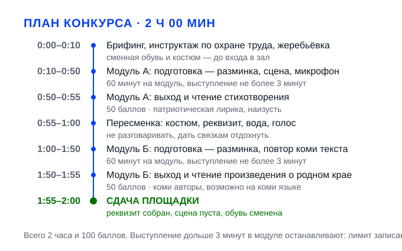
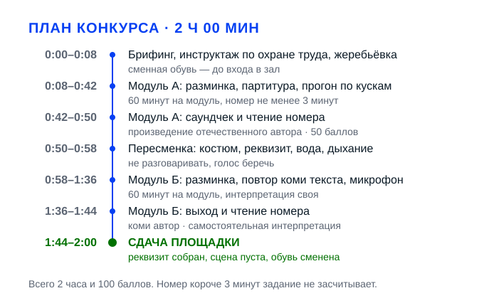
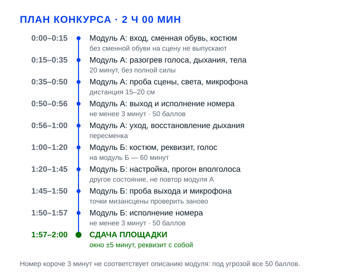

Исполнительское мастерство (театральное искусство) (Р)
Задания ниже — официальные файлы «Абилимпикс» (источник: abilympics-russia.ru), разложенные по категориям. Решения написаны по тексту задания, регламенту и критериям оценки; в них указано, что именно проверяет эксперт.
Школьник
14–16 лет, базовый уровень заданияВыдержка из официального конкурсного задания: страницы, относящиеся к категории «Школьник» (стр. 5–7 источника).
Пошаговое решение
Задание категории «Школьники» — это два номера по три минуты, и оба читаются наизусть на сцене с микрофоном. В модуле А звучит стихотворение отечественного автора в жанре патриотической лирики, в модуле Б — произведение коми поэтов о родном крае, причём второй номер разрешено исполнять на коми языке. На каждый модуль отведено по 60 минут, всё задание укладывается в 2 часа, а оценивают модули отдельно: по 50 баллов, критерий у обоих измеримый, тип «И», в сумме — 100. Главное, что записано в результате модуля, — эффективное использование мимики и жестов во время чтения, поэтому «выучить и рассказать» здесь не работает: смотрят, насколько лицо и руки несут тот же смысл, что и голос. Ниже — весь путь от разбора конкурсного задания до ухода со сцены после второго номера, с расчётом на то, что готовитесь вы задолго до чемпионата, а на площадке только повторяете отработанное.

Задача 1. Разобрать конкурсное задание и собрать материал двух номеровМодули А и Б · по 50 баллов
До первой репетиции нужно точно знать, что оценивают: два номера, каждый не дольше трёх минут, оба наизусть, оба на сцене с микрофоном, по 50 баллов за модуль и 100 в сумме. Здесь же выбираются тексты под требования модулей и собирается всё, что можно принести на площадку: реквизит, костюм, сменная обувь. Ошибка на этом этапе не лечится репетициями: если стихотворение не патриотическая лирика или не укладывается в 180 секунд, вы теряете не технику исполнения, а сам зачёт по модулю.
Действие 1.1. Прочитать задание и выписать его ограничения
Шаг 1.1.1
Берём распечатку конкурсного задания и выписываем на отдельный лист шесть чисел, по которым строится вся подготовка: два модуля, по 60 минут на каждый, 2 часа на всё задание, не более 3 минут на одно выступление, по 50 баллов за модуль и 100 в сумме. Рядом с числом «3 минуты» сразу ставим второе — 180 секунд, потому что тренироваться вы будете именно по секундомеру, а не «на глаз». Лист вешаем там, где репетируете: он должен попадаться на глаза каждый раз.
Ограничение по времени — единственное, что нельзя обойти: три минуты отводятся на номер целиком, включая первую строку после выхода и последнюю перед уходом. Если не выписать это заранее, текст на 40 строк кажется прекрасным, а на прогоне идёт четыре с половиной минуты. Кроме того, 50 баллов за модуль — это половина результата, и распределяются они по измеримым признакам, а не по общему впечатлению.
На листе стоят все шесть чисел, и вы можете, не подглядывая, ответить, сколько времени длится один модуль и сколько — всё задание. Проверьте себя простым вопросом: если бы номер шёл 3 минуты 20 секунд, что именно нарушено и чем это грозит? Если ответ «нарушен лимит выступления», лист прочитан правильно.
Самая частая ошибка — прочитать задание один раз по диагонали и запомнить только «читаем стихотворение наизусть». Тогда из поля зрения выпадают и жанр, и лимит в три минуты, и требования к сцене с микрофоном: участник готовит концертный номер на пять минут и узнаёт о лимите на площадке, когда время уже не вернуть.
Эксперт сверяет ваш номер с этими же числами ещё до выхода на сцену: в протоколе стоит модуль, критерий типа «И» и максимальный балл 50, и всё, что выходит за рамки описания модуля, оценить по этому критерию невозможно.
Шаг 1.1.2
Выписываем требования к содержанию отдельным блоком. Модуль А — стихотворение отечественного автора именно в жанре патриотической лирики, наизусть. Модуль Б — произведение коми поэтов о родном крае, тоже наизусть, и здесь прямо разрешено исполнение на коми языке. Ниже переписываем фразу про то, что возможно включение элементов вокала а-капелла, элементов хореографии, реквизита, музыкальных инструментов и сценической одежды, — это не украшение списка, а ваши законные права на площадке.
Жанр — это не формальность, а рамка, по которой эксперт понимает, что перед ним модуль А, а не произвольный номер. Стихотворение о войне, о родине, о родном городе ложится в критерий, а лирика о личных переживаниях без этой темы — нет. Разрешённые дополнения дают вам законные инструменты выразительности: жест, реквизит, костюм работают на тот самый результат про мимику и жесты.
Проверьте, что по каждому модулю у вас есть ответ на три вопроса: чей текст, какой жанр или тема, на каком языке исполняется. Если хотя бы на один вопрос ответа нет, текст не готов к работе, каким бы красивым он ни казался при чтении про себя.
Типичная ошибка — взять для модуля А хорошее стихотворение о любви или о природе, решив, что «о природе — это тоже про родину». Эксперт оценивает соответствие описанию модуля, и такой номер теряет баллы не за исполнение, а за несоответствие жанру, что обиднее всего, потому что читать вы можете прекрасно.
Эксперт первым делом смотрит на заявленный текст и автора: совпадает ли это с описанием модуля в задании. Спорные случаи решает главный эксперт, поэтому сомнительный текст лучше согласовать заранее, а не выяснять отношения на сцене.
Шаг 1.1.3
Отдельным столбцом выписываем правила площадки, потому что за их нарушение снимают не баллы, а допуск. Сменная обувь обязательна: без неё на сцену не выпускают вообще. С собой нельзя брать папку-планшет, блокноты, книги, шпаргалки, продукты, горящие свечи, бенгальские огни и подобное. К самостоятельному выполнению допускаются участники от 14 лет, прошедшие инструктаж по охране труда. Площадка — сценическое пространство актового зала площадью 173 квадратных метра и вместимостью 103 посадочных места.
Эти пункты кажутся бытовыми, но именно они чаще всего ломают выступление: участник приезжает в одной обуви, на сцену его не пускают, начинается суета, и номер, отрепетированный дома, играется на нервах. Запрет на шпаргалки имеет прямое отношение к критерию: чтение должно быть наизусть, и листок в руке превращает номер в чтение с листа, за которое баллы по модулю не начисляются в полном объёме.
Соберите всё необходимое в один список и физически проверьте вечером перед выездом: сменная обувь в отдельном мешке, костюм на плечиках, реквизит в коробке, в сумке нет ни одного запрещённого предмета. Список должен быть коротким настолько, чтобы его можно было проверить за минуту.
Ошибка новичка — положить в сумку на всякий случай блокнот с текстом и планшет с планом выступления. На площадку это не пройдёт, а время на объяснения уйдёт из модуля. Вторая ошибка — приехать в уличной обуви, рассчитывая, что «в зале же не грязно»: требование про сменную обувь не обсуждается и записано в правилах отдельной строкой.
Эксперт проверяет обувь и содержимое рук до выхода на сцену, буквально у кулис. Разговор короткий: есть сменная обувь — проходите, нет — вопрос решается через главного эксперта, и время выступления при этом не сдвигается.
Действие 1.2. Выбрать стихотворение для модуля А
Шаг 1.2.1
Отбираем варианты по арифметике, а не по вкусу: при спокойном сценическом темпе вы прочитываете примерно 8–10 строк в минуту, значит для двух с половиной минут звучания нужно 20–26 строк, а для трёх минут — не больше 28. Открываем три-четыре стихотворения патриотической лирики отечественных авторов, считаем строки и сразу отсекаем всё, что длиннее. Оставшиеся читаем вслух со секундомером в руке, не играя, а просто проговаривая, и записываем время рядом с названием.
Считать строки нужно потому, что три минуты — жёсткий лимит, а не пожелание, и запас нужен на выход, на первую паузу перед текстом и на финальную остановку, без которой номер обрывается на полуслове. Если стихотворение укладывается в 2:20–2:40, у вас остаётся двадцать-сорок секунд воздуха — они и превращают чтение в номер. Текст, который в спокойном темпе идёт 3:10, вы не сократите без потери смысла, а спешка съест и дикцию, и выразительность.
У вас есть табличка из трёх-четырёх строк: название, автор, число строк, время вслух. Годным считается вариант, где время не превышает 2:45 при спокойном чтении. Если все варианты вышли за лимит, ищите фрагмент — задание прямо разрешает читать произведение или его фрагмент.
Классическая ошибка — выбирать по красоте текста, не проверяя хронометраж, и обнаруживать перебор на третьей репетиции. Вторая — брать отрывок, который начинается с середины мысли: фрагмент должен быть смыслово замкнутым, иначе зритель и эксперт не понимают, о чём речь, а вы тратите первые двадцать секунд на вводные слова, которых в тексте нет.
Эксперт слышит, уложились вы в лимит или нет, по фактическому времени. Если номер перевалил за три минуты, его останавливают, и это фиксируется в протоколе как выход за регламент модуля.
Шаг 1.2.2
Проверяем каждый отобранный текст по двум формальным признакам. Первый: автор — отечественный, то есть русский или российский поэт, а не перевод зарубежного, даже если перевод сделан прекрасно. Второй: стихотворение действительно принадлежит патриотической лирике — в нём есть родина, страна, город, поколение, память, а не только частное чувство. Полезно сформулировать тему одной фразой, например «стихотворение о том, как память о войне живёт в семье», и записать её рядом с названием.
Формулировка темы нужна не для отчёта, а для режиссуры: мимика и жест рождаются из понимания, о чём вы говорите, и без этой фразы лицо остаётся нейтральным, а руки висят. Кроме того, соответствие жанру — часть описания модуля, по которому выставлен максимум 50 баллов: номер вне жанра оценивать по этому критерию просто нечем, и участник теряет очки не за технику, а за выбор материала.
Рядом с названием стоит одна фраза о теме, и она не повторяет название дословно. Если вы не можете объяснить, о чём стихотворение, кроме «о родине», берите другое: скорее всего, вы его не чувствуете и на сцене будете изображать чувство, а это видно сразу.
Ошибка — подменить жанр «гражданской лирикой на всякую тему» или взять текст, где патриотизм сведён к последней строке, а остальное — пейзаж. Такое стихотворение держится на одном финальном аккорде, и две с половиной минуты до него вы читаете пустоту, не зная, что играть лицом и руками.
Эксперт определяет жанр по первой минуте звучания. Ему достаточно услышать тему и тон, чтобы понять, модуль А это или произвольный номер, и сомнение всегда трактуется не в пользу участника.
Шаг 1.2.3
Читаем выбранный текст вслух в трёх режимах: тихо, как для себя; средне, как для класса; и полно, как со сцены на последний ряд. Слушаем не смысл, а голос: не срывается ли он на верхних нотах в патетических местах, хватает ли дыхания до конца длинной строки, не съедаются ли окончания там, где рядом стоят три согласных подряд. Отмечаем карандашом места, где голос садится, и решаем, можно ли их обойти интонацией.
Так проверяется техническая пригодность текста именно для вас, а не его литературное качество. Самые частые потери на сцене идут не от забытых слов, а от того, что дыхание кончилось в середине строки и последние слова вытолкнуты шёпотом: эксперт слышит обрыв, и выразительность в этом месте исчезает. Текст, который вы читаете полным голосом три раза подряд без хрипа, будет звучать и в волнении.
После третьего прочтения голос не садится, окончания слышны, длинные строки доходят до точки. Полезно записать одно прочтение на диктофон телефона и прослушать в наушниках: на записи сразу слышно, где вы бормочете, а где звучите.
Ошибка — выбирать текст, который вам нравится в чужом исполнении. У другого артиста другой голос, другой регистр и другая манера, и то, что у него летит, у вас может упасть на первой же строке. Вторая ошибка — не проверять окончания: зал и микрофон безжалостны к проглоченным согласным, а на слух в комнате этого почти не заметно.
Эксперт оценивает звучание голоса в первую очередь на слух, с места в зале, а не рядом со сценой. Разборчивость последних слов строки — один из первых признаков, по которым видно уровень подготовки.
Действие 1.3. Выбрать произведение коми поэта для модуля Б
Шаг 1.3.1
Уточняем у главного эксперта компетенции действующий список авторов и допустимые тексты для регионального модуля: в задании сказано «коми поэты о родном крае», и в 30 процентах изменений, которые согласуются не менее чем за две недели до соревнований, возможна замена жанра или названия. Значит, список на вашей площадке нужно получить заранее, официально, а не собирать по форумам. Дальше решаем, читаете вы в русском переводе или на коми языке: второе разрешено и оценивается как исполнение, но требует отдельной работы с произношением.
Модуль Б стоит столько же, сколько модуль А, — 50 баллов, и проваливается он чаще не из-за чтения, а из-за материала: взят автор, которого нет в списке, или текст не о родном крае. Согласование за две недели существует именно для того, чтобы вы не выясняли это на площадке. Исполнение на коми языке — сильный ход, но только при отработанном произношении: ошибки слышны и мешают понимать смысл.
У вас на руках письменное подтверждение списка: сообщение от главного эксперта, распечатка положения или запись в дневнике подготовки с датой и фамилией того, кто подтвердил. Выбранный автор и название в этом списке есть. Если читаете на коми языке, есть человек, который прослушал вас и поправил произношение.
Ошибка — взять первого попавшегося коми поэта из интернета, решив, что «всё равно о родном крае». Текст вне списка или вне темы обнуляет смысл модуля. Вторая ошибка — взяться за коми язык за неделю до старта: акцент и спотыкание на звуках читаются как неуверенность, и выигрыша от оригинала не будет.
Эксперт проверяет соответствие текста модулю до выступления, а во время чтения слушает, насколько свободно вы владеете произношением, если выбрали язык оригинала.
Шаг 1.3.2
Смотрим на текст модуля Б как на второй номер программы, а не как на копию первого. Проверяем, есть ли в нём конкретные образы родного края — река, тайга, село, дом, зимняя дорога, — потому что абстрактное «люблю мой край» не даёт вам ни жеста, ни мимики. Затем ставим два текста рядом и сравниваем настроение: если оба номера звучат одинаково торжественно и на одном дыхании, второй проиграет первому по впечатлению, даже будучи не хуже. Разводим их по темпераменту: один более сдержанный и тихий, второй — более открытый.
Оценка идёт по каждому модулю отдельно, по 50 баллов, и эксперт смотрит два номера подряд. Одинаковые по манере номера сливаются в один, и второй теряет силу: кажется, что вы показали то же самое ещё раз. Конкретный образ в тексте — ваш главный помощник, потому что на него ложится жест: названная река даёт движение руки, названный дом — взгляд в сторону, а без образа жест выходит случайным.
Рядом с названием второго текста написано, чем он отличается от первого по настроению и темпу, и названы два-три конкретных образа, на которые вы будете опираться в жесте. Если разница формулируется только словом «другое», этого мало: перечитайте оба текста и найдите разницу в движении.
Ошибка — выбрать для модуля Б торжественную оду, почти близнеца первого стихотворения. Два подряд пафосных номера утомляют, а второй кажется слабее просто по порядку. Вторая ошибка — взять текст, целиком состоящий из абстракций, и потом мучиться, что делать руками и куда смотреть.
Эксперт держит в голове оба модуля и сравнивает их между собой: повтор манеры он отмечает как отсутствие диапазона, а разные по характеру номера показывают, что участник умеет переключаться.
Действие 1.4. Собрать реквизит, костюм и сменную обувь
Шаг 1.4.1
Составляем список того, что поедет с вами: сменная обувь отдельно в мешке, сценический костюм или его элементы, реквизит, если он есть, и всё, что нужно для двух разных номеров. Каждый предмет реквизита проверяем одним вопросом: он помогает жесту или занимает руки? Платок, книга, письмо, свеча в подсвечнике работают на образ, а тяжёлый предмет, который надо постоянно держать двумя руками, отнимает у вас главный инструмент — свободную кисть. Костюм проверяем на шуршание и блеск: в софитах синтетика блестит, а жёсткая ткань скрипит на каждом повороте.
Реквизит и костюм разрешены заданием прямо, и это законный способ усилить выразительность: сценическая одежда, музыкальные инструменты, небольшой реквизит — всё это можно привезти с собой. Но у каждой вещи на сцене есть цена: если предмет мешает жесту, вы теряете больше, чем приобретаете, потому что оценивают именно использование мимики и жестов. Шуршащий костюм отвлекает от лица — а лицо здесь главное.
Проверка простая и делается дома: наденьте костюм и прочитайте номер целиком перед зеркалом. Если ткань шуршит громче голоса, если рукав цепляется за пуговицу, если обувь скользит по гладкому полу — предмет не годится. Реквизит должен удобно лежать в руке и не требовать поиска в кармане в середине текста.
Частая ошибка — набрать реквизита «для красоты»: три предмета, которые надо перекладывать по ходу, превращают чтение в жонглирование, и текст начинает обслуживать вещи. Вторая ошибка — новая обувь на жёсткой подошве, надетая впервые на выступлении: скольжение видно сразу, а привыкнуть за три минуты невозможно.
Эксперт смотрит на сцену целиком, и костюм с реквизитом он оценивает как часть номера: уместность, аккуратность, отсутствие отвлекающих деталей. Яркий предмет, живущий своей жизнью, он отметит как потерю контроля над сценическим пространством.
Шаг 1.4.2
Отдельно проходим по запретам и убираем из сумки всё лишнее: папку-планшет, блокноты, книги, шпаргалки, продукты. Горящие свечи и бенгальские огни не берём даже как реквизит, хотя они эффектны, — они запрещены прямо и без исключений. Если для образа нужен огонь, его изображают светом, а не пламенем. Собираем сумку так, чтобы на площадке не пришлось ничего искать: костюм отдельно, обувь отдельно, реквизит в коробке с подписью.
Запреты записаны в разделе охраны труда и обсуждать их на месте бессмысленно: участник с шпаргалкой или с горящей свечой просто не выйдет на сцену, а время модуля уже пойдёт. Кроме того, аккуратно собранные вещи экономят минуты в пересменке между модулями, когда до выхода остаётся совсем немного, а вам нужно переодеться, попить воды и собрать дыхание. Беспорядок в вещах почти всегда превращается в беспорядок в голове.
Перед выходом из дома вы открываете сумку и проверяете по списку: обувь есть, костюм есть, реквизит на месте, запрещённых предметов нет. На площадке повторяете ту же проверку за пятнадцать минут до выхода — этого достаточно, чтобы не искать пуговицу в темноте за кулисами.
Ошибка — привезти реквизит, который нельзя проносить, и узнать об этом у сцены: замена не предусмотрена, номер играется без него, и вся постановка, построенная на предмете, рассыпается. Вторая ошибка — сложить костюм в общий рюкзак с едой и бутылкой воды: пятно на белой рубашке обнаруживается за минуту до выхода.
Эксперт проверяет содержимое рук у кулис и фиксирует нарушения регламента. Всё, что происходит у сцены до выхода, он видит, и опоздание из-за поиска вещей он тоже видит.
Задача 2. Разобрать текст на исполнительскую партитуруМодули А и Б · 50 + 50 баллов
Партитура — это текст, размеченный карандашом: где смысловой кусок кончается, где стоит ударение, где пауза и какой она длины, где голос поднимается, а где падает. Без партитуры мимика и жест получаются случайными, потому что лицо не знает, что сейчас происходит в строке. Здесь вы делаете разметку для двух текстов сразу и добиваетесь, чтобы к концу работы вы могли читать по разметке, а не по памяти о том, как читал кто-то другой.
Действие 2.1. Разбить текст на смысловые куски
Шаг 2.1.1
Кладём перед собой текст в крупной печати, с междустрочным интервалом в два раза больше обычного, — на такой странице есть куда ставить пометки. Делим стихотворение на куски по смыслу, а не по строфам: кусок — это законченная мысль, которая может занимать две строки, а может шесть. Границу ставим там, где меняется то, о чём говорится: было описание дороги — началось обращение к матери, было воспоминание — начался сегодняшний день. Всего для трёхминутного номера получается четыре-шесть кусков.
Смысловой кусок — это единица, из которой потом вырастает и интонация, и жест. Пока текст не поделён, вы читаете его ровной линией, и лицо остаётся одинаковым от первой строки до последней, а эксперт оценивает именно смену выразительных средств по ходу номера. Шесть кусков дают шесть поворотов, шесть изменений в лице и теле — этого достаточно, чтобы номер выглядел живым, и не так много, чтобы запутаться.
На странице видны границы кусков, и каждый подписан одним-двумя словами на полях: «дорога», «дом», «письмо», «возвращение». Перескажите текст по этим подписям своими словами — если получается связная история, куски выделены верно.
Ошибка — делить по строфам механически: в стихах строфа часто разрывает мысль пополам, и вы получаете границу там, где её нет, начиная новую интонацию на середине фразы. Вторая ошибка — сделать два огромных куска на весь текст и потом удивляться, что номер звучит монотонно.
Эксперт слышит разбивку по паузам и по смене интонации. Если между кусками нет воздуха, он воспринимает текст как поток и отмечает отсутствие композиции в номере.
Шаг 2.1.2
Внутри каждого куска находим главное слово — то, ради которого кусок существует, и подчёркиваем его одной чертой. Обычно это существительное или глагол с конкретным значением: «дорога», «вернулся», «мать», «тишина». Служебные слова, местоимения и прилагательные вроде «большой» и «красивый» главными почти никогда не бывают. Если главных слов в куске получилось три, кусок слишком длинный — вернитесь к предыдущему шагу и разделите его.
Ударение — то, что превращает чтение в речь. Без выделенного главного слова строка звучит как перечисление, микрофон доносит до зала ровный гул, и смысл теряется, даже если все слова произнесены правильно. Одно ударение на кусок даёт ясную мысль; три подряд превращаются в крик, в котором ничего не различить. С микрофоном это особенно заметно: аппаратура подчёркивает всё, что вы выделяете голосом.
В каждом куске подчёркнуто ровно одно слово, и вы можете прочитать кусок, выделив только его, а остальное проговорив ровно. Проверьте на слух с диктофоном: если при прослушивании понятно, о чём кусок, ударение стоит верно.
Типичная ошибка — выделять голосом предпоследнее слово строки, потому что там кончается дыхание и голос сам собой поднимается. Получается ритмичное «та-та-та-ТАМ, та-та-та-ТАМ», которое через минуту начинает убаюкивать. Вторая ошибка — выделять всё: тогда не выделено ничего.
Эксперт слушает смысл, а не только звук. Когда ударения расставлены верно, ему не нужно напрягаться, чтобы понять текст, и всё внимание он отдаёт мимике и жесту — то есть тому, за что идёт борьба.
Шаг 2.1.3
Проверяем разметку на слух: читаем текст целиком, ведя карандашом по странице, и слушаем, не возникает ли ощущения, что вы пересказываете список. Если в каком-то месте внимание проваливается — вы сами перестаёте понимать, о чём читаете, — значит там потеряна граница или ударение. Такое место перечитываем медленнее, вслух, и правим разметку, пока кусок не начнёт звучать как отдельная мысль. Хороший признак: после правки вы можете объяснить кусок одной фразой, не глядя в текст.
Разметка существует не для красоты страницы, а для того, чтобы в момент волнения у вас была опора: на сцене память подводит именно там, где текст не понят, а заучен как последовательность звуков. Куски и ударения держат смысл, а смысл вытаскивает слова. Именно поэтому разбор делается до заучивания, а не после: заученный без разметки текст приходится разбирать заново, и часто проще выучить другой.
Вы можете рассказать текст своими словами, кусок за куском, не подглядывая. Если рассказываете — разметка рабочая. Если сбиваетесь на середине второго куска, там не хватает ясности, а не памяти — перечитайте кусок и поправьте границы.
Ошибка — размечать текст и не проверять разметку вслух, оставив её красивой схемой на бумаге. Другая ошибка — размечать сразу после того, как текст выучен наизусть: память сопротивляется, вы продолжаете читать по старой привычке и новые паузы не приживаются.
Эксперт не видит вашей страницы, он слышит результат: ясность мысли, точность акцентов, живость интонации. Разметка — инструмент, по которому этот результат достигается.
Действие 2.2. Расставить паузы и дыхание
Шаг 2.2.1
Между кусками ставим паузу и подписываем её длину: короткая — на счёт «раз», средняя — на «раз-два», длинная — на «раз-два-три». Дыхание берём только в паузах и только там, где оно предусмотрено разметкой, а не там, где кончился воздух. Для трёхминутного номера это обычно четыре-пять длинных пауз и десяток коротких. Паузу перед первой строкой отмечаем отдельно, двойной чертой: она длиннее всех остальных.
Пауза — самый сильный инструмент чтеца и самый дешёвый способ удержать внимание: в тишине зал успевает подумать о том, что вы сказали, и следующий кусок ложится на подготовленную почву. Одновременно пауза решает техническую задачу — в неё уходит вдох, и дыхания хватает до конца длинной строки. Без размеченных пауз участник дышит там, где припекло, выхватывает воздух посреди слова, и в микрофон это слышно как всхлип.
Прочитайте текст, держа секундомер, и проверьте: длинная пауза не короче двух секунд, короткая — не меньше половины секунды. Если пауза короче, зритель её не заметит: в зале время течёт медленнее, чем на сцене, и то, что вам кажется долгим молчанием, для зала — едва заметная остановка.
Частая ошибка — бояться тишины и заполнять паузу словами-связками, которых в тексте нет: «и вот», «значит», «как бы». Вторая ошибка — ставить паузу после каждой строки, механически, из-за чего номер превращается в рубленую речь и теряет три минуты на пустоту, выходя за лимит.
Эксперт отмечает, держит ли участник паузу или спешит её заполнить. Способность молчать на сцене — один из признаков сценической культуры, и она видна с первого куска.
Шаг 2.2.2
Определяем, где дыхание длинное, а где короткое. Длинный вдох — перед началом куска и перед строками с большим количеством слов; короткий — внутри куска, в запятой. Там, где строка не даёт места для вдоха, меняем интонацию: понижаем голос, замедляем темп, и воздуха требуется меньше. Полезно проставить над словами маленькие галочки в местах вдоха и потом читать, глядя на них, — так дыхание перестаёт быть аварийным.
Дыхание определяет, дойдёт ли до зала последнее слово строки. Если воздух кончается на предпоследнем слове, окончание выпадает вместе со смыслом: в микрофон попадает выдох вместо слова. Размеченное дыхание заодно снимает волнение — когда вы знаете, где вдохнёте, тело работает ровнее. Три минуты на одном дыхании не читаются, а на сбитом к финалу появляется дрожь в голосе.
Прочитайте номер три раза подряд, не делая вдохов вне разметки. Если после третьего раза голос не срывается и вы не ловите воздух ртом, разметка верная. Если ловите — в этом месте нужна дополнительная пауза или более короткая фраза.
Ошибка — набирать полную грудь перед каждой строкой: на сцене это выглядит как демонстративное сопение, а звук становится жёстким. Вторая ошибка — дышать только в конце куска, из-за чего середина куска проваливается в шёпот.
Эксперт слышит дыхание как часть речи: ровное дыхание — признак школы, судорожное — признак того, что текст не отработан. В микрофон дыхание слышно особенно отчётливо.
Шаг 2.2.3
Отмечаем на странице места, где голос должен опуститься, и места, где подняться: стрелка вниз в конце утвердительной мысли, стрелка вверх в вопросе и в перечислении перед последним элементом. Таких пометок на трёхминутный текст обычно получается шесть-восемь, и этого достаточно, чтобы речь перестала быть плоской. Проверяем разметку на слух: читаем и слушаем, не превращается ли каждое предложение в вопрос из-за лишней стрелки вверх.
Движение голоса — то, что отличает чтение от проговаривания. Когда интонация всё время на одном уровне, зал перестаёт различать смысл примерно к сороковой секунде, а эксперт фиксирует монотонность, хотя слова произнесены верно. Одновременно интонация задаёт работу лицу: на подъёме брови идут вверх сами, на спаде — опускаются, и мимика начинает жить вместе с голосом, а не отдельно от него.
Прослушайте запись и отметьте три места, где голос звучит выше и три, где ниже. Если разница слышна вам самому в наушниках, она будет слышна и в зале. Если запись звучит ровно, как чтение новостей, стрелок на странице мало.
Ошибка — поднимать голос в конце каждой строки, потому что так получается само: получается вопросительная интонация там, где её нет, и стихотворение начинает звучать неуверенно. Вторая ошибка — держать одну высокую ноту весь номер, чтобы казаться эмоциональнее: на третьей минуте это утомляет и голос садится.
Эксперт оценивает интонационное разнообразие как часть выразительности. Плоская интонация читается им как неготовность работать с текстом, даже при хорошей дикции.
Действие 2.3. Определить темп и уложиться в 180 секунд
Шаг 2.3.1
Выбираем темп по смыслу, а не по привычке: тревожные и быстрые куски читаем чуть скорее, лирические и прощальные — медленнее, примерно на треть. Ориентир для сцены — 90–110 слов в минуту, это медленнее обычной речи, и на слух из зала такой темп воспринимается как спокойный. Пробуем три темпа подряд — медленный, средний, быстрый — и записываем время каждого, чтобы видеть, сколько секунд даёт изменение.
Темп — регулятор и смысла, и хронометража одновременно. Задание ограничивает выступление тремя минутами, а не «примерно тремя», поэтому запас по времени нужен обязательно: в волнении человек ускоряется на десять-пятнадцать процентов, и номер на 2:50 в спокойном состоянии на сцене легко уходит за три минуты. Спокойный темп даёт и второе преимущество — в нём слышны окончания, и микрофон доносит слова, а не поток звука.
У вас есть три цифры времени для трёх темпов. Рабочим считается тот, в котором номер идёт 2:20–2:40, а текст остаётся разборчивым на слух с расстояния последнего ряда. Если быстрый темп даёт 2:10, а медленный 3:10, выберите средний и работайте с ним, не пытаясь уложиться за счёт скороговорки.
Самая частая ошибка — разгонять темп, чтобы уложить слишком длинный текст в лимит. Слова доходят, но смысл исчезает, и баллы за выразительность теряются полностью. Вторая ошибка — не замерять время вообще и ориентироваться на ощущение: на сцене оно обманывает всегда, потому что время под волнением сжимается.
Эксперт замеряет выступление по факту и видит, уложился участник в три минуты или нет. Кроме того, по темпу он сразу понимает, репетировал ли участник с хронометром.
Шаг 2.3.2
Ставим на телефон таймер с обратным отсчётом от 180 секунд и читаем номер, глядя на секунды только в паузах: подглядывать в таймер во время строки — значит терять контакт с залом. Записываем, на какой строке прозвучало 60, 120 и 150 секунд; по этим трём точкам видно, где номер провисает или разгоняется. Если на 150 секундах вы ещё не дошли до последнего куска, номер не укладывается, и сокращать надо не темп, а текст.
Три контрольные точки — самый практичный способ управлять временем на сцене: вы знаете, что к моменту, когда в зале станет тише, у вас должно быть прочитано определённое место. Если на прогоне вы отстаёте, причина обычно не в темпе, а в лишних паузах и в кусках, которые разрослись. Сокращение текста всегда честнее ускорения: за три минуты зритель успевает услышать ровно столько, сколько успевает.
Записаны три отметки времени и строка, на которой они приходятся. Последняя строка звучит до 175 секунд, и у вас остаётся пять секунд на поклон и уход. Если финал приходится на 179-ю секунду, вы в зоне риска и текст надо сокращать.
Ошибка — сокращать текст в последний момент, вычёркивая строки из середины куска: ломается смысл и ритм, а экономия выходит в десять секунд. Вторая ошибка — верить таймеру на телефоне, лежащем в кармане: вибрация и звук на сцене не слышны, и вы узнаёте о времени только по реакции эксперта.
Эксперт смотрит на часы от первой строки до последней. Уверенное чувство времени он отмечает как профессиональный признак, а судорожные взгляды на телефон в середине номера — как потерю сценического внимания.
Шаг 2.3.3
Проверяем запас: читаем номер в ускоренном на десять процентов темпе — именно так он прозвучит в волнении — и смотрим, уложились ли в 180 секунд. Если при ускорении вы выходите за лимит, сокращаем текст на один кусок или на две-три строки и снова проверяем. Записываем оба времени, спокойное и ускоренное, на титульном листе разметки, чтобы видеть прогресс тренировок.
Волнение ускоряет речь, и это физиология, а не недостаток дисциплины: на сцене сердце бьётся чаще, дыхание становится поверхностным, и темп уезжает вверх. Запас в двадцать секунд — это страховка от единственной ошибки, которую нельзя исправить после выступления: выход за регламент модуля. Одновременно сокращение текста делает номер плотнее: вычищенные вялые строки не тянут за собой внимание зала.
Ускоренный прогон даёт время не больше 175 секунд, а спокойный — не больше 165. Если разница между ними больше двадцати секунд, значит вы читаете на пределе и в волнении сорвётесь в скороговорку — сбавьте спокойный темп.
Ошибка — оставлять текст, который в спокойном темпе идёт 3:00 ровно: запаса нет, и на сцене номер гарантированно выйдет за лимит. Вторая ошибка — сокращать финал, потому что его проще вычеркнуть: без финала номер обрывается, и впечатление теряется целиком.
Эксперт видит, что номер заканчивается уверенно, а не обрывается на полуфразе. Оборванный финал читается как неподготовленность, даже если текст был прочитан без единой ошибки.
Задача 3. Подготовить голос, дыхание и телоМодули А и Б · 50 + 50 баллов
Инструмент чтеца — это дыхание, артикуляция, осанка и лицо, и всё это тренируется отдельно от текста. Разминка занимает двадцать минут и делается каждый день, а на площадке повторяется в укороченном виде перед выходом: без разогретого голоса первые строки звучат сипло, а без разогретого тела жест выходит деревянным. Здесь же ставится то, что в задании названо главным результатом модуля, — мимика и жест как рабочие инструменты, а не как случайные движения.
Действие 3.1. Поставить опору дыхания
Шаг 3.1.1
Учимся дышать животом, а не плечами: кладём ладонь на нижние рёбра и делаем вдох так, чтобы ладонь отошла, а плечи остались на месте. Вдох — на четыре счёта через нос, задержка на два, выдох на шесть через плотно сжатые губы, как будто задуваем свечу на расстоянии. Восемь-десять таких циклов утром и столько же перед выходом; на разминку уходит около пяти минут.
Опора дыхания — то, на чём держится всё чтение: от неё зависит и громкость, и длительность фразы, и ровность голоса в волнении. Когда дышит грудная клетка, воздуха хватает на полстроки, и к середине номера появляется торопливость. Кроме того, медленный выдох физиологически снижает пульс, а это прямой способ справиться с мандражом перед выходом: три-четыре цикла на четыре-два-шесть заметно успокаивают.
Проверьте рукой: на вдохе двигаются рёбра и живот, плечи неподвижны. Выдох длится заметно дольше вдоха, и в конце выдоха не хочется схватить воздух ртом. Если после шести циклов появляется лёгкое головокружение, вы дышите слишком интенсивно — сбавьте глубину.
Ошибка — поднимать плечи на вдохе: внешне это выглядит как «набираю воздух перед ответственным моментом», а на деле даёт поверхностное дыхание и дрожащий голос. Вторая ошибка — делать дыхательную гимнастику один раз, за неделю до конкурса: навык держится только при ежедневном повторении.
Эксперт видит дыхание по плечам и по тому, как участник держит фразу. Судорожный вдох перед длинной строкой он отмечает как техническую слабость, а ровный выдох — как признак школы.
Шаг 3.1.2
Тренируем распределение выдоха на фразу. Берём строку из своего текста, делаем вдох и читаем её на одном выдохе, не добирая воздух. Затем читаем две строки на одном выдохе, потом три — до тех пор, пока не начнёте укладываться в четыре строки без натуги. Это упражнение делается на своём материале, а не на абстрактных слогах, потому что именно ваши строки имеют свою длину и своё дыхание.
Длинный выдох — то, что позволяет держать кусок целиком и не разрывать мысль вдохом посреди неё. На сцене с микрофоном это особенно важно: аппаратура усиливает любой вдох, попавший в мембрану, и зритель слышит не текст, а дыхание. Когда вы умеете растянуть выдох на четыре строки, паузы становятся вашим решением, а не вынужденной остановкой.
Вы читаете четыре строки подряд без добора воздуха, и звук остаётся ровным до последнего слова. Проверьте по секундомеру: выдох на спокойном чтении длится не меньше восьми секунд. Если на четвёртой строке голос уходит в шёпот, выдох ещё короткий.
Ошибка — добирать воздух в середине слова, потому что очень хочется: получается всхлип, который в микрофон звучит громче текста. Вторая ошибка — экономить воздух и читать тихо, чтобы дотянуть до конца строки: тихое чтение не доходит до последнего ряда, и смысл теряется.
Эксперт слушает, ровно ли звучит фраза от начала до конца. Провал в конце строки он слышит сразу, и это одно из первых мест, где теряются баллы за выразительность.
Шаг 3.1.3
Отдельно работаем с паузой на вдохе: ставим задачу прочитать кусок так, чтобы вдох попадал точно в смысловую паузу, а не в случайное место. Для этого читаем медленно, с преувеличенными паузами, и в каждую паузу делаем спокойный вдох носом. Повторяем кусок пять раз, постепенно сокращая паузы до нормальной длины, — дыхание запоминает места и потом встаёт туда само, без контроля.
Вдох в смысловой паузе — это то, что делает речь естественной: слушатель не замечает дыхания, потому что оно совпадает с остановкой мысли. Когда вдох попадает в случайное место, возникает ощущение, что текст рвут на части, и микрофон подчёркивает этот разрыв. Пять повторений нужны потому, что дыхание управляется привычкой, а не сознанием: на сцене вы не будете думать о вдохе, он пойдёт туда, куда его натренировали.
Прочитайте кусок и запишите на диктофон. Прослушайте: если вдохов не слышно или они совпадают с паузами, работа сделана. Если слышно, где вы хватаете воздух, — повторяйте, пока пауза и вдох не совпадут.
Ошибка — дышать по счёту, как в упражнении, во время самого выступления: счёт отвлекает от текста, и лицо становится отсутствующим. Вторая ошибка — задерживать дыхание в начале номера от волнения и потом читать первые две строки на остатках воздуха.
Эксперт отмечает, совпадают ли вдохи с паузами. Это мелкая деталь, которая вместе с другими складывается в общее впечатление от культуры речи на сцене.
Действие 3.2. Разогреть артикуляцию и дикцию
Шаг 3.2.1
Начинаем с артикуляционной гимнастики для лица: круговые движения языком по внутренней стороне губ по десять раз в каждую сторону, «лошадка» — пощёлкивание языком двадцать раз, поджимание и вытягивание губ по десять раз, движение нижней челюсти вперёд-назад и в стороны по восемь раз. Затем произносим скороговорку на разные группы звуков, по три раза каждую, сначала медленно и чётко, потом в среднем темпе. Вся разминка занимает семь-восемь минут.
Лицо и язык — такие же мышцы, как руки, и им нужен разогрев, иначе первые строки звучат вяло: губы не успевают за мыслью, окончания смазываются, и микрофон доносит кашу. Скороговорки нужны не для скорости, а для того, чтобы включить точность: после них обычный текст кажется медленным, и вы начинаете выговаривать каждый слог. На школьниках это видно особенно ясно: без разминки голос звучит детским и тихим, а с разминкой — уверенным.
Проверьте по трём признакам: язык двигается свободно и не устаёт, губы держат положение без дрожи, скороговорка произносится в среднем темпе без запинок. Если на третьей скороговорке вы сбились, темп был слишком быстрым — снизьте и повторите.
Ошибка — пропускать разминку, когда времени мало: вялая артикуляция это первое, что выдаёт неопытность, и никакой текст её не перекроет. Вторая ошибка — разминать только язык и забывать про губы и челюсть, из-за чего звук остаётся плоским и тихим.
Эксперт слышит разборчивость с расстояния. Чёткая артикуляция даёт ему возможность оценивать смысл, а смазанная заставляет напрягаться — и общее впечатление падает независимо от качества текста.
Шаг 3.2.2
Работаем с дикцией на своём материале: берём самые неудобные строки из обоих номеров — те, где рядом стоят три-четыре согласных или много шипящих, — и проговариваем их медленно, гипертрофированно чётко, по пять раз каждую. Затем читаем строку в обычном темпе и слушаем, сохранилась ли чёткость. Таких строк в номере обычно три-четыре, и именно они выдают технику: остальное прощается, а на них спотыкается любой неподготовленный чтец.
Проблемные строки — это место, где участник теряет слова не от забывчивости, а от физиологии: язык не успевает перестроиться, и половина согласных исчезает. Если их отработать отдельно, весь текст звучит ровно, потому что основная часть строк проще. Кроме того, отработанная трудная строка даёт уверенность: вы знаете, что самое сложное место пройдёте чисто, и в волнении не сбиваетесь именно там, где обычно сбиваются все.
Трудные строки произносятся чисто и в медленном, и в рабочем темпе, причём три раза подряд без ошибок. Попросите кого-то из домашних послушать и записать строку с ваших слов — так сразу видно, все ли согласные на месте.
Ошибка — учить текст с ошибками в произношении: если слово много раз проговорено неправильно, оно так и останется в памяти, и переучивать придётся дольше, чем учить. Вторая ошибка — читать трудные строки быстро, «на автомате»: скорость закрепляет смазанность.
Эксперт обращает внимание на точку, где участник сбивается, и на то, восстанавливается ли он после сбоя. Чисто пройденное трудное место он отмечает как признак работы с материалом.
Шаг 3.2.3
Ставим громкость под конкретный зал: в актовом зале на 103 места с площадью 173 квадратных метра голос должен доходить до последнего ряда без крика. Тренируемся дома, представляя третий ряд и «посылая» звук в точку на стене напротив, а не себе под нос. Полезно один раз прочитать номер в большом помещении — в школьном спортзале или актовом зале — и послушать с последнего ряда: разница между комнатой и залом всегда неожиданно велика.
Громкость на сцене — это не сила, а полётность: звук должен идти вперёд, а не оставаться у вас перед лицом. Микрофон помогает, но не спасает: если вы читаете в себя, аппаратура усилит шёпот и дыхание, а не смысл, и в зале будет слышно шипение вместо текста. Проверка в реальном помещении нужна потому, что домашняя комната даёт ложное чувство достаточной громкости — стены близко, звук возвращается, и кажется, что вы звучите.
Попросите человека сесть на последнем ряду зала и показать рукой, слышно ли каждое слово. Если приходится напрягаться, чтобы разобрать текст, громкости не хватает. Хороший признак — слушатель на дальнем ряду не переспрашивает и не наклоняется вперёд.
Ошибка — компенсировать тихий голос криком в микрофон: получается резкий звук с искажениями, и лицо становится напряжённым, что убивает мимику. Вторая ошибка — проверять громкость только дома и надеяться, что «на месте разберусь»: на площадке для этого не будет ни времени, ни права на ошибку.
Эксперт сидит в зале и слышит ровно то же, что зритель. Если текст неразборчив с его места, он не может оценить выразительность, и баллы снижаются по факту неразборчивости, а не по намерению.
Действие 3.3. Поставить осанку, пластику и мимику
Шаг 3.3.1
Ставим корпус: стопы на ширине плеч, вес распределён на обе ноги, колени мягкие, плечи опущены и развёрнуты, макушка тянется вверх, подбородок параллелен полу. Проверяем у стены: затылок, лопатки, ягодицы и пятки касаются стены одновременно. Затем отходим и стараемся сохранить это положение, читая первую строку. Стоять нужно так, чтобы вас нельзя было толкнуть одним пальцем, — это и есть сценическая устойчивость.
Осанка — фундамент всего номера: от неё зависит дыхание, громкость и то, как воспринимается жест. Согбенная спина сжимает диафрагму, воздух уходит, голос садится, а руки, выросшие из согнутых плеч, делают мелкие и суетливые движения. Ровная спина даёт свободный вдох и крупный, читаемый жест. Кроме того, устойчивая стойка снимает часть волнения: тело, стоящее твёрдо, посылает мозгу сигнал, что всё под контролем.
Проверьте по стене и по ощущению: вес на обеих ногах, плечи не подняты к ушам, подбородок не задран и не опущен. Попросите кого-то толкнуть вас легонько в плечо — вы не должны делать шаг. Если покачиваетесь, стойка ещё не поставлена.
Ошибка — стоять, перенося вес на одну ногу и «позируя»: через минуту корпус начинает заваливаться, и участник незаметно переступает, что выглядит как нервозность. Вторая ошибка — втягивать живот и выпрямляться до неестественности: дыхание сковывается, и голос звучит зажато.
Эксперт видит осанку с первых секунд выхода. По тому, как участник стоит, он ещё до первой строки понимает уровень сценической подготовки и устойчивость.
Шаг 3.3.2
Ставим походку и выход: из-за кулис выходим спокойным шагом, не семеня и не маршируя, доходим до точки в двух-трёх метрах от микрофона, останавливаемся, ставим стопы, находим глазами зал и только потом начинаем читать. Между остановкой и первой строкой держим паузу в две-три секунды. Тренируем это отдельно от текста: выход, остановка, пауза, вдох, первая строка — пять раз подряд, пока не станет автоматическим.
Выход задаёт темп всему номеру: если вы вылетели на сцену и сразу начали читать, первые строки проглатываются, а зал не успевает переключиться на вас. Пауза перед первой строкой нужна и вам, и зрителю: она собирает внимание и даёт сделать вдох. Отработка выхода отдельно от текста важна потому, что в момент выхода вы волнуетесь сильнее всего, и тело должно делать привычное движение само, без участия мысли.
Выход занимает одинаковое время на каждом прогоне и не зависит от настроения: шаг спокойный, остановка на одной и той же точке, пауза до вдоха, первая строка на выдохе. Отметьте точку остановки на полу цветным скотчем при первой возможности — на площадке это делают заранее.
Ошибка — выходить и начинать читать на ходу: середина первой строки теряется за шагами, и микрофон ловит шорох одежды. Вторая ошибка — суетливый выход с поправлением одежды и волос: руками, занятыми собой, вы теряете первые секунды и производите впечатление неготовности.
Эксперт оценивает выход как начало номера: спокойствие, умение занять место, пауза перед текстом. Сбитый выход он запоминает и дальше смотрит настороженно.
Шаг 3.3.3
Тренируем мимику отдельно от текста: перед зеркалом поочерёдно изображаем шесть состояний — спокойствие, удивление, тревогу, горечь, радость, гордость — и следим, чтобы менялись не только брови, но и глаза, и уголки губ. Держим каждое состояние по три-четыре секунды, затем переходим к следующему. Полезно записать себя на видео: на записи сразу видно, что лицо застывает через две секунды и живёт только верхняя часть.
Мимика — один из двух инструментов, прямо названных в результате модуля, и её нужно тренировать как мышцу. На сцене лицо видно хорошо, и застывшее выражение читается как отсутствие внутренней жизни: голос звучит, а человек стоит с одинаковым лицом все три минуты. Тренировка нужна и потому, что от волнения мышцы лица замерзают первыми.
На видео или в зеркале видно, что лицо меняется вслед за состоянием, и глаза участвуют в мимике. Проверьте по секундомеру: вы держите состояние три-четыре секунды, а не полсекунды. Если лицо застывает через две секунды, значит вы изображаете, а не проживаете.
Ошибка — гримасничать, преувеличивая эмоцию: на сцене это выглядит карикатурно, и эксперт видит не чувство, а старание. Вторая ошибка — работать только бровями: удивление и тревога получаются одинаковыми, и зритель перестаёт различать состояния.
Эксперт смотрит на лицо в течение всего номера, а не только в кульминации. Ему важно, меняется ли выражение вместе с текстом и совпадает ли оно со смыслом куска.
Задача 4. Собрать номер и отрепетировать с хронометражомМодули А и Б · 50 + 50 баллов
До этого шага у вас есть размеченный текст, поставленное дыхание и отработанная мимика — по отдельности. Номер появляется, когда всё это сходится в одном движении: жест рождается из слова, взгляд идёт туда, куда смотрит мысль, а микрофон стоит там, где вам удобно, а не там, где поставили. Здесь номер собирается целиком и прогоняется столько раз, чтобы в волнении тело работало само.
Действие 4.1. Собрать мизансцену и работу с микрофоном
Шаг 4.1.1
Определяем сценическую точку: место, откуда вы читаете, и оно должно быть видно из зала целиком, не закрыто кулисами и не заслонено стойкой микрофона. Отмечаем три позиции — исходную, основную и финальную, — и решаем, какие переходы между ними делаете: обычно хватает одного-двух шагов в сторону на кульминации и возврата в исходную точку к финалу. Точки отмечаем на полу скотчем и репетируем переходы отдельно, без текста, по три раза.
Мизансцена нужна, чтобы номер имел рисунок: если вы стоите на одном месте все три минуты, зритель перестаёт замечать движение тела, и вся выразительность ложится на голос. Один-два перехода дают глазу событие и подчёркивают поворот мысли — например, шаг вперёд на обращении. Жёсткая привязка к точкам спасает от беспорядочного хождения: участник, который ходит без плана, выглядит суетливо.
На каждой точке вы стоите устойчиво, видите зал и не заслоняете себя руками. Проверьте с последнего ряда: вас видно по пояс или в полный рост, лицо не в тени, микрофон не закрывает подбородок. Число переходов не больше двух — если больше, рисунок превращается в мельтешение.
Ошибка — ходить по сцене всё время, потому что «так живее»: зал устаёт следить, и текст теряет опору. Вторая ошибка — стоять вплотную к кулисе или к краю сцены, где вас не видно из боковых мест и где микрофон ловит отражённый звук.
Эксперт оценивает, видно ли участника и читается ли его рисунок. Он смотрит из зала и отмечает, закрывает ли участник себя или микрофон, и насколько переходы связаны с текстом.
Шаг 4.1.2
Разбираемся с микрофоном. Стойку ставим так, чтобы мембрана была на уровне подбородка или чуть ниже, на расстоянии 15–20 сантиметров от губ, а не вплотную. Если микрофон головной, надеваем его на голову с помощью организатора и проверяем, что он не сползает и не может скатиться, — задание требует располагать его именно так. Говорим чуть в сторону от мембраны, а не прямо в неё, чтобы взрывные звуки не давали хлопка.
Микрофон меняет акустику: он усиливает всё, включая дыхание и шорох, и при этом не прощает удаления — если отойти на полметра, звук проваливается. Правильное расстояние — гарантия того, что текст дойдёт до зала и при этом не превратится в шум. Требование про головной микрофон в правилах появилось не случайно: упавший или скатившийся микрофон создаёт шум и срывает номер, поэтому крепление проверяется до выхода.
Проверьте три вещи: расстояние до губ в пределах ладони, микрофон не закрывает лицо снизу, при чтении нет хлопков на звуках «п», «б», «т». Попросите технического специалиста прослушать одну строку и сказать, слышно ли дыхание.
Ошибка — прижиматься к микрофону вплотную, потому что «так громче»: получается гул, шипение и искажения, а лицо наполовину закрыто. Вторая ошибка — отходить от стойки во время перехода и продолжать читать: голос уходит из аппарата, и половина номера звучит тише.
Эксперт и технический специалист проверяют звук до выступления. Провал громкости в середине номера он отметит как ошибку работы с оборудованием, хотя причина была в шаге в сторону.
Шаг 4.1.3
Готовим реквизит к работе на сцене. Если предмет один, определяем, где он находится в начале и куда вы его убираете: в карман, на столик у кулисы, в руку до конца номера. Проверяем, не мешает ли он жесту: поднимите обе руки, повернитесь, наклонитесь — предмет не должен выпадать и требовать перехвата. Всё, что нужно положить или взять, репетируем отдельным движением, по пять раз, чтобы рука находила предмет не глядя.
Реквизит разрешён заданием и работает на выразительность, но только при условии, что он не отнимает у вас жест. Предмет, который надо постоянно перекладывать, превращает номер в манипуляцию с вещью, и мимика уходит на второй план — а именно она оценивается. Отработка движений с предметом нужна потому, что на сцене мелкая моторика страдает первой: руки, занятые поиском кармана, выдают волнение.
Проверьте номер с реквизитом целиком: предмет не выпадает, не мешает жесту, находится на месте за одно движение, не издаёт звуков при касании. Если предмет приходится искать хотя бы раз, от него лучше отказаться или переставить в другое место.
Ошибка — брать реквизит, который надо доставать в середине номера: в этот момент вы выпадаете из образа, и кусок проваливается. Вторая ошибка — реквизит, издающий звук: шуршащая бумага, звенящая цепочка, скрипящая ткань в микрофон звучат громче голоса.
Эксперт смотрит, помогает ли предмет или мешает. Реквизит, живущий отдельно от текста, он отмечает как лишний элемент номера и как потерю контроля над сценой.
Действие 4.2. Свести жест и мимику с текстом
Шаг 4.2.1
Размечаем жесты: к каждому смысловому куску подбираем одно-два движения, которые рождаются из слова. На строке про дорогу — движение руки вперёд и вдаль, на строке про дом — ладонь, раскрытая в сторону, на слове «тишина» — рука опускается и замирает. Записываем жесты на полях напротив строк, а не придумываем по ходу: спонтанный жест на сцене почти всегда оказывается мелким и повторяется дважды.
Жест — второй инструмент, названный в результате модуля, и он должен совпадать с мыслью, а не иллюстрировать каждое слово. Одно движение на кусок даёт ясность и силу, потому что зал успевает увидеть и запомнить; жест на каждое слово превращается в размахивание, и смысл в нём тонет. Крупный жест виден с последнего ряда, мелкий — только из первых рядов, а эксперт сидит в зале, а не на сцене.
Каждый размеченный жест виден с последнего ряда и не повторяет соседний. Проверьте, что движение идёт от плеча и от корпуса, а не от локтя: проверка простая — если смотреть на вас в зеркало, рука должна перемещаться в пространстве, а не дрожать у бедра.
Ошибка — иллюстрировать каждое слово: получится язык глухонемых, и текст потеряет вес. Вторая ошибка — держать руки в карманах или за спиной, потому что «не знаю, куда их деть»: зал читает закрытый жест как неуверенность.
Эксперт смотрит на связь жеста со словом. Жест, приходящий точно на смысловой акцент, он отмечает как работу, а хаотичное движение как отсутствие постановки.
Шаг 4.2.2
Привязываем мимику к тем же кускам: для каждого определяем ведущее выражение — спокойное, сосредоточенное, светлое, горькое. Затем проходим номер медленно, меняя лицо на границе куска, а не внутри, и следим, чтобы переход был не мгновенным, а плавным, за полторы-две секунды. Именно этот переход тренируется отдельно: лицо должно перестраиваться в паузе, а не посреди фразы.
Мимика без привязки к структуре выглядит как случайная смена выражений: участник хмурится не там, где тревожно, и улыбается не там, где светло. Переход в паузе нужен потому, что в этот момент зал не читает текст и смотрит на лицо; смена выражения в середине фразы отвлекает и спорит со словами. Плавность важна: мгновенная смена выглядит как переключение маски, и эксперт видит технику без чувства.
На видео видно, что выражение меняется на границе куска и держится до следующей границы. Проверьте по секундомеру: одно выражение живёт двадцать-сорок секунд, а не две. Если лицо меняется каждые три секунды, это гримаса, а не мимика.
Ошибка — держать одно выражение весь номер, потому что «это же патриотическая лирика, тут серьёзность»: серьёзность не значит неподвижность, и лицо-маска обесценивает текст. Вторая ошибка — улыбаться в трагических местах от волнения: это самая заметная ошибка на сцене.
Эксперт следит за лицом в ключевых точках номера: кульминация и финал. Если выражение не совпадает с текстом, он фиксирует несоответствие, и баллы за выразительность снижаются.
Шаг 4.2.3
Сводим жест, взгляд и слово: взгляд идёт туда, куда смотрит мысль, и рука приходит в ту же точку. На строке про даль — смотрим вдаль и рука уходит туда же; на строке про близкого человека — смотрим в зал, на уровень глаз сидящих, и рука раскрывается к ним. Проверяем три вещи одновременно: глаза не бегают, рука не спорит со взглядом, корпус не отворачивается от зала.
Согласованность взгляда и жеста — то, что делает номер цельным: когда глаза смотрят в одну сторону, а рука показывает в другую, зритель чувствует фальшь, даже не понимая, в чём дело. Взгляд в зал, на уровень глаз сидящих, создаёт контакт и удерживает внимание: зрителю кажется, что говорят с ним. Это же качество оценивается по результату модуля — эффективное использование выразительных средств во время чтения.
Пройдите номер перед зеркалом и проверьте: взгляд не уходит в пол, в потолок и за кулисы, рука движется в сторону взгляда, корпус открыт залу. Если хотя бы раз взгляд ушёл в сторону на длинную фразу, в этом месте нужно менять разметку, а не терпеть.
Ошибка — смотреть в одну точку над головами зрителей весь номер: взгляд становится отсутствующим, и контакт теряется. Вторая ошибка — смотреть в пол на трудных строках, чтобы вспомнить текст: это самый заметный признак неуверенности.
Эксперт проверяет контакт с залом, потому что он сидит в этом зале. Участник, который ни разу не посмотрел в зрительный зал, теряет часть баллов за исполнительское мастерство.
Действие 4.3. Прогнать номер целиком
Шаг 4.3.1
Прогоняем номер целиком, от выхода до ухода, не останавливаясь на ошибках. Если сбились — продолжаете с любого места, не начиная сначала, потому что на сцене права начать заново не будет. Каждый прогон записываем на видео с одной точки, лучше с того места, где будет сидеть эксперт, и после просмотра отмечаем три вещи: время, потерянные места и жесты, которые вышли мелкими.
Прогон целиком — единственный способ увидеть номер как целое: во время работы по кускам вы не чувствуете, где провисает темп и где заканчивается энергия. Умение продолжить после сбоя тренируется именно здесь, потому что на сцене сбой стоит не репетиции, а всего номера. Видеосъёмка с точки эксперта показывает то, что он увидит: часто на записи обнаруживается, что половина жестов не видна из зала.
На видео видно время в пределах 2:20–2:40, отсутствие провалов длиннее двух секунд и читаемость жестов с расстояния. Ошибки записаны списком, и к следующему прогону их не больше двух — если больше, значит вы пытаетесь исправить всё сразу.
Ошибка — останавливаться и начинать заново после каждой ошибки: вы тренируете привычку начинать, а не привычку продолжать, и на сцене после сбоя теряетесь. Вторая ошибка — прогонять без записи, полагаясь на ощущение: со сцены номер всегда кажется лучше, чем он есть.
Эксперт видит результат прогонов, а не процесс. Способность восстановиться после сбоя читается по тому, как быстро возвращаются интонация, дыхание и лицо.
Шаг 4.3.2
Доводим номер до состояния, когда он играется без размышлений: три прогона подряд без единой остановки, причём третий — в полную силу, как на выступлении, с костюмом и реквизитом. После каждого прогона проверяем время и правим только одну вещь — самую заметную. За неделю до старта меняем не текст, а только мелочи: темп, длину паузы, высоту руки. Крупные изменения в последние дни разрушают автоматизм.
Три чистых прогона — признак того, что номер ушёл в тело и в волнении не рассыплется. Полная сила на третьем прогоне нужна, чтобы тренировать выносливость: три минуты с полной отдачей утомляют, и без привычки к такой нагрузке к финалу голос садится. Запрет на крупные изменения в последнюю неделю связан с тем, что новая деталь всегда требует больше внимания, чем старая, и в стрессе именно она рассыпается.
Три прогона подряд идут без остановок, время в пределах лимита, в костюме нет ничего неудобного. Вы можете прочитать номер после перерыва в два часа и не сбиться на второй строке — это и есть закреплённый результат.
Ошибка — переписывать текст за три дня до выступления: память путает старую и новую версии, и появляются сбои там, где их никогда не было. Вторая ошибка — репетировать только в тишине и без костюма: на площадке добавятся свет, шум и непривычная одежда, и номер поедет.
Эксперт оценивает уверенность исполнения: ровный темп, отсутствие заминок, естественность мимики. Всё это — следствие последних прогонов, а не вдохновения на сцене.
Задача 5. Сыграть два модуля на сцене и завершить работуМодули А и Б · 50 + 50 баллов
На площадке всё, что вы отработали, повторяется дважды: 60 минут на модуль А с выходом и чтением не более 3 минут, затем 60 минут на модуль Б — тоже с выходом и чтением той же длины. Эти два часа и есть весь чемпионат. Самое важное здесь — не выучить заново, а удержать то, что уже есть: разогреться, справиться с волнением у кулис, выйти на точку, отыграть три минуты и уйти так, чтобы эксперт видел законченность. Ниже — что делать в каждый из этих отрезков и что видит эксперт, пока вы это делаете.
Действие 5.1. Подготовиться к выходу на площадке
Шаг 5.1.1
Приходим на площадку заранее, проходим инструктаж по охране труда, надеваем сменную обувь и готовим костюм с реквизитом. Даём себе время осмотреть зал: запомнить, откуда будет выход, где стоит микрофон, как далеко до последнего ряда и какая акустика. Если есть возможность, договариваемся с организатором об одном коротком проходе по сцене — пройти по своим точкам молча, без текста, и запомнить, как пол звучит под ногами. Всё это входит в те 60 минут, которые отведены на модуль.
Знакомство с пространством снимает половину волнения: страх на сцене связан с неизвестностью, а не с текстом. Когда вы уже стояли на своей точке, выход перестаёт быть прыжком в темноту, и первая строка звучит ровнее. Заодно вы заранее видите проблемы: скользкий пол, тёмный угол, стойка не там, где вы привыкли, — и успеваете приспособиться. Работа идёт в присутствии эксперта, поэтому маршрут согласуется с ним.
Вы можете пройти маршрут выхода с закрытыми глазами и знаете, где стоят три ваши точки, где микрофон и куда уходите. Если для этого нужно переспросить организатора — переспрашивайте: это нормальный вопрос, на него отвечают всем.
Ошибка — впервые увидеть зал в момент выхода: тогда первые секунды уходят на ориентировку, и текст начинается скомканно. Вторая ошибка — трогать оборудование самостоятельно, переставлять стойку или подключать кабели: правила прямо запрещают участнику это делать, и разговор с техническим специалистом обязателен.
Эксперт наблюдает за подготовкой и за тем, как участник ведёт себя в пространстве. Спокойная ориентировка на площадке читается как опыт, суета — как неготовность.
Шаг 5.1.2
За двадцать минут до выхода делаем укороченную разминку: пять дыхательных циклов на четыре-два-шесть, артикуляционная гимнастика в половинном объёме, две скороговорки, три трудные строки из своего текста — медленно и чётко. Затем пьём воду комнатной температуры маленькими глотками, а не холодную и не газированную. Дальше молчим: не разговариваем с соседями, не обсуждаем чужие номера, не отвечаем на вопросы про текст. Перед самым выходом — три спокойных вдоха и выдоха и одно прочтение первой строки про себя.
Разминка перед выходом нужна потому, что голос, разогретый утром, к середине дня остывает: связки расслабляются, и первая строка звучит сипло. Вода комнатной температуры снимает сухость от волнения и сухого воздуха в зале. Молчание перед выходом — не суеверие: посторонняя речь сбивает настрой, а обсуждение чужого выступления включает оценку, после которой трудно вернуться к себе. Три вдоха выравнивают пульс.
Голос звучит свободно, горло не саднит, первая строка читается без натуги. Проверьте себя: скажите вслух своё имя — если звук чистый, разминки хватило. Если голос сипит, добавьте ещё три дыхательных цикла, но не пытайтесь «прочистить» горло громким звуком.
Ошибка — репетировать полным голосом перед самым выходом, чтобы «разогреться»: вы тратите силы, и к третьей минуте номера голос садится. Вторая ошибка — пить холодную воду или газировку: спазм связок слышен в первой же строке.
Эксперт видит участника перед выходом и отмечает, собран ли он. Разговоры и суета за кулисами читаются как потеря сценического внимания ещё до начала номера.
Действие 5.2. Отыграть модуль А
Шаг 5.2.1
Выходим по отработанному маршруту: спокойный шаг, остановка на своей точке, стопы на ширине плеч, пауза две-три секунды, вдох, первая строка. Не начинаем читать на ходу, не поправляем одежду на сцене, не ищем глазами эксперта — смотрим в зал на уровень глаз сидящих. Если микрофон головной, до выхода проверяем, что он держится и не сползает, но поправлять его на сцене не нужно: движение рук к голове читается как нервозность.
Выход и первые десять секунд задают то, как номер будет воспринят целиком: эксперт делает первое впечатление именно здесь, и оно потом корректируется с трудом. Пауза перед первой строкой нужна и вам — она даёт сделать полный вдох и услышать тишину зала, — и зрителю, который успевает переключиться. Первая строка, прочитанная на выдохе и с опорой на поставленное дыхание, звучит уверенно даже при сильном волнении.
Первая строка звучит ровно, без дрожи, и вы успеваете посмотреть в зал до её начала. Проверьте по записи: между выходом и первой строкой есть пауза, а не суета. Если в записи видно, что вы начали говорить до остановки, значит выход отработан недостаточно.
Ошибка — начинать читать сразу после выхода, ещё в движении: микрофон ловит шаги и дыхание, а первая строка проглатывается. Вторая ошибка — выходить с опущенной головой, глядя в пол: зал читает это как неуверенность, и эксперт тоже.
Эксперт оценивает выход и начало как часть исполнительского мастерства. Умение занять сцену и выдержать паузу перед текстом он отмечает отдельно от самого чтения.
Шаг 5.2.2
Читаем модуль А по разметке: кусками, с паузами на вдох, ударением на главном слове, движением голоса вниз и вверх в отмеченных местах. Жесты — по разметке, один-два на кусок, от плеча и корпуса, в ту же сторону, куда идёт взгляд. Лицо меняется на границе кусков, в паузе. Всё внимание в зале: если вы чувствуете, что сбиваетесь, — делаете паузу, смотрите в зал и продолжаете с ближайшей мысли, а не с начала.
Это и есть результат, записанный в задании: эффективное использование мимики и жестов во время чтения наизусть стихотворения отечественного автора в жанре патриотической лирики, за него дают до 50 баллов в модуле А. Разметка держит смысл, жест и лицо работают вместе с голосом, и эксперт видит не декламацию, а исполнение. Пауза вместо паники при сбое — профессиональный приём: в тишине вы находите следующую мысль.
К концу номера вы не запыхались, голос ровный, последняя строка дочитана до точки и отделена паузой. По видео проверьте: жесты не повторяются дважды подряд, лицо меняется не меньше трёх раз, взгляд уходит в зал не реже двух раз за номер.
Ошибка — ускорять темп к середине, потому что волнение гонит вперёд: к финалу остаётся сорок секунд, и текст заканчивается раньше времени, что выглядит как обрыв. Вторая ошибка — при сбое начинать кусок заново: повтор сразу слышен и читается как потеря контроля.
Эксперт слушает и смотрит всё выступление целиком, фиксируя соответствие мимики и жестов тексту. Кульминация и финал — те точки, где он принимает окончательное решение по баллам.
Шаг 5.2.3
Заканчиваем номер правильно: последнюю строку читаем медленнее, чем предыдущие, держим паузу в две-три секунды, опускаем руки и только потом делаем шаг назад или короткий поклон. Уходим тем же спокойным шагом, не оглядываясь и не поправляя одежду. Если зал аплодирует, не продолжаем стоять дольше необходимого — три-четыре секунды и уход; хронометраж модуля это учитывает, но затянутая пауза после номера читается как неуверенность в том, что всё закончено.
Финал запоминается лучше всего, поэтому его отдельно репетируют: медленная последняя строка и пауза после неё дают залу время понять, что номер закончился. Без этой паузы вы уходите в тишину, и впечатление смазывается. Спокойный уход важен и практически: суета у кулис отвлекает эксперта от записи баллов и мешает следующему участнику.
После последней строки есть пауза, руки опущены, вы уходите ровным шагом. Проверьте на видео: финал не скомкан, нет лишних движений после текста, поклон не превратился в пожатие плечами. Поклон один и короткий.
Ошибка — убегать со сцены сразу после последнего слова: номер выглядит брошенным, и финал не работает. Вторая ошибка — стоять и ждать аплодисментов, глядя в зал: пауза затягивается, и это тоже читается как неуверенность.
Эксперт фиксирует окончание номера и то, насколько участник владеет сценой до последней секунды. Аккуратный уход он отмечает как часть сценической культуры.
Действие 5.3. Пересменка и модуль Б
Шаг 5.3.1
После модуля А не расслабляемся: в пересменке меняем костюм, если для второго номера он другой, проверяем реквизит, пьём воду, восстанавливаем дыхание. Полезно сделать короткую паузу на пять-семь минут, чтобы голос отдохнул: не разговаривать, не пересказывать свой номер, не слушать разбор. Затем повторяем разминку в самом коротком виде — три дыхательных цикла, две трудные строки из второго текста, первая строка про себя.
Второй модуль идёт сразу после первого, и главная опасность — эмоциональный провал: адреналин падает, наступает опустошение, и на модуль Б участник выходит без энергии. Отдых голоса нужен физиологически: связки после полной нагрузки должны прийти в себя, иначе появится сипота. Короткая разминка возвращает тонус, но не тратит силы. Модуль Б стоит те же 50 баллов, и терять их из-за усталости неразумно.
Через десять минут после первого номера голос звучит чисто, дыхание ровное, вы помните первую строку второго текста. Проверьте по времени: пересменка не съела больше четверти часа. Если голос всё ещё сипит, не пытайтесь прокашляться — пейте воду и говорите тише.
Ошибка — провести пересменку в разговорах и суете: к выходу вы приходите без голоса и без настроя. Вторая ошибка — наоборот, сесть и замереть на двадцать минут: тело остывает, и на сцену выходит зажатый человек, которому нужно заново разогреваться.
Эксперт видит, как участник восстанавливается между модулями. Умение держать форму на протяжении двух часов он отмечает как выносливость, которая для этой компетенции часть профессии.
Шаг 5.3.2
Выходим на модуль Б по тому же алгоритму: спокойный шаг, точка, пауза, вдох, первая строка. Читаем произведение коми поэта о родном крае с той разметкой, что сделана дома. Помним про две вещи: если текст исполняется на коми языке, произношение должно быть отработано до автоматизма, потому что в волнении артикуляция на неродном языке страдает первой; и настроение второго номера должно отличаться от первого — если модуль А был сдержанным, здесь можно дать больше тепла и открытости.
Модуль Б — региональный компонент на 50 баллов, и он проверяет не только технику, но и отношение к материалу: произведение о родном крае звучит убедительно, только когда в нём есть личное чувство, а не общая торжественность. Второй номер идёт после первого, и эксперту важно увидеть диапазон: та же техника, другая интонация. Исполнение на языке оригинала при хорошем произношении усиливает впечатление, при плохом — разрушает.
Первая строка второго номера звучит так же уверенно, как в первом. Темп не быстрее, чем на репетиции, мимика теплее, жесты шире — если так задумано. По видео сравните два номера: они должны отличаться, но быть одного уровня.
Ошибка — читать второй номер по инерции, той же интонацией и тем же темпом: эксперт видит, что участник не переключился, и второй модуль оценивается ниже. Вторая ошибка — «дожать» эмоцию во втором номере и перейти на крик: громкость в микрофон превращается в искажение.
Эксперт оценивает модуль Б отдельным блоком по 50 баллов и сравнивает его с первым. Ему важно увидеть, что участник владеет материалом обоих модулей, а не выехал на одном.
Шаг 5.3.3
Второй номер заканчиваем так же, как первый: медленная последняя строка, пауза, опущенные руки, спокойный уход. После ухода не останавливаемся у кулис и не начинаем обсуждать выступление с сопровождающим: сначала отходим в зону ожидания, потом разговариваем. Если эксперт задаёт вопрос по номеру, отвечаем коротко и по существу: что это был за текст, почему выбрали, что хотели показать.
Финал второго номера — последнее, что видит эксперт, и он влияет на итоговое впечатление от всей работы. Разговоры у кулис сразу после выступления мешают и вам, и следующим участникам, а главное — эксперт ещё записывает баллы и слышит всё, что происходит рядом. Короткий внятный ответ на вопрос о выборе текста показывает, что номер был осмысленным, а не собранным по указанию педагога.
Оба номера заканчиваются одинаково аккуратно, вопрос эксперта вы понимаете с первого раза и отвечаете одним-двумя предложениями по делу. Проверьте себя: можете ли вы назвать автора, название и одну причину выбора — для обоих текстов.
Ошибка — после финала сразу начать оправдываться или объяснять, что «получилось не всё»: этим вы сами обесцениваете работу. Вторая ошибка — не знать названия своего текста: вопрос об авторе и названии задают часто, и незнание читается как случайный выбор материала.
Эксперт может задать вопрос после выступления, чтобы уточнить соответствие текста модулю. Уверенный ответ он учитывает как понимание задания, а запинку — как случайный выбор материала.
Действие 5.4. Сдать площадку и разобрать результат
Шаг 5.4.1
После второго номера приводим в порядок себя и место: переобуваемся, складываем костюм, собираем реквизит в коробку, проверяем, что ничего не осталось на сцене и за кулисами. Убираем за собой, если что-то оставили: правила требуют содержать рабочее место в порядке, и это относится к сцене так же, как к любому другому рабочему месту. Если организаторы просят освободить зону ожидания, делаем это сразу, не дожидаясь напоминания.
Порядок после выступления — часть общей культуры участника, и его видят эксперты, которые остаются на площадке. Кроме того, забытый реквизит почти никогда не возвращается: сцена закрывается, и вещь ищут через организаторов в лучшем случае на следующий день. Спокойная, аккуратная сдача площадки завершает работу так же, как аккуратный финал завершает номер, и оставляет о вас цельное впечатление.
Сцена и зона ожидания пусты, ваши вещи собраны в одном месте, костюм сложен, обувь переобута. Пройдите глазами по своим трём точкам и по кулисам: на полу и на стульях ничего не осталось, зарядка и вода не забыты.
Ошибка — уйти сразу после выступления, оставив реквизит и костюм где придётся: вещи теряются, а впечатление портится. Вторая ошибка — оставлять за собой мусор и воду на подоконнике: это фиксируется как нарушение порядка на площадке.
Эксперт и организаторы видят, как участник завершает работу. Аккуратность после выступления они отмечают, хотя баллов за это отдельно не начисляют: она входит в общее впечатление и в дисциплину.
Шаг 5.4.2
Пока свежи воспоминания, записываем короткий разбор: что получилось, где сбились, что заметили в зале, как звучал голос, где жест вышел мелким. Три-четыре пометки, не больше, иначе разбор превратится в самобичевание. Если есть видеозапись, смотрим её через день, а не сразу: на свежую голову видно то, что в день выступления кажется катастрофой. Эти пометки — материал для следующей подготовки, а не для оценки себя сегодняшнего.
Разбор нужен потому, что навык растёт от точного понимания, где был провал: «выступил плохо» ничего не даёт, а «на втором куске потерял дыхание и ускорился» даёт конкретную задачу. Отложенный просмотр записи защищает от эмоций: сразу после сцены любая мелочь кажется провалом, а через день видно реальное соотношение. Актёр смотрит свои работы и делает выводы.
У вас на листе три-четыре конкретные пометки, каждая про действие, а не про личные качества. Одна из них — про то, что получилось лучше всего: без этого разбор превращается в список претензий к себе, а не в план подготовки.
Ошибка — разбирать себя в день выступления, на эмоциях: выводы будут неверными, и вместо задач на будущее получится разочарование. Вторая ошибка — не разбирать вообще, решив, что «главное — выступил»: тогда те же ошибки повторятся через год.
Эксперт не участвует в вашем самоанализе, но на разборе с педагогом после чемпионата видно, насколько участник понимает, что делал на сцене. Это качество отличает тех, кто растёт от выступления к выступлению.
Студент
учащиеся колледжей и техникумовВыдержка из официального конкурсного задания: страницы, относящиеся к категории «Студент» (стр. 5–7 источника).
Пошаговое решение
Задание категории «Студенты» — это два сценических номера, и оба читаются наизусть на сцене с микрофоном. В модуле А звучит произведение отечественного автора в любом жанре, классическая поэзия или проза, и главное требование сформулировано как «в соответствии с авторским замыслом»: оценивают не старательность, а точность, с какой вы доносите написанное. В модуле Б звучит произведение коми автора, и здесь к тому же жанру добавляется самостоятельная интерпретация — право прочитать текст по-своему, но так, чтобы это «по-своему» вырастало из текста. На каждый модуль отведено по 60 минут, номер звучит не менее 3 минут, модули оцениваются отдельно по 50 баллов, в сумме — 100, а на всё задание уходит 2 часа. Разрешены элементы вокала а-капелла и хореографии, небольшой реквизит и сценическая одежда, но выход без сменной обуви и папки, книги, шпаргалки на площадке запрещены.

Задача 1. Разобрать задание и выбрать материал двух номеровМодули А и Б · по 50 баллов
Пока материал не выбран, всё остальное делать бессмысленно: партитура, дыхание, мизансцена строятся под конкретный текст и под конкретный замысел. Поэтому первая задача — выжать из задания все числа и запреты, а затем выбрать два произведения так, чтобы каждое укладывалось в отведённое время, попадало в ваш темперамент и поддавалось точному авторскому прочтению. На это уходит вечер до чемпионата и первые двадцать минут модуля, но именно здесь закладывается та половина баллов, которую потом невозможно добрать техникой.
Действие 1.1. Прочитать задание и выписать его ограничения
Шаг 1.1.1
Берём распечатку задания и переписываем на отдельный лист пять чисел, которые будут управлять всей работой: 60 минут на каждый модуль, не менее 3 минут звучания номера, 50 баллов за модуль, 100 в сумме и 2 часа на всё задание. Рядом с числом «3 минуты» обязательно ставим предлог «не менее», а не «не более», и обводим его: у школьников в том же документе стоит верхняя граница в 3 минуты, у студентов — нижняя. Лист крепим на видное место, чтобы хронометраж не пришлось вспоминать по памяти.
Пятьдесят баллов за модуль начисляются за номер, который прозвучал целиком и не короче трёх минут: обрыв на второй минуте читается как неготовность и снимает часть оценки. Ошибка «прочитаю побыстрее, чтобы не затягивать» стоит здесь дороже, чем в другой компетенции, потому что нижняя граница записана в самом задании. Кроме того, 60 минут модуля — это и выход к зрителю, и разминка, и прогон.
Проверьте себя просто: закройте документ и назовите по памяти время модуля, нижнюю границу номера, цену модуля и общее время. Если хотя бы одно число приходится подсматривать — лист переписан невнимательно. Второй признак: вы можете объяснить, чем ваша граница отличается от границы школьников, и не путаете «не менее» с «не более».
Самая частая ошибка — прочитать «не менее 3 минут» как привычное «не более» и урезать текст до двух с половиной минут. Номер заканчивается раньше положенного, и часть из 50 баллов уходит за объём, а не за качество игры. Вторая ошибка — считать, что все 60 минут уйдут на выступление, и не оставить времени на разминку голоса.
Эксперт сверяет длительность номера с заданием сразу после выступления, по секундомеру, и в оценочном листе отражает именно факт: уложился участник в нижнюю границу или нет. Смотрит он и на то, закончен ли номер композиционно — есть ли финальная точка, а не обрыв на полуслове.
Шаг 1.1.2
Отдельным столбцом выписываем запреты и разрешения. В запретах: выход на сцену без сменной обуви, а также папка-планшет, блокноты, книги, шпаргалки, продукты, горящие свечи и бенгальские огни на соревновательной площадке. В разрешениях: небольшой реквизит, музыкальные инструменты, сценическая одежда и её элементы, элементы вокала а-капелла и элементы хореографии. Проверяем каждый пункт своего замысла по этому столбцу и вычёркиваем то, что попадает в левую колонку.
Большинство потерянных баллов здесь — не про актёрскую технику, а про регламент площадки: участник выходит в уличной обуви, приносит книгу «на всякий случай» или зажигает свечу как эффектную деталь. За такие вещи разговор идёт уже о допуске, и пятьдесят баллов модуля оказываются под вопросом целиком. Зато разрешённый список широк: реквизит, костюм, вокал и хореография дают материал, не нарушая правил.
Разложите на столе всё, что собираетесь взять, и пройдите по списку пальцем: каждая вещь должна попадать в разрешённый перечень или быть сменной обувью. Если по вещи есть сомнение — она либо остаётся дома, либо о ней спрашивают на брифинге. Признак правильного решения: на площадку вы несёте одну сумку, и в ней нет ни одной книги.
Типичная ошибка — привезти шпаргалку «только для подстраховки» и положить её в карман костюма: на сцене рука сама тянется к карману, это видно, и это прямо запрещено. Вторая — выйти в красивых, но уличных туфлях, потому что «сменная обувь испортит силуэт»: регламент в этом случае жёстче вкуса, а последствие — снятие с номера, а не снижение балла.
Наличие сменной обуви эксперт проверяет до старта модуля, ещё в зоне подготовки, и отмечает это в чек-листе охраны труда. Посторонние предметы в руках участника на выходе к сцене фиксируются отдельно, поэтому спорить о них уже поздно.
Шаг 1.1.3
На брифинге задаём эксперту три коротких вопроса, держа лист в руках: как устроен головной микрофон на этой площадке, кто выводит на сцену и уводит с неё, и в каком порядке объявляют номера. Записывать на брифинге разрешено, поэтому ответы сразу помечаем на своём листе. Отдельно уточняем, вносились ли в задание региона те тридцать процентов изменений, о которых говорит пункт о вариативном модуле.
Пункт о региональном компоненте прямо разрешает менять содержание или автора произведения, и такие изменения согласуются с главным экспертом не позднее чем за две недели до соревнований. Значит, на площадке может звучать изменённая редакция задания, и единственный способ не готовить номер по устаревшей версии — спросить. То же с микрофоном: от типа гарнитуры зависит и дистанция до рта, и работа с дыханием, и это видно в первые же секунды номера.
После брифинга у вас на листе должно быть три ответа, записанных своей рукой, и ни одного «спрошу потом». Если эксперт отвечает уклончиво, переспрашиваем иначе — например, просим показать микрофон и дать его примерить до начала модуля. Отсутствие ответа — это тоже информация: значит, действуем по тексту задания.
Ошибка — не спрашивать вообще, положившись на то, что «всё написано в документе». Тогда на площадке выясняется, что микрофон не головной, а на стойке, и вся выстроенная пластика с поворотами головы рассыпается. Вторая ошибка — задавать вопросы в момент своего выхода: там уже никто не отвечает, и время модуля тратится на выяснение.
Эксперт ждёт этих вопросов на брифинге и по ним видит, знаком ли участник с заданием. Отдельно отмечается, умеет ли участник сформулировать вопрос коротко и по делу — это часть профессиональной коммуникации в критерии исполнения.
Действие 1.2. Выбрать произведение отечественного автора для модуля А
Шаг 1.2.1
Отбираем четыре-пять текстов отечественных авторов в жанрах, указанных в задании, — классическая поэзия или проза, — и считаем объём под нижнюю границу в 3 минуты. Ориентир при выразительном чтении с паузами: в прозе около 280–350 слов, в стихах примерно 45–60 строк, потому что строка со смысловой паузой звучит дольше обычной фразы. Считаем не на глаз, а по распечатке: отмечаем карандашом, где заканчивается третья минута при вашем темпе.
Нижняя граница номера — первое, что проверяют по секундомеру, и она записана в задании как обязательная для модуля стоимостью 50 баллов. Текст на две минуты не даст нужной длительности, сколько бы вы ни растягивали паузы, а растянутые искусственно паузы читаются как пустота. Расчёт объёма заранее снимает обе проблемы: материал сам по себе звучит три с половиной минуты в спокойном темпе.
Прочитайте отобранный текст вслух с секундомером, в том темпе, в котором собираетесь играть, а не в ускоренном. Если получилось от 3:10 до 3:40, объём верный и есть запас на случай волнения. Если меньше трёх минут — текст короток, если больше пяти — его придётся сокращать с указанием фрагмента.
Обычная ошибка — считать объём по числу строк, не читая вслух: на бумаге текст кажется длинным, а в чтении проваливается до двух минут. Вторая — брать слишком длинный фрагмент романа и обнаружить на прогоне, что он идёт шесть минут, а нижняя граница уже не проблема, зато дыхания и внимания зрителя не хватает на всю дистанцию.
Эксперт сверяет прозвучавшее время с нижней границей и отдельно смотрит, закончен ли фрагмент по смыслу: правильно выбранный отрывок имеет собственную завязку и точку, а не обрывается посреди авторской фразы.
Шаг 1.2.2
По каждому из отобранных текстов пишем на том же листе три строки: что происходит в отрывке как событие, чего хочет герой или лирический субъект и чем всё заканчивается. Затем вслух произносим одну фразу — «я читаю это, чтобы…» — и дописываем её так, чтобы получилось действие, а не настроение: не «чтобы стало грустно», а «чтобы зритель увидел, как человек теряет последнюю надежду и всё-таки делает шаг».
Результат модуля сформулирован как чтение «в соответствии с авторским замыслом», и это единственная формулировка, которую нельзя выполнить механически: замысел нужно уметь назвать словами. Пока событие и задача не сформулированы, номер распадается на выразительные вздохи, и эксперт видит чтение «с выражением», а не игру. Сформулированный замысел экономит и время репетиций: каждое решение проверяется одним вопросом — работает ли оно на задачу.
Проверка простая: перескажите выбранный отрывок в трёх предложениях человеку, который его не читал, и спросите, что, по его мнению, хотел сказать автор. Если ответ совпадает с вашей формулировкой — замысел понят верно. Если нет — либо текст выбран не ваш, либо вы читаете в нём то, чего в нём нет.
Чаще всего участник выбирает текст за красоту слога и не может ответить, о чём он. На сцене это превращается в ровное мелодекламационное чтение, за которое дают середину баллов: техника есть, замысла нет. Вторая ошибка — подменить авторский замысел собственным настроением дня и играть не текст, а себя.
Эксперт слушает первые двадцать-тридцать секунд и уже понимает, есть ли в номере действие. В оценочном листе это отражается в пунктах о соответствии авторскому замыслу и о создании художественного образа.
Действие 1.3. Выбрать произведение коми автора для модуля Б
Шаг 1.3.1
Для модуля Б ищем текст коми автора в любом жанре, ориентируясь на тот же объём: не менее 3 минут звучания. Здесь важно найти именно автора республики коми, а не переводчика, и сохранить в номере точку зрения, которую задание называет самостоятельной интерпретацией: вы имеете право на своё прочтение, но обязаны знать, чьё это слово. Если текст существует в переводе, выписываем фамилию автора и фамилию переводчика отдельно.
Модуль Б описан как региональный компонент, и его результат привязан к конкретному кругу авторов: пятьдесят баллов начисляются за номер по произведению коми писателя, а не за хорошее чтение вообще. Самостоятельная интерпретация не отменяет уважения к первоисточнику — она означает право найти в тексте своё событие. Разделять автора и переводчика нужно и для того, чтобы ответить эксперту точно, а не «кажется, это коми поэт».
Проверьте по источникам три вещи: автор родился или работал в республике коми, текст принадлежит ему, а не является переложением, и в вашем распоряжении есть корректный перевод, если оригинала вы не знаете. Отдельно проверьте, что продолжительность чтения снова укладывается в нужные три минуты с запасом.
Самая дорогая ошибка — принести текст автора, который к региональному компоненту не относится: номер играется хорошо, а критерий модуля не выполнен, и часть из 50 баллов теряется по формальному признаку. Вторая — взять перевод, в котором от авторского голоса осталась только фабула, и играть пересказ.
Эксперт в первую очередь смотрит на соответствие номера заявленному модулю и уточняет у участника авторство, если оно не очевидно. Дальше оценивается самостоятельность трактовки: способен ли участник объяснить, что именно он добавил к тексту.
Шаг 1.3.2
Сравниваем два выбранных текста между собой и проверяем, что они не дублируют друг друга по темпераменту: если в модуле А у вас тихая проза, в модуле Б лучше взять более жёсткую или более праздничную вещь, чтобы два номера не слились в один. Заодно проверяем костюм и реквизит: один комплект одежды должен закрывать оба модуля либо меняться за те минуты, что отведены на пересменку. Решение записываем в план подготовки, чтобы не пересматривать его в день конкурса.
Два номера по пятьдесят баллов оцениваются отдельно, и если они похожи по материалу, второй воспринимается как повтор: внимание эксперта уже потрачено, и балл за выразительность проседает при той же технике. Разные по природе тексты показывают диапазон, а это в критерии создания художественного образа весит больше ровного исполнения. Практика тоже важна: пересменка короткая, и костюм, который не сменить за пять минут, оборачивается опозданием.
Мысленно поставьте оба номера подряд: если второй начинается с той же интонации, с которой закончился первый, — материал выбран неудачно. Проверьте и переодевание: разложите костюм и реквизит так, как будете это делать в реальности, и засеките время. Если выходит больше пяти минут, ищем вариант с одним костюмом и разными деталями.
Ошибка — подобрать два лирических текста, потому что оба нравятся, и получить два одинаковых номера, второй из которых слушается как повтор. Другая крайность — взять костюм, который надевается двадцать минут: пересменка кончается, участник выходит запыхавшимся, и начало модуля Б смазано.
Эксперт видит пару номеров целиком и оценивает диапазон: способность переключиться между разными жанрами и не повторяться в приёмах. Особенно заметна разница в темпоритме — он и есть главный признак живого переключения.
Действие 1.4. Собрать костюм, реквизит и сменную обувь
Шаг 1.4.1
Собираем один небольшой набор: сменная обувь с нескользящей подошвой, костюм или его элементы, реквизит по числу рук. Реквизит пересчитываем по номерам: если в модуле А нужен платок, а в модуле Б — письмо, это две вещи, и обе должны лежать в отдельном пакете с подписью, чтобы на площадке не искать их на дне сумки. Обувь проверяем на сцене заранее: подошва не должна скользить по планшету сцены и не должна стучать.
Задание разрешает взять с собой небольшой реквизит, музыкальные инструменты и сценическую одежду, а сменная обувь прямо предписана при подготовке к выступлению. Реквизит работает на выразительность: с ним появляется действие вместо описания, и это засчитывается в критерии использования выразительных средств. Но тот же реквизит становится помехой, если его слишком много: упавшая вещь останавливает номер сильнее любой запинки в тексте.
Разложите набор на полу и пройдите номер целиком, не поднимая ничего лишнего: каждая вещь должна быть взята ровно один раз и ровно в том месте, где задумано. Обувь проверьте на скольжение, нажав носком на пол и повернувшись на месте. Если после прогона в руках осталась вещь, которой нет в партитуре, — она лишняя.
Типичная ошибка — взять реквизит «для атмосферы» и потом не знать, куда его деть в середине номера: руки заняты, жест невозможен, мимика уходит в суету. Вторая — приехать в уличной обуви, рассчитывая переобуться на месте, и обнаружить, что сменной пары нет: на сцену в таком виде не выпустят.
Эксперт оценивает, работает ли реквизит на образ или просто присутствует, и отмечает целесообразность его использования. Сменную обувь проверяют до начала модуля, в зоне подготовки участников.
Шаг 1.4.2
Укладываем всё в одну сумку по принципу «сцена — пересменка — выход»: сверху то, что нужно в первые тридцать секунд после объявления, ниже — реквизит второго модуля, в отдельном кармане — сменная обувь и влажные салфетки. К сумке прикрепляем список содержимого, написанный от руки, чтобы вечером после конкурса проверить, всё ли на месте. Грим, если он есть в замысле, кладём отдельно и проверяем заранее на тыльной стороне руки.
На площадке действует правило: до выступления участник готовит реквизит, костюм и грим, а времени на поиски между модулями практически нет — пересменка занимает минуты. Порядок в сумке экономит именно те минуты, в которые участник обычно нервничает, и снимает риск выйти с недоделанным гримом. Список содержимого нужен не для отчётности, а потому что после двух номеров память работает хуже, чем в начале дня.
Проверка занимает минуту: вынесите сумку на стол, откройте и найдите на ощупь, не глядя, сменную обувь и реквизит второго модуля. Если приходится перебирать содержимое — порядок неверный. Грим проверьте на коже за час до выхода: он не должен скатываться и вызывать раздражение.
Обычная ошибка — сложить всё в одну кучу и на пересменке искать вторую туфлю под костюмом первого номера. Вторая — нанести грим впервые в день конкурса и получить к середине номера потёкшую линию, которая отвлекает зрителя сильнее, чем помогает образ.
Эксперт видит готовность к выходу в момент объявления и оценивает аккуратность внешнего вида как часть образа. Грим, который спорит с костюмом или течёт, считывается как небрежность, даже если текст прочитан безупречно.
Задача 2. Разобрать текст на партитуру и выучить наизустьМодули А и Б · по 50 баллов
Партитура — это письменный план дыхания, пауз и ударений, по которому номер можно повторить в любой день и в любом состоянии. Без неё чтение держится на настроении: сегодня «идёт», завтра рассыпается. Здесь же решается задача памяти — текст заучивается не строчками подряд, а кусками, привязанными к действию, поэтому при сбое участник вспоминает не следующее слово, а то, что ему нужно сделать, и слово приходит само. На всё отводим примерно час на каждый модуль, но основная работа идёт до чемпионата.
Действие 2.1. Разбить текст на действенные куски
Шаг 2.1.1
Берём распечатку и делим текст на куски карандашом, ориентируясь не на абзацы и не на строфы, а на моменты, когда что-то меняется: пришла новость, герой принял решение, кто-то вошёл. Метку ставим там, где вы могли бы, прервав чтение, сказать «и вот тут случилось…». На три минуты звучания обычно выходит пять-семь кусков, на длинную прозу — до девяти; границы подписываем на полях цифрами.
Куски — единица и разбора, и репетиции, и запоминания, и без них пятьдесят баллов за модуль набираются только техникой речи. Деление по событиям, а не по абзацам, важно потому, что авторская разбивка на странице не совпадает с движением смысла: один абзац может содержать два события, а диалог из десяти строк — ни одного. Когда куски размечены, у вас появляется каркас номера, который не даёт превратиться в ровное озвучивание текста.
Прочитайте вслух от одной метки до другой и остановитесь: если после остановки чувствуется, что мысль завершена, граница поставлена верно. Если фраза обрывается на середине — метка стоит не там. Хороший признак: каждый кусок можно пересказать одним предложением, не подсматривая в текст.
Частая ошибка — нарезать текст ровными кусками по три-четыре строки, потому что так удобнее учить. Тогда все куски одинаковы по весу, номер идёт ровной линией, и эксперт слышит чтение без развития. Вторая ошибка — сделать два огромных куска и потерять внутри них ориентацию при волнении.
Эксперт замечает членение по тому, как участник держит паузы между событиями: в размеченном тексте они возникают естественно, в неразмеченном их нет вообще или они стоят в случайных местах.
Шаг 2.1.2
Над каждым куском надписываем глагол в первом лице — что вы делаете, пока звучит этот текст: «оправдываюсь», «предупреждаю», «прощаюсь», «настаиваю». Глагол должен быть про действие по отношению к зрителю или партнёру, а не про чувство: «волнуюсь» не годится, «пытаюсь удержать его от шага» — годится. Если на кусок не находится глагол, кусок либо лишний, либо сливается с соседним.
Результат модуля описан как выразительное чтение в соответствии с авторским замыслом, и замысел проверяется именно через действие: зрителю должно быть понятно, чего добивается говорящий. Задачи-глаголы нужны ещё и практически — на них строится вся сценическая жизнь: поза, жест и взгляд рождаются из задачи, а не прикрепляются к тексту сверху. Кроме того, глагольная партитура спасает от монотонности, которая стоит баллов.
Прочитайте надписи подряд, без текста: если получается связная цепочка действий, которая сама по себе складывается в историю, — партитура рабочая. Если все глаголы одинаковые, значит, вы описали настроение, а не действие. Проверьте и то, что глаголы не повторяются чаще двух раз.
Типичная ошибка — написать над всеми кусками «читаю с грустью» или «восхищаюсь»: это состояние, а не задача, и оно не меняется от куска к куску. В результате номер звучит одной краской, а критерий использования выразительных средств теряет значительную часть баллов.
Эксперт смотрит на смену приспособлений между кусками: меняется ли взгляд, меняется ли адресат. Ровное чтение с одной интонацией фиксируется как отсутствие действенного разбора.
Шаг 2.1.3
Находим в партитуре кульминацию — единственное место, которое громче и выше остальных по напряжению, — и обводим её. После неё обязательно должно быть понижение: две-три строки тише, медленнее, с паузой. Отдельно отмечаем последнюю фразу и решаем, чем номер заканчивается: точка ставится голосом, взглядом или уходом в паузу перед поклоном. Финал репетируем отдельно, трижды подряд: он запоминается как движение, а не как текст.
Номер длиной больше трёх минут без кульминации и спада слушается как ровный поток, и именно за это чаще всего снижают оценку при формально правильной технике речи. Финальная точка важна отдельно: пятьдесят баллов модуля начисляются за номер как за завершённое целое, а не за набор выразительных фрагментов. Профессиональная привычка — держать паузу после последней фразы — стоит секунды, но меняет впечатление целиком.
Проверьте на слух: попросите кого-то отметить, где, по его мнению, был самый сильный момент. Если он указывает на вашу кульминацию — построение верное. Отдельно проверьте финал: после последнего слова выдержите три секунды молчания и только потом кланяйтесь.
Ошибка — начать громко и держать громкость до конца, потому что страшно «терять» зал. Номер превращается в крик, на котором голос садится к третьей минуте. Вторая — уйти в поклон сразу после последнего слова: точка смазывается, и финал не читается.
Эксперт отмечает наличие драматургического построения и то, как участник держит финал. Поклон раньше, чем осел последний звук, считывается как неопытность.
Действие 2.2. Разметить ударения, паузы и дыхание
Шаг 2.2.1
В каждой фразе находим одно главное слово и подчёркиваем его; остальные ударения считаем второстепенными и не выделяем. Способ проверки простой: задайте к фразе вопрос от предыдущей мысли — слово, на которое падает ответ, и есть главное. В строке стиха ударение обычно одно, в длинной прозе — одно на синтагму, то есть на отрезок, который произносится на одном дыхании.
Логическое ударение — это то, что делает текст понятным на слух: у зрителя нет возможности перечитать фразу, и если выделено не то слово, смысл меняется на противоположный. Ошибки ударения эксперт слышит моментально, и они бьют по критерию соответствия авторскому замыслу, где и лежат основные баллы модуля. Кроме того, одно ударение на фразу экономит дыхание: речь становится экономной и не срывается к концу.
Прочитайте фразу, выделив подчёркнутое слово, и спросите слушателя, что он понял. Затем прочитайте, перенеся ударение на соседнее слово: если смысл меняется на противоположный, ударение стоит верно. Если смысл не меняется вовсе, выделение было лишним.
Самая частая ошибка — выделять в каждой строке по три слова, отчего возникает манерная «выразительная» декламация. Вторая — ставить ударение на служебное слово или на последнее слово строки автоматически, по привычке: смысл уезжает, а зритель теряет нить уже на второй фразе.
Эксперт слушает на понимание: если с закрытыми глазами смысл фразы восстанавливается без усилий, ударения расставлены профессионально. Сбитое ударение он фиксирует в графе о владении техникой речи.
Шаг 2.2.2
Ставим два вида пауз и помечаем их по-разному: короткая — одна вертикальная черта, длинная — две. Короткая держится примерно полсекунды и разделяет синтагмы, длинная — от полутора до трёх секунд и ставится там, где меняется мысль или где зрителю нужно время, чтобы увидеть картинку. Психологическую паузу — ту, что не следует из знаков препинания, — обводим в кружок и обосновываем для себя одним словом.
Пауза — единственный инструмент, которым исполнитель управляет вниманием зрителя, и в номере длиной более трёх минут без пауз зал устаёт слушать. Психологическая пауза даёт вес событию: именно в ней зритель успевает достроить то, что не проговорено, и это засчитывается как создание художественного образа. При этом паузы нужно считать заранее, иначе на волнении они либо исчезают, либо растягиваются до неловкости.
Засеките по секундомеру три самых длинных паузы и убедитесь, что ни одна не превышает четырёх секунд, если это не осознанное решение. Проверьте, что после каждой длинной паузы меняется задача куска: пауза без смены задачи читается как забытый текст.
Типичная ошибка — заполнять паузы звуком «э-э» или лишним вдохом, потому что тишина кажется провалом. Зал слышит не паузу, а неуверенность, и балл за выразительность падает. Вторая — держать паузу слишком долго в неверном месте и разрушать темпоритм номера.
Эксперт отличает осмысленную паузу от провала памяти по поведению тела: в настоящей паузе участник смотрит и действует, в провале — ищет слово глазами. Это видно сразу и влияет на оценку.
Шаг 2.2.3
Расставляем дыхание: вдох — только в паузах, отмеченных чертой, и никогда в середине слова или синтагмы. Вдох делаем носом, короткий и беззвучный, а на длинных фразах оставляем запас — не выдыхаем до конца, держим около трети объёма. В самых длинных периодах помечаем добавочную точку добора, чтобы не хватать воздух посреди мысли. Отмечаем и те фразы, где вдох невозможен физически: в них паузу придётся перенести на другое место.
Дыхание — техническая база всех пятидесяти баллов модуля: без опоры голос садится к третьей минуте, а номер по заданию длится не менее трёх. Судорожный вдох в середине фразы слышен зрителю как всхлип и разрушает смысл, потому что рвёт синтагму в случайном месте. Заранее размеченный добор снимает и волнение: в критический момент тело делает то, что отработано, а не то, что подсказывает паника.
Прочитайте самый длинный период на одном выдохе, положив ладонь на живот чуть ниже рёбер: рука должна подниматься при вдохе и медленно опускаться, а плечи оставаться неподвижными. Если к концу фразы голос дрожит или срывается — не хватает запаса, добавьте точку добора.
Ошибка — дышать грудью и поднимать плечи: вдох получается шумным и коротким, и его не хватает на длинную строку. Вторая — экономить и недобирать воздух в начале куска, из-за чего финал фразы уходит в шёпот, а на сцене с микрофоном это слышится как потеря мысли.
Эксперт слушает, ровно ли звучит голос к концу номера, и отмечает, слышны ли вдохи. Ровное дыхание на протяжении всех трёх минут — признак поставленной техники, и это входит в измеримый критерий.
Действие 2.3. Определить событие и сверхзадачу номера
Шаг 2.3.1
Выписываем событийный ряд: что случилось до первой фразы, что случается по ходу и чем всё заканчивается для говорящего. К каждому куску подбираем картинку — то, что вы видите внутренним взглядом, пока звучит текст: комната, лицо, предмет в руках. Картинки записываем коротко, по три-четыре слова, и держим их в голове вместо заученной интонации. Картинки не описываем подробно: важно не то, как выглядит комната, а то, что в ней происходит с вами.
Внутреннее видение — то, что отличает игру от декламации: зритель видит не текст, а то, на что смотрит исполнитель. Именно этот механизм обеспечивает соответствие авторскому замыслу, потому что авторские образы возвращаются в номер через ваши картинки, а не через повышение голоса. Кроме того, видение решает проблему пустого взгляда, который эксперт замечает первым.
Проверьте так: пусть кто-то слушает вас с закрытыми глазами и потом расскажет, что он видел. Если его картинки совпадают с вашими хотя бы наполовину — видение работает. Если он слышал только голос и ничего не увидел, текст пока не ожил.
Обычная ошибка — подменять картинку описанием эмоции: «мне страшно» вместо «тёмный коридор и рука на холодной ручке». Абстракция не даёт взгляду точки, и глаза остаются пустыми, сколько бы выразительности ни было в голосе.
Эксперт следит за глазами: наличие внутреннего видения читается по тому, меняется ли направление взгляда вместе со сменой картинки. Это прямой признак созданного образа.
Шаг 2.3.2
Формулируем сверхзадачу — одну фразу, ради которой читается весь номер, и записываем её в верхней части листа. Дальше проверяем каждый кусок вопросом: работает ли это действие на сверхзадачу. Кусок, который не работает, либо перестраивается, либо сокращается — особенно во фрагменте прозы, где легко оставить красивое, но пустое описание. Сокращение делаем до репетиций, а не после: с текстом, который не работает, расставаться труднее.
Сверхзадача — это то, что удерживает три минуты номера в одном русле и не даёт ему распасться на отдельные выразительные номера. Задание требует чтения в соответствии с авторским замыслом, и сверхзадача есть словесная форма этого замысла, пригодная для ежедневной проверки. Без неё участник играет каждый кусок отдельно и хорошо, а целого не получается — типичная причина потери баллов при сильной технике.
Проговорите сверхзадачу вслух и попробуйте объяснить, почему именно она, а не соседняя формулировка. Если обе звучат одинаково убедительно, значит, формулировка слишком общая. Признак точной сверхзадачи: она содержит глагол и адресата, а не существительное вроде «любовь» или «родина».
Ошибка — сформулировать сверхзадачу как тему: «это стихотворение о войне». Тема не отвечает на вопрос, что делать на сцене, и номер остаётся иллюстрацией. Вторая — взять сверхзадачу из чужого разбора и не суметь связать её с собственной партитурой.
Эксперт оценивает целостность номера: держится ли он единым намерением от первой до последней фразы. Номер, распадающийся на куски, виден по смене энергии после каждой паузы.
Действие 2.4. Выучить наизусть и застраховать память
Шаг 2.4.1
Учим по кускам, а не по строкам: берём один кусок, читаем вслух три раза с листа, потом закрываем текст и повторяем с действием — с тем самым глаголом, что надписан сверху. Повторяем через двадцать минут, потом через час, потом на следующий день, каждый раз начиная с предыдущего куска, чтобы стыки запоминались вместе с содержанием. Записываем чтение на диктофон и слушаем перед сном: слуховая память добирает то, что не взяла мышечная.
Память держит то, что связано с движением и смыслом, и плохо держит бессмысленный порядок слов: заучивание с действием даёт двойную опору, и при волнении текст приходит через задачу. Интервальное повторение нужно потому, что номер звучит не менее трёх минут, а времени на площадке на зубрёжку нет — всё решается до конкурса. Стыки между кусками учим отдельно, поскольку именно на них случаются провалы.
Проверяйте не «знаю или нет», а устойчивость: расскажите кусок, стоя, глядя в стену, без текста перед глазами, и сразу после этого — с включённым таймером. Признак выученного: вы можете начать с любого куска, а не только с первого.
Типичная ошибка — учить текст про себя, глазами: голосовая память при этом не задействуется, и на сцене слова не звучат, а вспоминаются. Вторая — учить только с начала, из-за чего любой сбой в середине требует возврата к первой строке, а это потеря двух-трёх секунд и видимая паника.
Эксперт не проверяет, как учили, но слышит результат: свободное владение текстом освобождает внимание для действия, а заученное механически — сковывает, и это отражается на качестве игры.
Шаг 2.4.2
Устраиваем проверку на прочность: читаем номер при включённом радио, при разговоре рядом, при постороннем человеке в комнате. Отдельно отрабатываем сбой — выбираем в каждом куске «точку возврата», опорную фразу, с которой можно продолжить после запинки, и репетируем именно этот сценарий: замолчали, выдержали паузу, вернулись к опорной фразе, пошли дальше.
На площадке будут помехи, которых не будет в репетиционном зале: свет, шум зала, кашель, движение в проходе, и внимание обязательно сорвётся хотя бы раз. Умение не останавливаться — прямой путь сохранить пятьдесят баллов модуля, потому что остановка читается как незнание текста и снимает оценку сразу в нескольких пунктах. Точка возврата превращает возможный сбой в короткую паузу, которую зритель часто принимает за приём.
Проверьте себя на помехах: пусть помощник намеренно перебьёт вас на середине фразы вопросом. Если вы после этого продолжаете с ближайшей опорной фразы, не начиная с начала, — защита работает. Повторите три раза в разных местах текста.
Ошибка — при запинке извиняться, останавливаться и начинать заново: оценка падает, а время уходит. Вторая — пытаться вспомнить точное слово и замирать на пять секунд: пауза без действия читается хуже, чем пропущенная строка.
Эксперт специально отмечает поведение при сбоях, если они случаются: способность продолжать без потери темпа говорит о профессиональной устойчивости участника.
Задача 3. Подготовить голос, дыхание, тело и лицоМодули А и Б · по 50 баллов
Три минуты непрерывного звучания на сцене с микрофоном — это физическая работа, и делать её на холодных связках нельзя: голос садится, к финалу появляется сипота, а вместе с ней уходит и выразительность. Поэтому разминка строится как у артиста перед выходом: сначала дыхание и резонаторы, потом артикуляция и дикция, потом тело и лицо. Всё это занимает двадцать минут, но именно они отделяют номер, который «читается», от номера, который «звучит».
Действие 3.1. Поставить опору и разогреть голос
Шаг 3.1.1
Начинаем с вибрационного массажа: закрытым ртом мычим на удобной низкой ноте, ладонями ощупывая лицо — звук должен отдаваться в губах, в переносице, в груди. Затем добавляем «м-м-м» с переходом в гласные «ми-мэ-ма-мо-му» на одной высоте, по десять повторов. Дальше подключаем резонаторы: тянем «н-н-н» с похлопыванием по крыльям носа и по грудной клетке, добиваясь, чтобы звук не собирался в горле.
Разогретые связки выдерживают три минуты без потери качества, а холодные дают сип на второй половине номера — а номер по заданию звучит не менее 3 минут, и финал оценивается наравне с началом. Резонансный звук, в отличие от горлового, не устаёт и слышен в зале на 103 места без форсирования. Кроме того, мычание снимает предстартовое напряжение: вибрация расслабляет мышцы гортани, которые при волнении сжимаются первыми.
Положите ладонь на грудину и произнесите «м-м-м»: если вибрация чувствуется в костях, а не только в горле, звук в резонаторе. Проверьте горло: после пяти минут разминки не должно быть першения и желания откашляться. Если першит — вы форсировали или дышали ртом.
Типичная ошибка — начинать сразу с громкого чтения текста «для проверки»: связки получают нагрузку без разогрева, и к финалу голос садится. Вторая — петь и мычать на предельной высоте, отчего появляется зажим и сипота уже к началу модуля.
Эксперт слышит состояние голоса с первых фраз: ровный тембр и запас громкости к концу номера говорят о подготовленном аппарате. Сипота и «песок» в голосе фиксируются как техническая недоработка.
Шаг 3.1.2
Учимся посылать звук в последний ряд: встаём в центре зала, выбираем точку на задней стене и читаем две строки так, чтобы они долетели именно туда, не переходя на крик. Затем то же самое — шёпотом с усиленной артикуляцией: в зале на 103 места шёпот с опорой слышен дальше, чем громкий голос без опоры. Повторяем по три раза на каждую из двух манер. Проверяем на слух, не меняется ли тембр между громким и тихим чтением: он должен оставаться одним.
Полётность голоса — то, что позволяет держать зал без микрофона и не срываться на микрофоне: голос с опорой не «бьёт» в мембрану и не даёт перегруза. Умение читать тихо и при этом быть слышным прямо влияет на выразительность, за которую начисляется значительная часть из 50 баллов модуля. Кроме того, это страховка: если техника подведёт, запас громкости останется.
Попросите человека сесть в последнем ряду и подавать знак рукой: слышно или нет. Проверьте на слух, не появился ли металлический призвук — он признак форсирования. После трёх повторов горло должно оставаться спокойным, без саднения.
Ошибка — компенсировать недостаток опоры громкостью: голос быстро садится, а звук уходит в «крик», который на сцене звучит непрофессионально. Вторая — читать тихо без артикуляции, из-за чего зал теряет окончания и смысл фраз.
Эксперт оценивает слышимость и качество звука в зале, а не у микрофона: ровный полётный голос он отмечает как владение техникой сценической речи. Отдельно он слушает, не теряется ли конец фразы.
Действие 3.2. Разогреть артикуляцию и дикцию
Шаг 3.2.1
Делаем восемь-десять упражнений на артикуляционный аппарат: «хоботок — улыбка» по десять раз, круговые движения языком по внутренней стороне губ, «лошадка» с цоканьем, «маляр» — язык поднимается к нёбу и ведёт по нему вперёд-назад, счёт до десяти с открытой челюстью на два пальца. Каждое движение — медленно, до ощущения тепла в мышцах, а не до усталости.
Артикуляционный аппарат у человека, который говорит мало и тихо, работает вяло: губы не фиксируют согласные, окончания съедаются, и в зале слышен не текст, а его шум. На сцене с микрофоном это заметно ещё сильнее, потому что микрофон подчёркивает и хорошее, и плохое. Разогретые мышцы дают чёткость без напряжения, и дикция перестаёт быть усилием, которое отвлекает от игры.
Прочитайте скороговорку «на дворе трава» три раза в среднем темпе и послушайте, различаются ли согласные на слух. Проверьте челюсть: пальцы должны свободно входить между зубами при открытом рте. Ощущение тепла в щеках и языке — признак, что разминка сделана.
Обычная ошибка — делать гимнастику быстро и механически, без контроля качества: мышцы разогреваются, но артикуляция остаётся вялой. Вторая — переусердствовать и прийти к выходу с уставшим языком, который начинает заплетаться на длинных словах.
Эксперт слышит дикцию на тексте, а не на упражнениях: разборчивость согласных и чистота окончаний в быстрых местах — прямой признак владения техникой речи.
Шаг 3.2.2
Берём три скороговорки на разные группы согласных — свистящие, шипящие, сонорные — и проговариваем каждую по схеме: медленно с подчёркнутой артикуляцией, затем в среднем темпе, затем быстро, но так, чтобы последнее слово было слышно. После этого читаем две строки своего текста в том же режиме, что и скороговорку: сначала утрированно чётко, потом обычно.
Скороговорки нужны не сами по себе, а как перенос навыка на свой текст: именно переход от упражнения к строкам номера даёт результат. Задание требует выразительного чтения, а выразительность невозможна поверх неразборчивой речи — зритель просто не получает содержания. Особенно это важно в стихах, где согласные несут ритм.
Проверьте на слух запись с телефона: в быстром темпе должно быть слышно каждое слово, а не общий контур фразы. Если при ускорении выпадают окончания, значит, темп взят раньше времени — вернитесь на шаг назад.
Типичная ошибка — гнаться за скоростью скороговорки и терять разборчивость, считая, что «так и надо». На сцене это превращается в кашу в самых эмоциональных местах — там, где темп естественно растёт. Третья по частоте — проговаривать скороговорки одними губами, без дыхания и опоры.
Эксперт отмечает, сохраняется ли разборчивость при ускорении внутри номера: это проверяется именно на кульминации, где участник обычно говорит быстрее.
Шаг 3.2.3
Выписываем из текста десять-пятнадцать слов, в которых легко ошибиться: «что», «конечно», «скучно», «дождь», имена и отчества, длинные слова с накоплением согласных. Каждое проверяем по орфоэпическому словарю, ставим ударение карандашом прямо в распечатке, а рядом с именем записываем, на какой слог падает ударение в именительном падеже. Пометки делаем простым карандашом, чтобы потом можно было стереть и перепроверить.
Орфоэпическая ошибка — единственная, которую эксперт слышит мгновенно и помнит до конца номера, а стоит она баллов в критерии техники речи. В стихах неверное ударение ломает ритм, и строка перестаёт звучать, даже если всё остальное сделано хорошо. Проверка по словарю занимает десять минут и снимает риск целиком.
Прочитайте выписанный список вслух и сверьте с пометками. Отдельно проверьте фамилию автора и название произведения — их произносят при объявлении номера, и ошибка в них звучит особенно заметно. Если сомневаетесь в слове, которого нет в списке, выпишите и его.
Самая частая ошибка — произносить «конечно» и «что» так, как пишется, в попытке звучать «литературно». Вторая — ударение в фамилии автора, взятой из чужого исполнения на видео: чужой вариант может быть неверным, а проверять всё равно нужно.
Эксперт фиксирует орфоэпические ошибки отдельно от смысловых: их слышно на любом расстоянии и они прямо влияют на оценку техники сценической речи. Ошибки в именах собственных он слышит особенно остро.
Действие 3.3. Поставить осанку, пластику и походку
Шаг 3.3.1
Встаём и снимаем зажимы по очереди: поднимаем плечи к ушам на вдохе и резко бросаем на выдохе, три раза; прокатываем стопы с пятки на носок; находим центр тяжести — вес на середине стопы, колени мягкие, копчик подвёрнут так, чтобы поясница не прогибалась. Руки свободно висят, пальцы не сжаты; проверяем, что кисти не «держат» напряжение. Дышим при этом ровно: на задержке дыхания зажим только усиливается.
Зажим в плечах и шее — главный враг звука: он пережимает гортань, и голос теряет верхние обертоны, а вместе с ними и выразительность, за которую начисляется большая часть баллов. Свободная стойка нужна и для мимики: пока тело напряжено, лицо остаётся маской, потому что человек не может расслабить одну группу мышц, не расслабив соседние. Кроме того, ровная осанка на сцене читается как уверенность.
Проверьте у стены: затылок, лопатки и таз касаются стены, поясница с небольшим просветом в ладонь. Отойдите и сохраните это положение. Второй тест — поднимите руки вверх и бросьте: если плечи остаются на месте, зажима нет.
Ошибка — «встать красиво», вытянувшись в струнку: возникает обратный зажим, дыхание становится поверхностным, и первая же длинная фраза уходит в шёпот. Вторая — сутулиться, пряча неуверенность: с зала это видно как отсутствие сценического самочувствия.
Эксперт оценивает пластическую выразительность и свободу аппарата: напряжённые плечи и «деревянные» руки считываются как отсутствие сценической подготовки.
Шаг 3.3.2
Репетируем выход: из-за кулисы — четыре-пять спокойных шагов до точки, остановка, пауза в две секунды, вдох, первая фраза. Затем уход: после финальной паузы — поклон, два шага назад, поворот, уход в том же темпе. Повторяем пять раз, каждый раз проверяя, что на остановке вес стоит на обеих стопах, а не на одной. Уход репетируем медленнее, чем кажется нужным: спешка на уходе заметнее всего.
Выход и уход — часть номера, и они оцениваются наравне с чтением: суетливое появление и бегство со сцены смазывают впечатление даже от хорошего текста. Пауза перед первой фразой нужна, чтобы зал успел переключиться на вас: без неё первые слова звучат в шуме ещё не утихшего объявления. Ровный темп ухода сохраняет послевкусие и не даёт номеру оборваться.
Замерьте время от выхода до первой фразы: должно пройти не меньше пяти секунд, но и не больше десяти. Проверьте запись: на поклоне вы смотрите в зал, а не в пол, и не поправляете одежду. Шаги должны быть слышны без стука.
Типичная ошибка — начинать говорить на ходу, ещё не дойдя до точки: первая фраза уходит в движение, и зал её теряет. Вторая — убегать со сцены сразу после последнего слова, что читается как желание поскорее закончить.
Эксперт смотрит выход и уход целиком и оценивает сценическую культуру: умение держать паузу до начала, доигрывать финал и уходить в спокойном темпе. Отдельно он отмечает, не поправляет ли участник одежду на поклоне.
Действие 3.4. Оживить мимику и взгляд
Шаг 3.4.1
Отрабатываем шесть базовых состояний лица — спокойствие, удивление, сомнение, решимость, горе, радость — по десять секунд каждое, глядя в зеркало или в камеру телефона. Затем привязываем по одному состоянию к каждому куску партитуры и проверяем, что лицо меняется не по команде «изобрази», а от картинки, которую вы видите внутренним взглядом. Каждое состояние держим не меньше пяти секунд: за секунду лицо не успевает сложиться.
Мимика — то, что в задании названо прямо: у школьников как «эффективное использование мимики и жестов», у студентов через требование выразительности и художественного образа. Зритель читает лицо раньше, чем понимает слова, и маска вместо лица обнуляет всю партитуру. Тренировка нужна потому, что в стрессе лицо каменеет первым и возвращается к привычному выражению.
Запишите на видео тридцать секунд чтения и посмотрите без звука: понятно ли, что происходит, только по лицу. Если да — мимика работает. Если лицо одинаково на протяжении всех тридцати секунд, работа ещё не сделана.
Ошибка — играть «лицом» преувеличенно, как в немом кино: на сцене это выглядит гримасой и разрушает доверие. Вторая — держать нейтральное лицо, считая, что всё выразит голос: без звука такой номер не читается вовсе.
Эксперт смотрит на лицо в первую очередь, потому что оно ближе всего к зрителю и первым выдаёт, живёт ли человек на сцене или произносит текст. Особенно заметна разница между началом и финалом номера.
Шаг 3.4.2
Определяем адресата для каждого куска: кому вы это говорите — конкретному человеку в зале, партнёру в воображаемой сцене, самому себе. Ставим взгляд в точку на уровне глаз сидящих в зале и переводим его только вместе со сменой куска, а не в случайные моменты. На репетиции держим взгляд не дольше пяти-семи секунд в одной точке. Если взгляд ушёл в сторону, возвращаем его не рывком, а через паузу.
Взгляд — главный инструмент сценического общения, и он напрямую влияет на оценку создания художественного образа: зритель включается, когда с ним устанавливают контакт. При этом «бегающий» взгляд читается как неуверенность, а взгляд в потолок — как забытый текст. Смена адресата между кусками даёт ту самую живость, которую невозможно изобразить интонацией.
Попросите помощника сесть в разных рядах и отмечать, смотрит ли участник в его сторону хотя бы раз за номер. Проверьте на записи: взгляд не должен уходить выше голов сидящих или в пол. Если голова поворачивается резко, добавьте движение глазами раньше поворота головы.
Частая ошибка — смотреть в одну точку весь номер, «в пустоту»: зритель теряет контакт уже на первой минуте. Вторая — бегать взглядом по залу без задачи, из-за чего внимание рассыпается. Третья — смотреть только в первые ряды, оставляя дальние без внимания.
Эксперт отслеживает, есть ли у участника контакт с залом: направление взгляда и моменты его смены — самый очевидный признак сценического общения. Он проверяет и то, не читает ли участник взглядом с воображаемого листа.
Задача 4. Собрать номер и отрепетировать с микрофоном и хронометражомМодули А и Б · по 50 баллов
Сборка — это момент, когда партитура, дыхание, жест и взгляд складываются в одно непрерывное действие длиной не менее трёх минут. Здесь появляются две вещи, которых нет в разборе: пространство сцены, по которому нужно двигаться осмысленно, и микрофон, который меняет всю работу с громкостью. Репетиция на этом этапе ведётся не «до ощущения готовности», а с секундомером и камерой, потому что готовность на сцене измеряется секундами и видимыми признаками, а не внутренним чувством.
Действие 4.1. Выстроить мизансцену и освоить микрофон
Шаг 4.1.1
Рисуем на листе план сцены и ставим три-четыре точки, между которыми будете перемещаться: точка начала у кулисы, центральная точка для главного куска, точка у края для финала. Каждый переход привязываем к смене задачи и репетируем шагом без суеты — два-три шага, остановка, вес на обеих стопах. Проверяем, что перемещение не разворачивает вас спиной к залу больше чем на секунду.
Сцена актового зала — 173 квадратных метра при 103 посадочных местах, и стоять весь номер на одном месте тяжело и для голоса, и для зрителя. Осмысленное перемещение даёт смену ракурса, а с ней — живость, которая оценивается в критерии выразительности. Привязка шагов к задачам нужна, чтобы движение не выглядело как бесцельное хождение: зритель читает перемещение как поступок, только если у него есть причина.
Пройдите номер и отметьте, сколько шагов сделано. Если больше восьми-десяти на три минуты, движение начинает спорить с текстом. Проверьте ракурс: в любой момент номера ваше лицо должно быть видно хотя бы наполовину, а спина не должна быть обращена к залу дольше секунды.
Типичная ошибка — ходить по сцене, чтобы «заполнить пространство»: получается суета, которая отвлекает от текста и сбивает дыхание. Вторая — стоять вросшим в одну точку весь номер, отчего к третьей минуте зал теряет внимание.
Эксперт оценивает целесообразность мизансцены: каждое перемещение должно быть оправдано задачей. Беспорядочное движение он отмечает как слабую сценическую форму.
Шаг 4.1.2
Примеряем головной микрофон: оголовье садится так, чтобы капсюль стоял в двух-трёх сантиметрах от угла рта и чуть сбоку, а не прямо перед губами. Проверяем ход оголовья — оно не должно сползать при наклоне головы и не должно давить за ухом. На саундчеке говорим «раз-два, проверим уровень» и просим отрегулировать так, чтобы тихие места были слышны. Отходим на шаг и проверяем, что кабель не натянут.
В требованиях охраны труда прямо записано, что головной микрофон располагают так, чтобы исключалась возможность его скатывания и падения — то есть устойчивость крепления входит в регламент площадки. Дистанция в два-три сантиметра даёт ровный уровень и не ловит взрывные согласные: слишком близко появляются щелчки, слишком далеко теряется шёпот. А шёпот в номере обязательно будет, потому что именно им делается спад после кульминации.
Проверьте три вещи: при наклоне головы вниз капсюль не касается лица; при повороте на девяносто градусов микрофон остаётся у рта; при произнесении слов с «п» и «б» нет щелчков в зале. Попросите звукооператора сказать, слышно ли вас на шёпоте из последнего ряда.
Ошибка — придвинуть микрофон вплотную к губам, чтобы «было громче»: в зале слышны дыхание и взрывные согласные, а голос звучит грязно. Вторая — не проверить крепление и потерять микрофон в середине номера, что останавливает выступление.
Эксперт слушает, ровно ли звучит голос на всём протяжении номера: перепады уровня от поворота головы он отмечает как неумение работать с микрофоном. Он слушает и шёпот, и громкое место.
Шаг 4.1.3
Учимся играть «в зал», а не «в микрофон»: смотрим на уровне глаз сидящих в третьем-пятом ряду и говорим туда, а не в капсюль. На репетиции выбираем двух-трёх воображаемых зрителей в разных местах и распределяем между ними куски. Отдельно тренируем «публичное одиночество»: тридцать секунд стоим на сцене и молчим, глядя в зал, пока не уймётся дрожь в руках.
Микрофон создаёт ловушку: участник начинает говорить в него, как в телефон, и теряет зал, а вместе с залом уходит контакт, который в критерии создания образа весит немало. Ощущение публичного одиночества нужно потому, что первая минута на сцене уходит не на текст, а на борьбу с волнением, и подготовленное тело проходит её спокойно. Кроме того, взгляд в зал даёт правильную осанку и открывает грудную клетку для звука.
Проверьте на записи: голова не опущена к микрофону, подбородок не прижат. Пульс после тридцати секунд молчания на сцене должен выравниваться, а не расти. Если на первой фразе голос дрожит, добавьте к паузе ещё два вдоха и выдоха.
Частая ошибка — смотреть в пол перед собой, «в микрофон»: зал видит макушку, а голос уходит вниз и теряет полётность. Вторая — начинать номер раньше, чем унялось волнение, и отдавать первые две фразы дрожащим голосом.
Эксперт отмечает сценическое самочувствие и контакт с залом: умение стоять в тишине и начинать без суеты — признак профессиональной подготовки. Важна и пауза перед первой фразой: она видна эксперту лучше слов.
Действие 4.2. Свести жест и мимику с текстом
Шаг 4.2.1
Отбираем жесты по одному на кусок, отталкиваясь от задачи: если кусок про «предупреждаю», жест идёт от груди наружу, если про «прощаюсь» — открытая ладонь вниз. Амплитуду держим в пределах от локтя, кисть не выше плеча и не ниже бедра. На кульминации оставляем один самый крупный жест — итоговый, ради которого делались предыдущие. На репетиции считаем жесты вслух, чтобы не «дорастить» их случайно.
Жест работает на оценку выразительности только тогда, когда он рождается из задачи: иллюстративный жест «показываю рукой вдаль» на слове «даль» читается как чтение по картинке. Ограничение амплитуды нужно практически — размашистый жест сбивает дыхание и разрушает строй фигуры на сцене. Один крупный жест на номер держит внимание лучше, чем десять средних: зритель запоминает акцент, а не количество движений.
Посмотрите запись без звука и посчитайте жесты: их должно быть столько, сколько кусков, плюс один на кульминацию. Проверьте, что после крупного жеста рука возвращается в исходное положение, а не замирает в воздухе. Ладони должны быть открыты, а не сжаты в кулак без причины.
Типичная ошибка — жестикулировать на каждом ударном слове: руки начинают жить отдельно от смысла, и номер превращается в размахивание. Вторая — держать руки по швам из страха переиграть: тело становится деревянным, и мимика тоже гаснет.
Эксперт оценивает целесообразность и пластичность жеста: работает ли он на образ или просто заполняет паузу. Жест «на публику» считывается мгновенно. Жест, начатый от плеча, он читает как бытовой, а не сценический.
Шаг 4.2.2
Синхронизируем: жест начинается за половину секунды до слова, к которому относится, — тогда он выглядит как мысль, а не как иллюстрация. Проходим номер и отмечаем в партитуре точки, где меняется выражение лица, и проверяем, что каждая такая точка совпадает со сменой куска. Там, где лицо меняется само по себе, вмешиваться не нужно. Проверку делаем на записи, а не на ощущении: со стороны видно точнее.
Опережающий жест — профессиональная норма: движение рождается из мысли и тянет за собой слово, а не наоборот. Совпадение мимических смен со сменой задачи даёт ту целостность, за которую начисляют баллы в критерии создания художественного образа. Без этой синхронизации номер распадается на голос, руки и лицо, живущие в разном времени.
Замедлите запись в два раза и посмотрите три места: начало кульминации, спад и финал. Жест должен появляться раньше слова, лицо — одновременно с ним. Если слово приходит первым, жест опаздывает и выглядит приклеенным.
Ошибка — делать жест точно вместе со словом, что читается как механическая иллюстрация. Вторая — менять лицо с задержкой в такт, отчего возникает эффект «переигрывания» и зритель перестаёт верить. Третья — заменять мимику словами, добавляя «вот так» и «значит».
Эксперт смотрит на слаженность аппарата: единовременность слова, жеста и взгляда он отмечает как владение сценическим движением. Смотрит он и на глаза: они должны жить в том же ритме, что слово.
Действие 4.3. Прогнать номер с хронометражом и видео
Шаг 4.3.1
Прогоняем номер целиком, от выхода до ухода, с секундомером: замеряем время от первой фразы до последней и отдельно — всё пребывание на сцене. Записываем результат на лист рядом с партитурой и повторяем прогон три раза в разные дни, чтобы увидеть разброс. Целевой коридор — от трёх минут десяти секунд до четырёх минут. Замер ведём от первой фразы, а не от выхода: выход у всех разный.
Нижняя граница задана в задании: номер звучит не менее трёх минут, и это обязательное требование модуля стоимостью 50 баллов. Коридор с запасом нужен потому, что на сцене под волнением темп меняется: чаще всего участник ускоряется на десять-пятнадцать секунд, и номер, звучавший дома 3:05, на площадке проваливается ниже границы.
Сравните три замера: разброс больше двадцати секунд означает, что темп не устоялся и партитура держится на настроении. Проверьте, что самый быстрый прогон всё равно выше трёх минут. Если нет — добавляйте текст или удлиняйте паузы осмысленно, а не тяните слова.
Самая частая ошибка — замерить один раз и успокоиться: на площадке темп другой, и номер не дотягивает до нижней границы. Вторая — добирать время растягиванием слов, отчего чтение становится неестественным и теряет баллы за выразительность.
Эксперт проверяет длительность по секундомеру сразу после выступления, поэтому ваши домашние замеры — это единственная защита от формальной потери баллов.
Шаг 4.3.2
Записываем прогон на видео с одной точки, в полный рост, и смотрим дважды: первый раз без звука — на жесты, лицо и перемещения, второй раз с закрытыми глазами — только на слух. На каждом просмотре выписываем не больше пяти замечаний, иначе разбор превращается в самобичевание. Правки вносим по одной за репетицию. Смотрим запись на следующий день: свежий взгляд замечает больше.
Видео показывает то, чего не чувствует сам исполнитель: лишние движения, зажатые плечи, уход взгляда в пол. Просмотр без звука отдельно нужен потому, что мимика и пластика оцениваются самостоятельно, и на слух их дефекты не слышны. Ограничение в пять замечаний — практическое: сразу двадцать правок не усваиваются, а пять вносятся за один прогон.
Проверьте по записи три признака: лицо меняется не меньше четырёх раз за номер, руки не замирают в воздухе, перемещений не больше десяти шагов. По звуку проверьте дыхание — вдохи не должны быть слышны на записи.
Ошибка — смотреть запись один раз и целиком, после чего расстроиться и ничего не менять. Вторая — править всё сразу и потерять уже найденные решения: номер начинает шататься и теряет устойчивость. Третья — разбирать запись вместе с посторонними: мнения расходятся и мешают.
Эксперт видит именно то, что показывает камера: общий план и звук. Поэтому разбор записи — самая точная модель его взгляда. Он видит и то, что не слышно: зажатые плечи, сбой ритма, лишний шаг.
Шаг 4.3.3
Работаем с темпоритмом: помечаем в партитуре три зоны — место, где темп замедляется перед кульминацией, саму кульминацию и спад после неё. Замедление делаем за счёт удлинения пауз, а не растягивания гласных, а ускорение — за счёт сокращения межфразовых пауз. Проверяем дыхание на самом быстром участке: если не хватает воздуха, добавляем точку добора.
Темпоритм — то, что удерживает внимание на дистанции больше трёх минут: ровное чтение утомляет независимо от качества текста. Смена темпа читается зрителем как смена состояния и работает на выразительность, за которую начисляется весомая часть 50 баллов. Управление темпом через паузы, а не через растягивание гласных, сохраняет естественность речи.
Замерьте длительность трёх зон по записи: кульминация должна быть не быстрее, а плотнее остальных участков, спад — заметно тише. Если на слух все три зоны одинаковы, темпоритм ещё не выстроен. Сравните громкость: спад после кульминации должен быть тише, а не громче.
Типичная ошибка — ускорять кульминацию, потому что волнение гонит вперёд: сильное место произносится скороговоркой и теряется. Вторая — растягивать гласные вместо пауз, из-за чего речь звучит нараспев и теряет достоверность.
Эксперт отмечает наличие развития внутри номера: смена темпа и громкости — самый слышимый признак работы с формой. По нему видно, выстроена ли форма или номер идёт одним ровным потоком.
Действие 4.4. Отыграть в костюме на чужой сцене
Шаг 4.4.1
Прогоняем номер в полном костюме, в сменной обуви и с реквизитом, на незнакомой площадке — в актовом зале колледжа или в другом зале с похожим светом. Проверяем, как ведёт себя ткань при повороте, не мешает ли обувь на шаге, куда ложится реквизит, когда руки заняты. Отдельно смотрим, видно ли лицо в контровом свете. Проверяем и то, как костюм ведёт себя при поклоне: ткань не должна мешать.
Костюм меняет пластику: в нём иначе двигаются плечи, иначе звучит шаг, иначе лежит рука. Репетиция в костюме снимает сюрпризы, которые на площадке стоят баллов за выразительность, — например, обнаруживается, что задуманный жест невозможен из-за жёсткой ткани. Чужая сцена нужна, чтобы привыкнуть к другим размерам и свету: зал на 103 места кажется из центра гораздо больше репетиционного.
Пройдите номер и отметьте, где пришлось поправить одежду или обойти реквизит. Таких мест должно быть не больше двух. Проверьте свет: попросите включить сценический режим и посмотрите на запись — лицо не должно уходить в тень.
Ошибка — репетировать только в привычной одежде и надеть костюм впервые на конкурсе: движения становятся скованными, а номер теряет свободу. Вторая — не проверить обувь на скольжение, из-за чего первый же шаг на сцене превращается в борьбу за равновесие.
Эксперт оценивает, как костюм работает на образ и не мешает ли движению. Неудобная одежда видна по скованности плеч и мелкому шагу. Он отмечает и то, помогает ли костюм держать образ с первой секунды.
Шаг 4.4.2
Репетируем пересменку между модулями: раскладываем костюм и реквизит второго номера так, как они будут лежать на площадке, и засекаем время от финального поклона первого номера до готовности ко второму. Отрабатываем дважды, добиваясь, чтобы переодевание укладывалось в пять минут и при этом не сбивало дыхание. Отдельно отрабатываем переобувание: на него уходит больше времени, чем кажется.
Модули идут отдельно, у каждого свои 60 минут и свои 50 баллов, а между ними — короткий промежуток, в который нужно сменить костюм, попить воды и вернуть голос. Если пересменка занимает двадцать минут, второй номер начинается в спешке, и его оценка падает не из-за текста, а из-за суеты. Отработанная последовательность движений сохраняет и дыхание, и голову.
Замерьте два прогона пересменки: время должно быть одинаковым и меньше пяти минут. Проверьте пульс после переодевания — если он не восстановился, значит, движения были суетливыми. Проверьте и костюм: воротник и застёжки должны стоять ровно после спешки.
Типичная ошибка — считать, что времени между модулями много, и не планировать его вовсе. Вторая — переодеваться в спешке и выйти с перекошенным воротником: деталь видна, и она считывается как небрежность.
Эксперт видит готовность участника к началу второго модуля: собранный костюм и спокойное дыхание на старте говорят о владении сценической дисциплиной.
Задача 5. Отыграть два модуля на площадке и завершить работуМодули А и Б · по 50 баллов
В день конкурса задача меняется: репетировать уже поздно, зато можно не потерять то, что сделано. Побеждает не тот, кто больше знает, а тот, кто правильно распределил 60 минут модуля, не забыл про сменную обувь, настроил микрофон до выхода и сохранил голос между двумя номерами. Здесь же решается вопрос поведения при сбое и порядок сдачи площадки, который тоже входит в культуру выступления.
Действие 5.1. Подготовиться на площадке
Шаг 5.1.1
Приходим в зону подготовки заранее, снимаем верхнюю одежду и надеваем сменную обувь — это делается до входа в зал, а не у сцены. Проверяем по списку костюм, обувь, реквизит и грим, раскладываем всё на стуле в том порядке, в котором будем надевать. Слушаем брифинг и инструктаж по охране труда и отмечаем, в каком порядке объявляют участников. Отмечаем для себя место, где можно размяться, не мешая другим участникам.
Выходить на сцену без сменной обуви категорически запрещено, и это единственное нарушение, которое может стоить всего модуля целиком, а не нескольких баллов. Раскладка вещей заранее экономит минуты, которые обычно уходят на поиски, и снижает предстартовую суету — а суета прямо сказывается на качестве первых фраз. Порядок объявления нужно знать, чтобы успеть размяться и не оказаться первым в очереди неготовым.
Проверьте себя у входа: сменная обувь на ногах, верхняя одежда снята, сумка с реквизитом собрана, список содержимого на месте. Отметьте у себя в плане, сколько участников выступает до вас: это время и есть ваш резерв на разминку.
Самая дорогая ошибка — прийти в уличной обуви, рассчитывая переобуться перед самым выходом: в зал с ней не пустят, и время уходит на решение вопроса вместо подготовки. Вторая — оставить реквизит в сумке и обнаружить пропажу нужной вещи уже за кулисой.
Эксперт проверяет сменную обувь и готовность к работе до старта модуля, и это фиксируется в чек-листе. Опоздание к объявлению он отмечает отдельно от актёрской части.
Шаг 5.1.2
Разминаемся тихо, не мешая другим: дыхательные упражнения, мычание на низкой ноте, артикуляционная гимнастика беззвучно, затем скороговорка шёпотом. Повторяем партитуру первого модуля про себя, по кускам, начиная с кульминации, а не с первой строки. Голос вслух не разрабатываем — оставляем его на сцену. Держим при себе бутылку воды комнатной температуры: она понадобится и позже.
Полная разминка занимает двадцать минут, и в зоне подготовки для неё есть время, если прийти заранее. Громкое чтение до выхода лишено смысла: связки устают раньше, чем начинается работа, а на сцене нужен свежий аппарат на три минуты. Повтор с кульминации нужен потому, что именно это место проваливается при волнении, и его надо поднять в памяти последним.
Проверьте голос: скажите две строки вполголоса и послушайте, нет ли сипоты и зажатости. Дыхание должно быть ровным после четырёх медленных вдохов и выдохов. Если голос «севший» — пейте воду комнатной температуры мелкими глотками, без газа и без холодного.
Типичная ошибка — читать номер вслух десять раз подряд перед выходом, чтобы «не забыть»: голос садится, а уверенность не растёт. Вторая — пить холодную воду или горячий чай перед выходом: связки реагируют мгновенно.
Эксперт слышит свежесть голоса с первой фразы: подготовленный аппарат звучит ровно и на старте, и в финале трёхминутного номера. Ему слышно и форсирование, и сорванное дыхание в первых же строках.
Шаг 5.1.3
На саундчеке произносим не «раз-два», а две настоящие строки из номера — тихую и громкую, чтобы звукооператор слышал весь диапазон. Проверяем крепление головного микрофона наклоном и поворотом головы, просим сделать тише, если на громком месте появляется перегруз. Запоминаем, как звучит свой голос в зале, и больше к этому не возвращаемся. После саундчека руками микрофон не трогаем.
Саундчек с реальными строками даёт точную настройку: на «раз-два» уровень выставляют по средней громкости, и тихие места потом проваливаются. Проверка крепления напрямую связана с требованием охраны труда о том, чтобы микрофон не скатывался и не падал. Услышать свой голос в зале полезно один раз — дальше это только сбивает.
Проверьте три вещи: тихая строка слышна из последнего ряда, на громкой нет хрипа и щелчков, микрофон не смещается при наклоне. Если что-то не так — говорите до выхода, а не во время номера. Уточните у звукооператора запас громкости: он пригодится на шёпоте.
Ошибка — ограничиться «раз-два, проверка» и не проверить тихое место: именно шёпот после кульминации пропадает в зале. Вторая — поправлять микрофон рукой во время чтения: это видно и слышно. Третья — не проверять микрофон вовсе, надеясь, что «всё настроено».
Эксперт отмечает ровность звучания на всём диапазоне: работа с тихим и громким местом — часть техники сценической речи. Для него важен и шёпот, и плотное место: разница должна слышаться.
Действие 5.2. Отыграть модуль А
Шаг 5.2.1
Выходим на объявление, доходим до точки в спокойном темпе, встаём, находим взглядом выбранных зрителей и держим паузу до полной тишины. Делаем вдох, отбиваем внутренний счёт «три-два-один» и начинаем с первой фразы в том темпе, который отработан, а не в ускоренном. Руки в начале номера держим свободно, не складывая их в замок. Считаем «три-два-один» молча, губы при этом не двигаются.
Первые десять секунд задают оценку всему номеру: эксперт фиксирует сценическое самочувствие и умение войти в материал. Пауза перед началом нужна, чтобы зал переключился с объявления на вас, — без неё первая фраза звучит в шуме. Сохранение отработанного темпа критично: под волнением все ускоряются, и номер теряет нижнюю границу длительности.
Проверьте себя на третьей фразе: дыхание ровное, плечи не подняты, взгляд на уровне глаз зрителей. Если чувствуете, что говорите быстрее, чем на репетиции, — сделайте осознанную паузу после ближайшей точки и верните темп.
Частая ошибка — начинать на ходу или сразу после объявления, без паузы: первые слова пропадают. Вторая — ускориться в первой же фразе и дальше идти на повышенной скорости, теряя и объём, и выразительность.
Эксперт смотрит именно на вход в номер: пауза, дыхание, первый взгляд — по ним он понимает, готов ли участник к работе на сцене. Вход в номер он отмечает отдельной строкой в листе.
Шаг 5.2.2
Ведём номер по партитуре, отслеживая три вещи: смену задачи на границах кусков, дыхание в отмеченных паузах и адресата взгляда. На кульминации не добавляем громкости сверх отработанного — держим плотность. После последней фразы стоим три секунды, затем кланяемся и уходим в том же спокойном темпе. На спаде после кульминации специально не спешим: именно там теряется текст.
Пятьдесят баллов модуля распределены по всему номеру, а не по его лучшему месту, поэтому важно не потерять управление к финалу: именно там чаще всего срывается дыхание и уходит темп. Финальная пауза нужна потому, что номер оценивается как завершённое целое, а не как набор фрагментов. Спокойный уход сохраняет впечатление и показывает сценическую культуру.
Внутренний контроль по ходу: после кульминации голос не должен садиться, а взгляд — уходить в пол. Проверьте финал: последнее слово прозвучало и не проглочено, пауза выдержана, поклон сделан после неё, а не вместо неё.
Типичная ошибка — форсировать кульминацию и получить сип на спаде: голос уходит, и финал звучит бесцветно. Вторая — поклониться сразу после последнего слова и потерять точку, ради которой строился весь номер.
Эксперт отмечает целостность и финал: доигран ли номер до конца, сохранено ли качество звука к последней фразе. Он отмечает и то, доиграна ли финальная пауза.
Действие 5.3. Провести пересменку и отыграть модуль Б
Шаг 5.3.1
После ухода со сцены не разговариваем: голос нужен через несколько минут, а любой разговор по громкости равен чтению. Пьём воду комнатной температуры мелкими глотками, переодеваемся по отработанной последовательности, за пять минут, проверяем реквизит второго модуля и делаем три медленных вдоха и выдоха, чтобы сбить дыхание после переодевания. Полоскать горло не нужно: это смывает защитную слизь со связок.
Между модулями голос должен восстановиться, иначе второй номер стоит 50 баллов при севшем аппарате: к третьей минуте появляется сипота, и выразительность падает независимо от качества игры. Отработанная последовательность переодевания экономит время и снимает суету, а дыхательные упражнения возвращают ровный ритм — именно сбитое дыхание чаще всего мешает начать второй номер.
Проверьте голос двумя строками вполголоса: звук должен быть чистым. Замерьте пересменку: уложились ли в пять минут. Проверьте костюм перед выходом — воротник, застёжки, обувь, — потому что после спешки детали съезжают.
Ошибка — провести пересменку в разговорах с педагогом и друзьями и выйти ко второму номеру с уставшим горлом. Вторая — переодеться в спешке и выйти с перекошенным костюмом, что читается как небрежность.
Эксперт видит состояние участника на втором выходе: собранность и свежий голос отмечаются как владение сценической дисциплиной. Он видит и то, как участник держится в паузе между номерами.
Шаг 5.3.2
Играем модуль Б как самостоятельный номер, а не как повторение первого: другая точка начала, другой темп, другая манера держать корпус, если это оправдано текстом. В этом модуле задание разрешает самостоятельную интерпретацию, поэтому в тех двух-трёх местах, где ваше решение расходится с очевидным, играем его уверенно и не извиняясь интонацией. Сверяем партитуру: у второго номера она своя, не скопированная с первого.
Модуль Б стоит отдельные 50 баллов и оценивается по своему результату: чтение произведения коми автора на основе самостоятельной интерпретации. Если второй номер повторяет первый по форме, эксперт видит отсутствие диапазона. Уверенность в собственных решениях важна потому, что интерпретация оценивается как таковая, и сыгранная вполсилы она не засчитывается.
Сравните два номера по трём параметрам: темп, громкость, характер жеста. Хотя бы два должны отличаться. Проверьте, что длительность снова не меньше трёх минут: во втором номере участники ускоряются сильнее.
Частая ошибка — сыграть второй номер «по накатанной», теми же приёмами: балл за самостоятельную интерпретацию снимается, потому что её не видно. Вторая — наоборот, перестроить всё настолько, что теряется авторская основа.
Эксперт сравнивает два номера между собой и оценивает самостоятельность трактовки: умеет ли участник предложить своё прочтение, не разрушая текст. Ответ на этот вопрос участник даёт уже в самом номере.
Действие 5.4. Сдать площадку и разобрать результат
Шаг 5.4.1
После второго номера собираем реквизит, складываем костюм, переобуваемся в уличную обувь и проверяем сцену: на планшете не должно остаться ни одной вашей вещи. Сообщаем эксперту о любых неполадках оборудования, которые заметили во время выступления, — например, о шорохе микрофона или мигающем свете. Сменную обувь убираем в сумку, а не оставляем под стулом.
Порядок после работы закреплён в требованиях охраны труда: рабочее место приводится в порядок, оборудование выключается, о неполадках сообщается эксперту. Оставленная на сцене вещь — это риск для следующего участника и прямая претензия к культуре выступления. Сообщение о неполадке защищает и вас: если техника помешала номеру, это фиксируется официально.
Пройдите по сцене и посмотрите на планшет и на кулисы: ничего вашего не осталось. Сверьтесь со списком содержимого сумки — все позиции на месте. Убедитесь, что эксперт услышал ваше сообщение о неполадке.
Ошибка — уйти сразу после поклона, оставив на сцене платок или элемент костюма: следующему участнику придётся обходить предмет, а вам это зачтут как небрежность. Вторая — промолчать о сбое оборудования и потом не иметь оснований для апелляции.
Эксперт фиксирует состояние площадки после участника: чистота сцены и порядок входят в общую оценку культуры исполнения. Он смотрит и на то, попрощался ли участник с площадкой.
Шаг 5.4.2
Пока впечатление свежее, записываем в блокнот три вещи: что получилось лучше, чем на репетиции, что развалилось и в какой момент, и что бы вы изменили в партитуре. Отмечаем, на какой секунде почувствовали сбой дыхания или забыли текст, если это случилось. Через день перечитываем записи и переносим выводы в план следующей подготовки. Пишем от руки, а не в телефон: так формулировки получаются точнее.
Разбор по горячим следам даёт то, чего не даст видео: ощущение изнутри, где именно сломался темп и почему. Эти заметки — единственный способ не повторять одну и ту же ошибку на следующем чемпионате и превратить один конкурс в рост, а не в разовый эпизод.
В записях должно быть не меньше трёх конкретных пунктов с указанием места в тексте или секунды. Если получаются общие слова вроде «волновался», значит, разбор ещё не сделан — уточните, в какой фразе. Отметьте и то, что получилось лучше репетиции: это пригодится в следующий раз.
Типичная ошибка — сразу после конкурса «закрыть тему» и ничего не записать: через неделю в памяти остаются только эмоции, а не причины. Вторая — записать одни претензии к себе и не отметить то, что действительно сработало.
Эксперт оценивает не записи, а способность участника к анализу: на разборе после конкурса видно, понимает ли он, за счёт чего сделан номер. Способность к разбору он проверяет на обсуждении после конкурса.
Специалист
работающие профессионалыВыдержка из официального конкурсного задания: страницы, относящиеся к категории «Специалист» (стр. 5–10 источника).
Пошаговое решение
Задание категории «Специалисты» отличается от школьного и студенческого одним словом, и слово это — интерпретация. Здесь нужно не просто прочитать наизусть произведение отечественного автора в любом жанре, от монолога до прозы, а сыграть номер на основе собственной трактовки: у героя есть цель, у номера есть событийный ряд, у вас есть ответ на вопрос, зачем этот текст звучит сегодня. Модуль А длится 60 минут, модуль Б ещё 60, всё задание укладывается в 2 часа, каждый модуль стоит 50 баллов, а выступление занимает не менее 3 минут: 180 секунд — это нижняя граница. Второй модуль региональный: произведение писателей республики, возможно исполнение на коми языке. На сцену пускают только в сменной обуви, разрешают реквизит и сценическую одежду, а папки, блокноты, книги, шпаргалки, продукты, свечи и бенгальские огни запрещены. Ниже — весь путь от разбора задания до финальной паузы.

Задача 1. Разобрать конкурсное задание и выбрать материал двух номеровМодули А и Б · по 50 баллов
У категории «Специалисты» задание отличается от школьного и студенческого одним словом — интерпретация. Здесь недостаточно прочитать наизусть: результат модуля описан как исполнение номера на основе самостоятельной трактовки произведения, и выступление занимает не менее трёх минут, а не «не более». Значит, до первой репетиции нужно ответить на два вопроса: что именно вы играете и какую мысль этой трактовкой утверждаете. Ниже — как собрать материал так, чтобы он держал три минуты, любой жанр и объяснение перед экспертом.
Действие 1.1. Выписать ограничения задания
Шаг 1.1.1
Открываем конкурсное задание и выписываем на отдельный лист числа, вокруг которых строится вся подготовка: модуль А — 60 минут, модуль Б — 60 минут, всё задание — 2 часа, выступление — не менее 3 минут, то есть 180 секунд как нижняя граница, по 50 баллов за каждый модуль и 100 в сумме. Рядом помечаем тип критерия: «И», измеримый, — эксперт выставляет баллы по признакам, перечисленным в описании модуля. Лист крепим на стену у зеркала, где репетируете, чтобы он попадался на глаза каждый раз.
Три минуты здесь не рекомендация, а порог: в задании записано «не менее 3-х минут», и номер на две минуты сорок секунд формально не дотягивает до описания модуля, за который дают 50 баллов. При этом 60 минут на модуль — ваш ресурс на площадке, и в него входят не только выход, но и смена обуви, разогрев, проба микрофона. Если планировать только выступление, времени на всё остальное не останется.
На листе стоят числа 60, 60, 2 часа, 180 секунд, 50 и 50. Вы можете, не подглядывая, сказать, что нарушено, если номер идёт две минуты тридцать, и сколько баллов при этом под угрозой. Если ответ «не выполнено описание модуля, под угрозой все 50 баллов» — лист прочитан верно.
Самая частая ошибка — запомнить из задания только «читаю наизусть» и не заметить слова «не менее». Участник сокращает номер до двух с половиной минут, считая, что короче значит динамичнее, и теряет опору на описание модуля: эксперт вправе оценить такой номер как не соответствующий заданию.
Эксперт держит перед собой протокол с этими же числами и до выхода на сцену сверяет жанр и автора с описанием модуля. Недобор по времени он фиксирует в комментарии, и дальше баллы идут по остаточному принципу.
Шаг 1.1.2
Выписываем два описания рядом и подчёркиваем различия. Модуль А — произведение отечественного автора в любом жанре: драматургия, то есть монолог, поэзия или проза. Модуль Б — региональный компонент: произведение писателей республики, возможно исполнение на коми языке. То есть в первом модуле вы отвечаете за выбор и трактовку, а во втором к этому добавляется привязка автора к региону и языковое решение — читать в оригинале или в переводе.
Модули оцениваются отдельно, по 50 баллов каждый, и удача в одном не компенсирует провал в другом. Если перепутать источник и во второй номер взять, например, московского автора «потому что он пишет о деревне», работа формально выходит за рамки модуля Б — а это ровно половина результата при том же затраченном времени.
В двух колонках на листе написано: для А — отечественный автор в любом жанре, для Б — писатель республики, возможно на коми языке. Проверьте себя вопросом: кто автор моего второго номера и где он жил и публиковался? Если ответ расплывчатый, материал ещё не выбран, он только кажется выбранным.
Типичный промах — готовить оба номера на одном материале и одном настроении, считая, что второй модуль всё равно про то же. Тогда в Б нет регионального компонента, а трактовка повторяет А: эксперт видит один номер, сыгранный дважды, и второй балл падает целиком.
Эксперт слушает объявление номера перед выходом: автор, название, жанр. Несовпадение заявленного с описанием модуля замечается сразу, ещё до первой строки текста.
Шаг 1.1.3
Отдельным блоком выписываем, что можно и что нельзя. Можно взять с собой небольшой реквизит, музыкальные инструменты, сценическую одежду и её элементы. Нельзя выходить на сцену без сменной обуви и приносить на соревновательную площадку папку-планшет, блокноты, книги, шпаргалки, продукты, горящие свечи и бенгальские огни. В случае необходимости организационный комитет предоставляет сопровождающего для выхода и ухода со сцены.
Сменная обувь — не формальность: участника в уличной обуви на сцену не выпускают, а время модуля при этом уже идёт. Запрет на шпаргалки и книги означает, что текст должен быть выучен до чемпионата, а не подсмотрен в паузе. Разрешение на сопровождающего важно тем, кому нужно, чтобы кто-то подержал реквизит или помог сойти со сцены: это право надо использовать, а не стесняться.
У вас есть два списка — «беру» и «не беру». Проверьте: сменная обувь лежит отдельно от уличной, в реквизите нет ни свечей, ни бенгальских огней, ни еды. Если что-то из запрещённого осталось в сумке «на всякий случай», его надо оставить в раздевалке до выхода.
Ошибка, которая стоит выступления, — приехать в уличной обуви и вспомнить об этом за две минуты до выхода: бежать за сменкой уже некуда. Вторая — привезти красивый реквизит со свечой внутри: на площадке его не разрешат, а заменить нечем, и номер рассыпается.
Эксперт осматривает участника перед выходом и фиксирует сменную обувь. Наличие запрещённых предметов на площадке — повод остановить номер, поэтому всё лишнее лучше не приносить вовсе.
Действие 1.2. Выбрать материал модуля А
Шаг 1.2.1
Выбираем не то, что красиво звучит, а то, что вы можете играть. Берём три-четыре отрывка разного жанра — монолог из пьесы, стихотворение, страницу прозы — и читаем вслух по минуте каждый, отмечая, где текст идёт сам, а где вы спотыкаетесь о синтаксис. Оставляем тот, в котором вам есть что сказать от себя: у героя есть цель, а у вас есть отношение к этой цели.
Самостоятельная интерпретация начинается с материала: если герой безразличен, вы будете интонировать по правилам, и эксперт увидит технику без мысли. Баллы за модуль набираются в том числе за соответствие исполнения авторскому замыслу и за собственную трактовку, а трактовка возможна только там, где вам есть что утверждать.
Прочитайте выбранный отрывок вслух и ответьте на три вопроса без подготовки: кто говорит, чего он хочет в эту минуту, что ему мешает. Если все три ответа приходят сразу, материал ваш. Если вы плывёте, а текст при этом нравится, значит нравится форма, а не содержание.
Частая ошибка — взять монолог, который произвёл впечатление в чужой записи: чужая интонация сидит в голове и перекрывает вашу. На сцене воспроизводится не ваша трактовка, а приблизительная копия чужой, и за самостоятельность интерпретации баллов не будет.
Эксперт слушает первые двадцать секунд и уже понимает, есть ли у говорящего задача или он читает красиво. Дальше он смотрит, меняется ли что-то в поведении героя к концу номера.
Шаг 1.2.2
Считаем объём под нижнюю границу. Внятное сценическое чтение идёт примерно на 80–100 словах в минуту, значит за три минуты вы произносите 240–300 слов, и это вместе с паузами, которых будет не меньше восьми–десяти. Стихотворный текст считаем по строкам: 45–60 строк при средней длине строки. Прозаический отрывок берём около 350–400 слов, если в нём есть диалог, потому что диалог звучит быстрее монолога.
Если взять текст на две минуты, придётся искусственно тормозить, а замедление без внутренней задачи читается как затянутость и снижает оценку за темпо-ритм. Если взять на пять минут, вы начнёте комкать финал, и последние строки, которые несут главную мысль, прозвучат скороговоркой. Объём считается заранее, а не подгоняется на прогоне.
Возьмите секундомер, прочитайте выбранный текст в спокойном сценическом темпе и посмотрите на цифру. Если получилось от 3:10 до 3:40 — объём верный. Меньше трёх минут — добавляйте строки, а не паузы; больше четырёх с половиной — режьте текст, а не ускоряйтесь.
Ошибка — подбирать текст по красоте и обнаружить на первом прогоне, что он идёт две минуты десять. Дальше начинается накачка паузами и растягивание слов, и номер превращается в демонстрацию медленного чтения: за темпо-ритм и за мысль баллы падают одновременно.
Эксперт отмечает время, но смотрит не на секундомер, а на то, держится ли темп до последней строки. Растянутый текст виден по пустым секундам, в которых ничего не происходит.
Шаг 1.2.3
Проверяем формальности: автор отечественный, произведение опубликовано, а если вы берёте фрагмент, он читается как законченный кусок с началом и финалом, а не обрывается на полуслове. Выписываем точные выходные данные: автор, название, при наличии переводчик и год. Для драматургии добавляем имя персонажа и название пьесы, потому что монолог вне пьесы теряет обстоятельства.
Перед выходом вы объявляете номер, и объявление — часть оцениваемого исполнения: сбивчивое «это из пьесы, забыл какой» сразу снимает ощущение подготовленности. Кроме того, если произведение выбрано из переводной литературы, автор перестаёт быть отечественным, и модуль А формально не выполняется — это риск на все 50 баллов.
На карточке номера стоят четыре строки: автор, название, жанр, персонаж для драматургии. Вы произносите объявление без запинки и без листа. Фрагмент начинается с фразы, понятной без предыдущего текста, и заканчивается точкой, а не запятой.
Самый обидный промах — выяснить на площадке, что автор не отечественный, или что фрагмент начинается с «и тогда он сказал», где непонятно, кто говорит. Первое снимает модуль, второе — впечатление, и оба исправляются только до чемпионата.
Эксперт слушает объявление целиком и сверяет его с заявкой. Если объявление расходится с тем, что звучит, он задаёт уточняющий вопрос после номера, и ответ идёт в комментарий.
Действие 1.3. Подобрать произведение писателя республики для модуля Б
Шаг 1.3.1
Ищем автора республики не по первому результату в поисковике, а по проверяемым источникам: каталог региональной библиотеки, антологии литературы республики, сайт отделения Союза писателей, литературные журналы, выпущенные в регионе. Для каждого кандидата фиксируем, где он родился, где работал и в каких сборниках публиковался, — этого достаточно, чтобы подтвердить принадлежность региону. Сомневаетесь — спрашивайте у наставника или в библиотеке, а не решайте на глаз.
Региональный компонент — смысл всего модуля Б: 50 баллов дают за произведение писателя республики. Автор, который просто писал о природе, но к региону не относится, формально выводит номер за рамки модуля. Проверка занимает час в библиотеке и снимает риск, который иначе всплывёт на площадке, когда менять уже нечего.
На каждого автора у вас есть строка: чем подтверждается принадлежность республике. Проверьте, что подтверждение — это факт биографии или публикации, а не фраза из чужого поста. Если подтверждения нет, автор отпадает, каким бы хорошим ни был текст.
Ошибка — взять популярный текст о родном крае и решить, что этого достаточно. На чемпионате выясняется, что автор к республике не относится, и второй модуль теряет смысл целиком, хотя текст выучен идеально.
Эксперт знает литературу региона и замечает подмену быстро. Он слушает объявление автора и сверяет его с перечнем, который держит главный эксперт компетенции.
Шаг 1.3.2
Решаем языковой вопрос до начала разбора. Если вы владеете языком, берите оригинал: он даёт фонетику, которой нет в переводе, и это заметно выигрывает по звучанию. Если читаете перевод, найдите его точные данные и объявляйте честно: «перевод такого-то». Проверьте, что перевод поэтический, а не подстрочник: подстрочник звучит как протокол, и любые усилия по выразительности на нём гаснут.
В задании прямо указано, что исполнение на коми языке возможно, то есть язык — не обязанность, а выбор, за который не снимают. Но выбор должен быть осознанным: если вы берёте оригинал и произносите слова с ошибками, это слышно и оценивается как неточность исполнения. Если берёте перевод, он должен быть художественным, иначе вы читаете чужую небрежность.
Прочитайте вслух две-три строки выбранного варианта. Если вы понимаете каждое слово и не спотыкаетесь о фонетику — вариант ваш. Если в переводе встречаются конструкции, которые невозможно произнести без запинки, это признак подстрочника, и его надо менять.
Частая ошибка — взять оригинал ради аутентичности, не владея произношением: два-три неверных звука разрушают доверие ко всему номеру. Не менее частая — взять первый попавшийся перевод из сети и не заметить, что он сделан машинно и звучит как инструкция.
Эксперт, владеющий языком, слушает фонетику внимательно, но снисходительно к акценту и строго — к ошибкам в словах. В переводе он смотрит, звучит ли текст как литература, а не как справка.
Шаг 1.3.3
Кладём два текста рядом и сравниваем: тема, характер говорящего, способ существования, приёмы. Если оба номера про одиночество и оба читаются тихо и с надрывом, вы получите два похожих выступления и потеряете впечатление от второго. Разводим их по контрасту: если в А монолог с напором, в Б берём лирику или прозу с другим ритмом; если в А герой молодой, в Б — старик.
Модули идут один за другим в один день, и эксперты помнят первое выступление, когда смотрят второе. Контраст работает на вас: он показывает диапазон и делает второе выступление самостоятельным событием, а не повтором. Совпадение тем и приёмов, наоборот, работает против, даже если каждый номер по отдельности хорош.
Сформулируйте одним предложением разницу между номерами: в первом модуле я делаю то, во втором — это. Если разница сводится к «другой текст», этого мало: нужно различие в задаче и в способе существования, иначе второе выступление прозвучит как повтор.
Ошибка — готовить второй номер как продолжение первого, потому что так проще репетировать: одна интонация, один ритм, те же жесты. Тогда в модуле Б вы играете то же самое, но с меньшим запасом сил, и оценка падает именно там, где должна была вырасти.
Эксперт, посмотревший оба модуля, отмечает в протоколе диапазон: способен ли участник переключаться. Это наблюдение ложится в комментарий к обеим оценкам.
Действие 1.4. Собрать сменную обувь, костюм и реквизит
Шаг 1.4.1
Собираем сменную обувь и костюм отдельно от повседневной одежды. Обувь — закрытая, с нескользящей подошвой, разношенная: новая пара на сцене начинает скрипеть и натирать ровно в первые три минуты. Костюм подбираем так, чтобы он не блестел под сценическим светом, не шуршал при вдохе и не сковывал плечи. Если в номере есть движения, проверяем, не тянет ли спинка и не спадают ли рукава при поднятых руках.
Без сменной обуви на сцену не выпускают — это записано в особых указаниях, и это единственное требование, которое останавливает номер до его начала. Костюм при этом не украшение, а инструмент: шуршащая ткань попадает в микрофон громче голоса, а тесная пройма не даёт сделать полный вдох перед длинной фразой.
Наденьте всё вместе и сделайте три вещи: поднимите руки вверх, сделайте глубокий вдох, пройдите десять шагов по твёрдому полу. Ничего не тянет, не шуршит, обувь не скользит и не стучит. Если стучит — подошва слишком жёсткая, и звук пойдёт в микрофон.
Ошибка — привезти костюм, в котором не репетировали: на сцене выясняется, что жилет сползает, а обувь скрипит на каждом шаге. Второй промах — забыть сменку и выйти в уличных кроссовках: номер останавливают, а время модуля уже идёт.
Эксперт видит костюм и обувь в момент выхода и отмечает уместность: костюм должен поддерживать трактовку, а не спорить с ней. Если костюм спорит с трактовкой, эксперт отмечает это как нерешённую задачу оформления.
Шаг 1.4.2
Реквизит собираем по списку и сразу укладываем в один контейнер, который можно поднять одной рукой. Каждый предмет проверяем на три вещи: вес, габарит, безопасность. Ничего горящего, ничего бьющегося без чехла, ничего тяжёлого, что нельзя уронить на пол. Если в номере есть предмет, который вы берёте в руки по ходу, проверьте, что он ложится в ладонь с первого движения, а не требует поиска.
Реквизит разрешён, и он усиливает трактовку: предмет в руках даёт герою занятие, а значит и достоверность. Но предмет, который неудобно держать, отвлекает: вы начинаете играть не роль, а обращение с вещью. Плюс запрет на свечи, бенгальские огни и продукты записан в задании прямо, так что эффектный опасный реквизит — это остановка номера, а не эффект.
Вынесите контейнер на середину комнаты и, не глядя, найдите в нём каждый предмет из списка за три секунды. Если не находите, укладку надо менять. Всё, что нужно в руках, проверено на «взял с первого касания».
Частая ошибка — брать реквизит для красоты, который не участвует в действии: он превращается в груз, руки заняты, жест невозможен. Вторая — привезти много предметов, из которых на площадке разрешат не все, и остаться без нужного.
Эксперт смотрит, работает ли предмет в номере или просто присутствует. Реквизит, о котором участник забыл до финала, читается как украшение, а не как часть роли.
Задача 2. Сделать самостоятельную интерпретацию произведенияМодули А и Б · по 50 баллов
Слово «интерпретация» в описании модуля и есть задание категории «Специалисты». Оно требует, чтобы номер был вашим высказыванием, а не пересказом с выражением: у героя должна быть цель, у номера — событийный ряд, у вас — ответ на вопрос, зачем этот текст звучит сегодня. Всё, что дальше делается с голосом, лицом и руками, растёт из этой задачи; без неё партитура превращается в набор приёмов, которые эксперт опознаёт с первых секунд.
Действие 2.1. Сформулировать сверхзадачу и обстоятельства
Шаг 2.1.1
Формулируем сверхзадачу одной фразой, которую можно сказать вслух, не стесняясь: «я хочу, чтобы зал понял, что...». Пишем три-четыре варианта, пока не появится тот, который объясняет и выбор текста, и финал. Затем проверяем формулу: сверхзадача всегда глагол плюс объект — доказать, предупредить, оправдаться, — а не «показать красоту слова», потому что красота не задача, а следствие.
Сверхзадача — то, что эксперт увидит как самостоятельную интерпретацию и оценит в 50 баллов за модуль. Именно она делает номер цельным: без неё отдельные куски распадаются на эффектные фразы, и выступление слушается как чтение по ролям. С ней появляется сквозное действие, и зритель понимает, куда идёт герой и зачем он говорит.
Прочитайте сверхзадачу наставнику, не объясняя текст. Если он может предположить, о чём произведение, формулировка работает. Если после вашей фразы приходится объяснять ещё минуту, значит сверхзадача не сформулирована, а описана.
Ошибка — подменить сверхзадачу темой: «это стихотворение о войне» ничего не меняет в исполнении. Тогда все три минуты вы будете передавать тему, и номер останется иллюстрацией, а за интерпретацию баллы будут минимальными.
Эксперт формулирует для себя вашу сверхзадачу по первым сорока секундам. Если он не может сказать, чего добивается говорящий, он фиксирует отсутствие задачи и оценивает только технику.
Шаг 2.1.2
Размечаем события: с чего номер начинается, что происходит в середине, чем заканчивается. В трёхминутном номере достаточно четырёх событий: исходное, основное, центральное и финальное. Для каждого пишем, что меняется — в герое, в его отношении к собеседнику, в положении дел. Если событие не меняет ничего, это не событие, а фрагмент текста, и его можно сократить.
Событийный ряд — каркас, на котором держится развитие: он не даёт номеру превратиться в ровное чтение с одинаковой силой от первой строки до последней. Оценка за исполнение опирается в том числе на наличие динамики, а четыре события дают четыре точки, где меняется темпо-ритм, и это слышно без всякого анализа.
Запишите номер на телефон и, слушая, отметьте моменты, где что-то произошло. Если такие моменты совпадают с вашим списком, ряд работает. Если событий слышно два вместо четырёх, значит два куска не сыграны, а проговорены.
Частая ошибка — строить номер как «начало потише, конец погромче», подменяя развитие громкостью. Зал слышит три нарастания подряд, устаёт и перестаёт различать смысл, а эксперт отмечает однообразие приёмов.
Эксперт следит, где номер поворачивает, и в комментарии указывает, слышен ли перелом. Номер без событий он называет ровным — это вежливая формулировка оценки ниже средней.
Шаг 2.1.3
Выписываем обстоятельства по вопросам: кто я, где нахожусь, когда это происходит, кто передо мной, чего я добиваюсь именно сейчас и что мне мешает. Ответы записываем в первом лице и в настоящем времени: я стою в коридоре общежития, только что вернулся, и мне нужно объяснить матери, почему... Обстоятельства должны быть бытовыми и конкретными: время суток, погода, что в руках, кто рядом.
Играть вообще невозможно: тело не отзывается на абстракцию, оно отзывается на конкретное «здесь и сейчас». Предлагаемые обстоятельства дают тексту адресата, а без адресата чтение идёт в зал ровным голосом, который эксперт опознаёт как доклад. С адресатом появляется необходимость говорить, и она держит зрителя все три минуты.
Произнесите первую фразу, глядя на конкретное место в комнате, где по вашей легенде стоит собеседник. Если вам хочется говорить громче или тише, если вы ловите себя на движении — обстоятельства работают. Если голос ровный и пустой, обстоятельства записаны, но не присвоены.
Ошибка — придумать обстоятельства один раз на бумаге и больше к ним не возвращаться: на сцене они забываются, и остаётся текст. Вторая — взять обстоятельства из чужого разбора, которые вам не подходят по опыту: они не вызывают ни одного живого импульса, и играть приходится «на общем месте».
Эксперт смотрит, есть ли у говорящего партнёр — воображаемый или реальный. Отсутствие адресата видно сразу: участник произносит текст в пространство, не меняя поведения.
Действие 2.2. Разбить текст на куски и подложить видения
Шаг 2.2.1
Делим текст на куски, границы ставим там, где меняется мысль, а не там, где кончается абзац. Каждый кусок называем глаголом в первом лице: умоляю, оправдываюсь, угрожаю, вспоминаю. Название должно быть коротким, чтобы уместилось на полях; пишем его карандашом слева, напротив первой строки куска. В трёхминутном номере получается шесть–девять кусков, больше — уже дробление.
Куски — единица репетиции: вы работаете не с текстом целиком, а с задачей каждого отрезка. Когда кусок назван глаголом, включается действие, и голос сам находит нужную интонацию. Когда он назван существительным — печаль, надежда, — играется настроение, и это слышно как нарочитость.
Прочитайте вслух названия кусков подряд, как список действий. Должна получиться связная линия: умоляю, оправдываюсь, злюсь, сдаюсь. Если два названия повторяются, значит граница поставлена неверно и куски надо переделить.
Частая ошибка — делить текст по знакам препинания и получать двадцать кусков по две строки. Тогда репетиция превращается в мозаику, а на сцене нет цельного движения: вы перескакиваете с задачи на задачу, не успевая её сыграть.
Эксперт не видит ваших пометок, но слышит, меняется ли задача. Ровное звучание при богатом тексте — первый признак того, что куски не сыграны. Он также слушает, где задача меняется, и потом сверяет эти точки с событиями номера.
Шаг 2.2.2
Для каждого куска формулируем задачу так, чтобы её можно было выполнить физически: заставить его остаться, вывести из равновесия, выпросить прощение. Проверяем себя: задачу можно сыграть руками и телом, а не только внутри. Если формулировка начинается со слова «почувствовать», переделываем: чувство не выполняется по команде, оно приходит как следствие действия.
Психотехника устроена просто: играешь действие — появляется чувство, играешь чувство — не появляется ничего. Это прямая связь с оценкой: эксперт видит действие, а переживание без действия читается как зажатость. Плюс действие само подсказывает жест и мимику, и партитура рождается из задачи, а не приклеивается к тексту.
Сыграйте кусок, не произнося слов, — только телом и лицом. Если наставник может угадать задачу из трёх вариантов, формулировка рабочая. Если не может, задача слишком общая и её надо сузить до одного человека и одной минуты.
Ошибка — расписать по кускам эмоции: здесь горечь, здесь гнев. На прогоне вы будете изображать эти состояния, и получится набор масок: лицо работает отдельно от слов, а голос отдельно от лица. Тогда руки и лицо показывают одно, а слова говорят другое, и зритель перестаёт верить говорящему.
Эксперт оценивает, совершается ли действие. Он специально смотрит на руки и плечи: у действующего человека они включены, у демонстрирующего эмоцию — висят.
Шаг 2.2.3
Под каждую ключевую фразу подкладываем картинку — конкретное воспоминание, увиденное внутренним зрением: не «лес», а «сосны у обрыва, низкое солнце, пахнет смолой». Выписываем эти видения на полях, по одному-два на кусок. Отдельно прописываем подтекст: что герой говорит и что при этом имеет в виду, — и в паузах проигрываем внутренний монолог, а не пустоту.
Видения делают речь живой: пока вы видите картинку, глаза работают, и лицо меняется без усилий. Подтекст нужен потому, что в трёхминутном номере половина смысла идёт в паузах; если пауза пустая, зритель слышит провал, и темп рассыпается. Оба приёма прямо работают на оценку мимики и на выразительность исполнения.
Проверьте себя в паузе: если вы можете сказать, что герой думает в эти три секунды, подтекст есть. И проверьте глаза на записи: они смотрят в точку или в никуда? В никуда означает, что видения не подложены.
Типичная ошибка — заполнить паузу вдохом и остановкой, то есть пустотой. Зритель в этот момент теряет нить, а эксперт решает, что участник забыл текст: дальше номер идёт с подорванным доверием, и это стоит дороже, чем одна неверная интонация.
Эксперт смотрит в паузы, а не только в слова: живая пауза отличается от провала тем, что в ней меняется лицо. Незаполненная пауза идёт в его протоколе как потеря темпа, а не как художественный приём.
Действие 2.3. Проверить трактовку на самостоятельность
Шаг 2.3.1
Собираем концепцию в короткий текст из трёх-четырёх предложений: что я утверждаю этой трактовкой, на каком материале это держится, почему именно так, а не иначе. Пишем её до репетиций и держим рядом с текстом. Проверяем, что каждое утверждение опирается на произведение: если концепция требует того, чего в тексте нет, её надо менять, а не дотягивать.
Самостоятельная интерпретация отличается от произвольной тем, что её можно защитить. На чемпионате эксперт может задать вопрос после номера, и тогда три предложения спасают: вы отвечаете по существу, а не «мне так чувствуется». Кроме того, готовая формулировка помогает не сбиться на площадке, где всё отвлекает.
Расскажите концепцию человеку, который текста не знает, за сорок секунд. Если он пересказывает вашу мысль своими словами, концепция ясна. Если переспрашивает или уточняет, она ещё не собрана. Если собеседник добавляет детали, которых вы не говорили, значит вы передали настроение, а не мысль.
Ошибка — придумать трактовку поинтереснее, чем текст: перенести действие в другое время, поменять пол героя, добавить мотив, которого нет. Это выглядит как режиссура, но защитить такое нельзя, и эксперт видит натяжку сразу.
Эксперт сверяет исполнение с авторским замыслом — это прямо записано в результате модуля. Яркая, но чуждая тексту трактовка проигрывает точной. Трактовку он проверяет вопросом после номера и ждёт ответа своими словами, без заготовки.
Шаг 2.3.2
Найдите две-три записи вашего произведения в исполнении других артистов и посмотрите по одному разу. Задача не взять, а исключить: выпишите приёмы, которые запомнились, и проверьте, нет ли их у вас. Дальше снимайте свой прогон и сравнивайте с этими записями по жестам и паузам: всё, что совпало слишком точно, переделываем на свой лад. Отдельно выпишите, что вам в записях не понравилось: чужие приёмы заразительны так же, как удачные.
Чужая интонация въедается незаметно: кажется, что это ваше решение, а на сцене слышится копия. Эксперт, который знает классику исполнения, распознаёт такие заимствования, и вы теряете именно тот балл, за который боролись, — за самостоятельность. Собственный жест беднее чужого, но он ваш и работает на вас.
После сравнения ответьте: какой жест или какая пауза в вашем номере точно ваши, а не из записи? Нужно не меньше трёх таких решений. Если назвать нечего, номер пока состоит из заимствований. Заодно проверьте, не осталось ли чужой паузы в месте, где по вашей задаче её быть не должно.
Частая ошибка — выучить ритм известного исполнения и повторять его, считая это классической традицией. На конкурсе такая копия видна и оценивается как отсутствие собственной работы, а не как уважение к традиции.
Эксперт отмечает штампы: характерный вздох перед финалом, поднятая рука на последней строке. Штамп не запрещён, но баллов за интерпретацию он не приносит.
Задача 3. Построить исполнительскую партитуру: дыхание, голос, жест, мимикаМодули А и Б · по 50 баллов
Партитура — это записанные решения. Пока они в голове, на площадке их нет: там остаётся только то, что отработано телом. Задача этого этапа — перевести трактовку в конкретные отметки на листе: где вы берёте дыхание, какое слово несёт ударение, сколько длится пауза, на каком слове начинается жест, куда направлен взгляд в каждом куске. Каждый элемент партитуры должен вырастать из задачи куска, иначе он превращается в приём, который эксперт считает нарочитым.
Действие 3.1. Поставить дыхание и опору
Шаг 3.1.1
Ставим нижнерёберно-диафрагмальное дыхание: вдох носом, без подъёма плеч, с расширением рёбер в стороны и небольшим выдвижением передней стенки живота. Руки кладём на нижние рёбра и контролируем, что они расходятся, а плечи стоят. Дальше учимся распределять выдох: набираем воздух и ведём счёт «раз-два-три-четыре» ровным голосом без толчков, постепенно доводя до шестнадцати счётов на одном вдохе.
Опора — техническая база всего номера: без неё к концу третьей минуты голос садится, появляется сип, и последние строки, несущие мысль, звучат слабее первых. Оценка ставится по всему выступлению, а не по началу, поэтому запас дыхания — это запас баллов. Плюс на опоре голос не срывается от волнения, а волнение на площадке всегда выше, чем на репетиции.
Положите руку на живот и произнесите длинную фразу: живот должен подтягиваться плавно, без рывка, а плечи — не двигаться. Второй признак верной опоры: после фразы вам не хочется судорожно вдохнуть, вы успеваете взять воздух в паузу.
Самая частая ошибка — дышать верхней частью груди: плечи поднимаются, воздуха хватает на полстроки, и вы добираете его посреди слова. На записи это слышно как обрыв фразы, а зрительно видно как подёргивание плеч, и то и другое снижает оценку.
Эксперт слушает конец фраз: если последнее слово теряет силу, значит опоры нет. Он также смотрит на плечи — их движение выдаёт грудное дыхание. Отдельно он отмечает, не прерывается ли фраза на середине из-за нехватки воздуха.
Шаг 3.1.2
Размечаем дыхание в тексте заранее: ставим галочку там, где вы берёте воздух, и следим, чтобы это место совпадало с логической паузой, а не с серединой фразы. В длинных периодах, где автор не оставил пауз, допускается незаметный добор — на знаке препинания внутри, за счёт короткой остановки на четверть секунды. Всего на трёхминутный номер получается двенадцать–восемнадцать вдохов.
Дыхание, взятое не там, разрывает мысль: слушатель слышит, что фраза распалась, хотя слова произнесены верно. Размеченное дыхание заодно держит темп — по количеству вдохов вы точно знаете, где находитесь в номере. И это единственный способ не добирать воздух в середине слова, что всегда слышно как дефект речи.
Прочитайте номер, делая вдохи строго по разметке. Если хотя бы два раза пришлось взять воздух не в отмеченном месте, разметка неверна: либо фраза длиннее вашего выдоха, либо пауза поставлена поздно. Полезно прочитать номер с закрытым ртом, только дыханием и паузами: разметка сразу видна.
Ошибка — размечать дыхание по логике и не проверять на прогоне: на волнении выдох укорачивается примерно на треть, и разметка перестаёт работать. Тогда участник начинает хватать воздух где попало, и номер звучит рвано, хотя текст выучен.
Эксперт слышит дыхание как часть ритма: вдох в правильном месте незаметен, в неправильном режет слух. Это один из быстрых признаков подготовленности. Вдох, взятый не в том месте, он отмечает как техническую небрежность.
Действие 3.2. Разогреть аппарат и выставить голос
Шаг 3.2.1
Разогреваем артикуляционный аппарат 10–15 минут: круговые движения языком по внутренней стороне губ, «лошадка», «маляр», надувание и втягивание щёк, губы трубочкой и улыбкой. Дальше дикционные упражнения: сонорные и свистящие в связках, затем скороговорки в медленном темпе с подчёркнутой артикуляцией, и только потом в нормальном. Заканчиваем чтением двух-трёх строк своего текста с усиленной артикуляцией.
Непрогретый аппарат даёт съеденные окончания — первый дефект, который слышит эксперт. С микрофоном это заметнее: он подчёркивает свистящие и шипящие, и разница между прогретым и холодным звуком доходит до степени, когда слова перестают различаться. Пятнадцать минут разогрева — самая дешёвая страховка на 50 баллов модуля.
После разогрева произнесите скороговорку про кораблекрушение в среднем темпе и запишите на телефон. Все согласные на месте, окончания звучат. Если слышите «карабле», аппарат ещё не готов и нужно вернуться к медленному темпу.
Ошибка — начать разогрев за пять минут до выхода: мышцы не успевают, и первые строки номера звучат вяло. Вторая — разогреваться до усталости: к выступлению аппарат уже утомлён, и к финалу дикция падает.
Эксперт замечает качество дикции в первые секунды и дальше следит, не ухудшается ли оно к концу. Ровная дикция на последней строке — признак школы. Отдельно он слушает окончания слов, а не только начало фразы.
Шаг 3.2.2
Определяем свою рабочую тесситуру: читаем текст на трёх уровнях — низком, среднем и высоком — и выбираем тот, где голос не напрягается и не садится. Проверяем слышимость: попросите человека встать в дальний конец помещения и читайте без микрофона; если он разбирает слова, посыл достаточный. На микрофоне задача обратная — не форсировать, а работать в полсилы с ровной громкостью.
Форсированный голос слышен как крик, но не как сила: через минуту он теряет тембр, и герой перестаёт быть живым. С микрофоном это особенно опасно, потому что крик перегружает канал и звучит с искажением. Ровная тесситура даёт запас на весь номер и позволяет менять динамику внутри, а не тратить её на громкость.
Читайте номер, слушая себя в записи. Признак верной тесситуры — тембр не меняется от первой минуты к третьей. Признак перегруза — появляется сип или пропадает звонкость, а к финалу голос уходит вниз. Полезно попросить человека записать вас из дальнего угла и сравнить с записью вблизи.
Частая ошибка — выбрать самую высокую и выразительную тесситуру: первые сорок секунд звучат ярко, дальше голос падает. Вторая — наоборот, читать в нижнем регистре в расчёте на серьёзность: слов не разобрать уже в пятом ряду, а эксперт сидит дальше.
Эксперт сидит за столом в нескольких метрах и оценивает разборчивость. Если он ловит себя на том, что напрягается, чтобы понять слова, оценка за посыл снижения не избежит.
Действие 3.3. Выстроить интонационную партитуру
Шаг 3.3.1
В каждой фразе находим одно главное слово — то, без которого фраза теряет смысл, — и выделяем его голосом; остальные слова идут ровнее. Проверяем приёмом подстановки: переносите ударение на другое слово и слушайте, меняется ли смысл. Если меняется, ударение стоит верно; если нет, слово не главное. В тексте отмечаем значком, чтобы не сбиться на прогоне.
Неверное ударение меняет смысл сказанного, и это слышно даже неискушённому слушателю: фраза «я тебя не ждал» с ударением на «я» и на «тебя» имеет два разных значения. В номере на три минуты таких фраз десятки, и если в каждой стоит по два-три ударения, речь превращается в поток сдавленных слов. Логика речи — часть оценки за выразительность.
Запишите себя и прослушайте с карандашом: в каждой фразе выделено ровно одно слово, максимум два. Если вы слышите рубленое чтение с акцентом на каждом слове, ударения не расставлены, а навалены. Отдельно проверьте вводные слова: на них ударение почти никогда не ставится.
Ошибка — расставить ударения по стиху, то есть на каждой стопе: получается скандирование, которое убивает смысл, хотя формально ритм соблюдён. Вторая — не расставить их вовсе и читать ровным потоком, в котором нет ни одной запоминающейся фразы.
Эксперт проверяет логику по первым строкам: если ударения на месте, он расслабляется и начинает слушать смысл. Если нет — фиксирует, что текст не разобран.
Шаг 3.3.2
Расставляем паузы трёх видов и разной длины: логическая там, где кончается мысль, от одной до двух секунд; психологическая перед словом, которое должно упасть в тишину, три–пять секунд; межфразовая полсекунды, чтобы не слить фразы. Каждую отмечаем вертикальной чертой, психологическую — с восклицательным знаком, и на репетиции считаем про себя, чтобы выдержать её, а не проскочить.
Пауза — самый сильный инструмент чтения и самый недоиспользованный: она делает мысль весомой и даёт зрителю время её понять. В трёхминутном номере паузы дают до двадцати секунд объёма, которые не нужно добирать словами, — это ровно то, что помогает выполнить условие «не менее трёх минут» без растягивания текста. И именно в паузах работает мимика, за которую идёт отдельная часть баллов.
Прослушайте запись и отметьте, слышны ли психологические паузы: в этот момент должно быть ощущение, что дальше будет что-то важное. Если все паузы одинаковой длины и на одном дыхании, номер звучит механически, как метроном.
Ошибка — бояться тишины и заполнять паузы вдохом, покашливанием или лишним словом: зритель теряет напряжение, и главная фраза проходит незамеченной. Вторая — поставить паузу и в это время ничего не делать лицом: тогда пауза читается как забытый текст.
Эксперт ждёт паузы: она показывает, что участник управляет временем, а не наоборот. Он также смотрит, что происходит с лицом в тишине. Пауза, заполненная суетой, для него равна отсутствию паузы.
Шаг 3.3.3
Выписываем темпо-ритм по кускам: где речь быстрее, где медленнее, где совсем тихо. Составляем простую схему напротив кусков — средний, быстрее, очень медленно, — и следим, чтобы внутри номера было не меньше трёх значимых смен. Проверяем на слух: если с двадцатой секунды и до конца скорость одна, схемы нет. Финал не ускоряем: последние строки идут медленнее, чем середина.
Темпо-ритм — это дыхание номера: смены удерживают внимание и дают ощущение, что событие развивается. Однообразие скоростей утомляет зал уже к первой минуте, и дальше он слушает на автомате, а эксперт оценивает это как отсутствие динамики. Замедление в финале нужно потому, что на последних строках зритель должен успеть уловить мысль, а не догонять её.
Попросите человека, не знающего текста, сказать, где номер повернул. Если он называет два-три места, совпадающие с вашими сменами, ритм собран. Если не может назвать ни одного, смен нет. Отметьте на записи длину кусков: если все примерно равны, смены не найдены.
Частая ошибка — идти к финалу с ускорением: волнение гонит темп, и главные строки проглатываются. Вторая — держать один ровный темп, чтобы не сбиться: номер звучит как чтение вслух, а не как выступление, и теряет именно те баллы, за которые вы боролись.
Эксперт отмечает смены как признак владения материалом. Он также фиксирует, успевает ли участник выполнить объём дыхания на медленных местах. Смены он отмечает как признак того, что участник слышит свой номер со стороны.
Действие 3.4. Свести жест и мимику с текстом
Шаг 3.4.1
Отбираем три–пять опорных жестов на весь номер: не по жесту на слово, а по жесту на событие. Каждый привязываем к конкретной строке и проверяем на оправданность: если жест можно заменить словом и ничего не изменится, он лишний. Руки в паузах держим не по швам и не в карманах, а в нейтральном положении, из которого жест рождается за полсекунды. На репетиции их можно считать на пальцах: больше пяти — уже много для трёх минут.
Жест, иллюстрирующий каждое слово, читается как суетливость и снижает доверие: зритель перестаёт смотреть в лицо, потому что руки постоянно двигаются. Один точный жест на событие запоминается сильнее, чем тридцать мелких. Именно эффективное использование мимики и жестов описано в результате модуля, и у категории «Специалисты» планка качества выше, чем в школьной.
Запишите номер на видео без звука. Если по рукам понятно, где происходит поворот, жесты работают. Если руки двигаются всё время с одинаковой амплитудой, их слишком много и они не несут смысла. Отдельно проверьте руки в паузах: если они ищут, куда деться, нейтральное положение не отработано.
Ошибка — выучить красивый жест из чужой записи и вставить его в середину: он не связан с задачей куска и потому висит отдельно. Вторая — держать руки за спиной или в карманах всю первую минуту, а потом вдруг начать жестикулировать: зритель видит, что жест включился по команде.
Эксперт смотрит на жесты избирательно: его интересует, совпадают ли они с мыслью. Жест, идущий вразрез со словом, он отмечает как нарочитость. Отсутствие жестов он тоже замечает: полная неподвижность читается как зажатость.
Шаг 3.4.2
Работаем с лицом как с крупным планом: сцена с микрофоном означает, что зритель и эксперт видят ваши глаза и губы. Проверяем, что взгляд направлен в конкретную точку и меняется по кускам, а не бегает по залу. Отдельно тренируем микрожизнь в паузах: чуть прищуренный глаз, дрогнувшая бровь, сжатые губы — всё это должно быть следствием мысли, а не гримасой.
Мимика — вторая половина требования про мимику и жесты: без неё текст звучит, но не читается. На сцене с микрофоном и светом лицо видно крупно, и застывшая маска обнуляет даже хорошо построенную интонацию. При этом нарочитая мимика, когда лицом играют специально, считывается как кривляние, поэтому она должна рождаться из задачи, а не из желания показать эмоцию.
Снимите крупный план на расстоянии двух метров и посмотрите без звука. На лице должно быть не меньше трёх разных состояний за номер. Если лицо одинаковое всё время, мимика не включена. Смотрите на глаза: если они бегают по залу, адресат не выбран.
Типичная ошибка — держать лицо из страха переиграть: в результате зритель видит вежливое выражение, не связанное с текстом. Вторая — поднимать брови на каждой фразе: это читается как удивление, которого в тексте нет, и обесценивает те места, где удивление действительно есть.
Эксперт, сидящий в зале, видит лицо и оценивает, живёт ли оно. Он специально смотрит в моменты пауз и в финал. Отдельно он смотрит на финал: живое лицо в последней паузе стоит дороже всего номера.
Шаг 3.4.3
Сводим всё в одну партитуру: напротив каждой строки, где есть жест или смена выражения лица, ставим пометку, и на прогоне проверяем совпадение. Правило простое: жест начинается за слово до того, о котором он, и завершается на нём, а не после. Если жест опаздывает на полсекунды, он читается как реакция на собственные слова, и связка рассыпается. Пометки делайте карандашом на полях, чтобы можно было переносить их по ходу репетиций.
Согласованность голоса, лица и рук делает номер достоверным; рассогласование зритель замечает раньше, чем понимает, что именно не так. Партитура нужна ещё и потому, что на волнении человек теряет одну из линий: обычно уезжает лицо, голос остаётся. Записанная пометка возвращает внимание к нужной линии.
Прогон у зеркала или на запись: на каждом опорном жесте проверьте три вещи одновременно — слово, лицо, рука. Из десяти повторов хотя бы восемь должны совпасть по месту. Если совпадений меньше, связка не выучена.
Ошибка — выучить жест наизусть в отрыве от текста: при смене темпа он съезжает, и получается жест не туда. Вторая — не репетировать в костюме: рукав или реквизит меняют амплитуду, и отработанный жест выглядит иначе, чем в футболке.
Эксперт смотрит на совпадение выразительных средств: если рука и слово идут вразнобой, он отмечает формальное владение приёмами без живого действия. Совпадение он считает признаком выученности, а не таланта, и оценивает соответственно.
Действие 3.5. Поставить мизансцену и освоить микрофон
Шаг 3.5.1
Планируем мизансцену: точка выхода, точка первой фразы, две-три опорные точки, где вы меняете положение, и точка финала. Двигаемся по рисунку, а не хаотично: каждый переход привязан к событию. Проверяем ракурс — лицо не должно уходить в профиль и не должно быть перекрыто рукой или реквизитом в ключевых строках, а также не должно оказываться в тени от кулисы или от колонки.
Площадка на чемпионате небольшая: рабочее место по инфраструктурным требованиям описано как 3000 на 1900 мм с проходом 1,5 метра, то есть развернуться широко негде. Мизансцена, придуманная заранее, компенсирует тесноту: два перехода и точный финал дают ощущение пространства. Плюс рисунок помогает не топтаться, а топтание на месте считывается как неуверенность.
Пройдите номер, отмечая точки скотчем на полу. На каждом переходе проверьте: видно ли лицо из дальнего угла, не мешает ли свет, не перекрывает ли рука. Если хотя бы на одной ключевой строке лицо уходит в тень, рисунок надо править.
Частая ошибка — читать стоя на одном месте весь номер, потому что так надёжнее. Зал видит статичную фигуру, и даже хорошая интонация не удерживает внимание три минуты. Обратная ошибка — ходить постоянно: движение без привязки к событию размывает рисунок и утомляет.
Эксперт смотрит, работает ли пространство: переход в нужный момент он отмечает как режиссёрское решение, беспорядочное хождение — как отсутствие рисунка.
Шаг 3.5.2
Работаем с микрофоном правильно: расстояние до губ 15–20 сантиметров, головка чуть ниже уровня рта и слегка в сторону, чтобы не ловить выдох. Взрывные «п» и «б» произносим мягче, иначе в колонках будет щелчок. Не отворачиваемся от микрофона во время жеста и не отходим от стойки, если в номере нет специально поставленного ухода; при уходе возвращаемся на ту же дистанцию.
Микрофон — часть площадки по описанию модуля, и он либо помогает, либо выдаёт все огрехи: дыхание, причмокивание, шорох одежды, щелчки взрывных. Дистанция 15–20 сантиметров рабочая для сценического микрофона: ближе появляется бубнение и перегруз, дальше теряется разборчивость и ловится шум зала. Умение держать дистанцию входит в общее впечатление от исполнения.
Попросите на пробе записать вас на телефон с той же дистанции. Слова разборчивы, взрывные не щёлкают, дыхание не слышно громче голоса. Если на «п» слышен хлопок, вы стоите слишком близко или говорите слишком резко.
Ошибка — стоять вплотную к микрофону, чтобы было слышно: получается перегруз и шипение, а слова сливаются. Вторая — отступать назад во время эмоционального куска: голос проваливается ровно в самый важный момент, и зал слышит только половину фразы.
Эксперт слышит перегруз и потерю разборчивости сразу. Он также смотрит, умеет ли участник обращаться с оборудованием без суеты. Отдельно он отмечает, не заслоняет ли рука микрофон в моменты жеста.
Задача 4. Отработать номер с хронометражом и запасом прочностиМодули А и Б · по 50 баллов
Репетиция без секундомера — это не репетиция, а приятно проведённое время: номер, который кажется трёхминутным, на сцене идёт две сорок. Задача этого этапа — свести все линии в одно целое, проверить нижнюю границу в 180 секунд и сделать так, чтобы номер выдерживал помехи: чужой зал, свет в глаза, шум, камеру, сбитую строку. Здесь же проверяется всё, что будет на участнике: костюм, обувь, реквизит.
Действие 4.1. Прогнать номер с секундомером
Шаг 4.1.1
Гоняем номер целиком, от первого шага на точку до последнего шага за кулису, с секундомером в руках у наставника. Не останавливаемся на ошибках: любая остановка ломает дыхание и хронометраж. Записываем результат после каждого прогона в таблицу: дата, время, что шло не так. Целевой коридор для номера — 190–215 секунд при нижней границе 180. Секундомер держит наставник, а не вы: своё время всегда кажется короче.
Нижняя граница в три минуты — формальное условие модуля, и его надо не примерно выполнять, а иметь запас: на волнении темп обычно ускоряется на пять–десять процентов, и номер, идущий дома 195 секунд, на сцене может уложиться в 175. Таблица прогонов показывает динамику: если время падает от раза к разу, вы невольно комкаете текст и не замечаете этого.
В таблице пять последних прогонов, и все они в коридоре 190–215 секунд. Если разброс больше двадцати секунд, номер ещё не стабилен: где-то вы спешите, где-то тормозите, и на сцене поведёт себя непредсказуемо.
Ошибка — считать время на глаз и проверить его один раз, за неделю до конкурса. Тогда на площадке обнаруживается недобор, и участник начинает тянуть паузы, разрушая ритм. Обратная ошибка — не считать вовсе и получить номер на две минуты сорок.
Эксперт фиксирует продолжительность выступления, и недобор виден по протоколу. Перебор тоже ничего не улучшает: номер на шесть минут означает, что он не вписан в регламент модуля.
Шаг 4.1.2
Если номер короче трёх минут, добираем не темпом, а содержанием: разворачиваем один кусок, добавляем паузу перед ключевой фразой, вводим короткий проход по сцене. Если длиннее — режем текст, а не ускоряем речь: убираем целый кусок, а не по строке из каждого. Правило простое: объём правится текстом, а не скоростью, потому что скорость всегда слышна.
Растянутое чтение и скороговорка одинаково снижают оценку: первое читается как затянутость, второе — как неуважение к тексту. Правка объёма через содержание сохраняет ритм: добавочный кусок даёт новое событие, а не пустые секунды. Это же правило спасает, если на площадке регламент сократили на тридцать процентов, что заданием допускается.
После правки прогоните номер дважды и сравните: время в коридоре, а количество кусков осталось прежним или выросло на один. Если вы убрали три строки и время упало на двадцать секунд, значит правили не там, где было лишнее.
Частая ошибка — добирать время замедлением: слушатель слышит, что слова растягивают, и теряет доверие к говорящему. Вторая — сокращать финал: именно в нём сосредоточена мысль, и его потеря обнуляет интерпретацию, за которую дают половину баллов модуля.
Эксперт различает растяжку и живое замедление: первое видно по одинаковой длине всех пауз. После номера на 3:05 с ровными паузами он в комментарии напишет, что темп искусственный.
Шаг 4.1.3
Гоняем номер в полном комплекте: костюм, обувь, реквизит, при наличии — грим. Костюм всегда отнимает или добавляет время: рукав меняет амплитуду жеста, обувь на каблуке меняет шаг, реквизит требует паузы на взятие. Снимаем хронометраж заново и правим партитуру под реальную физику: жест, который в футболке занимал полсекунды, в пиджаке идёт медленнее.
На сцене вы будете в костюме, и репетировать в нём нужно заранее, потому что тело работает иначе. Разница в хронометраже обычно пять–десять секунд, и она критична, если дома номер шёл 185. Плюс реквизит вносит свои паузы: предмет надо взять, переложить, положить, и эти действия должны быть впартитурены, а не сымпровизированы на сцене.
Прогон в костюме даёт время в том же коридоре 190–215 секунд. Проверьте отдельно: жест не задевает реквизит, подол не мешает шагу, обувь не скользит на гладком полу, микрофон не цепляется за одежду. Заодно проверьте, не цепляется ли реквизит за ткань в момент быстрого движения.
Ошибка — репетировать в удобной одежде и надевать костюм впервые на площадке: жест запутывается в ткани, и участник начинает следить за одеждой вместо мысли. Вторая — не учесть, что реквизит занимает руки в момент, где нужен жест, и потерять опорный жест целиком.
Эксперт видит, свободно ли участник чувствует себя в костюме: скованность читается как неуверенность. Особенно заметно, когда поправляют одежду посреди номера.
Действие 4.2. Вписать вокальный фрагмент и реквизит в поток номера
Шаг 4.2.1
Если в номере есть вокальный фрагмент а-капелла, определяем тональность по своему голосу, а не по оригиналу записи: подбираем по нижней ноте фрагмента, чтобы верх не вытягивался на крике. Стык речи и пения делаем через паузу в полторы–две секунды, чтобы перестроилось дыхание: после речи гортань в другом положении, и вход в пение без паузы даёт детонацию. Проверяем, что фрагмент несёт смысл, а не служит украшением.
Вокал разрешён заданием, и он может усилить номер, но ошибка в тональности слышна сразу и стоит дороже, чем отсутствие вокала. Переход из речи в пение — самая частая точка провала: голос не находит ноту, и дальше весь фрагмент идёт фальшиво. Если фрагмент не связан с задачей куска, он воспринимается как вставной номер, который прерывает действие.
Запишите вокальный фрагмент отдельно и послушайте: попадание в тональность с первого звука, нет подъезда к ноте. Затем проверьте стык: после речи вы успеваете взять дыхание и войти точно, без поиска ноты.
Ошибка — взять тональность из записи, которая выше вашего диапазона: на волнении голос садится, и вторая половина фрагмента уходит вниз. Вторая — петь без паузы после речи: вход съезжает, и первая фраза звучит фальшиво даже у человека с хорошим слухом.
Эксперт оценивает вокал как часть номера: чистота интонации и уместность. Фальшивая нота запоминается сильнее, чем хорошая декламация рядом. Отдельно он слушает, не теряется ли смысл фрагмента за красивой мелодией.
Шаг 4.2.2
Вписываем реквизит в действие: определяем, где он лежит до начала, в какой момент вы его берёте, что с ним происходит по ходу и куда он девается в финале. Каждое взаимодействие с предметом ставим в партитуру как отдельное действие и репетируем до автоматизма, чтобы не искать предмет руками. Если предмет не нужен в первой половине, он должен быть вне зоны видимости, но в досягаемости.
Предмет в руках — это занятие героя, и оно делает сцену достоверной. Но поиск предмета взглядом разрушает рисунок: зритель видит, что артист работает с бутафорией, а не живёт в обстоятельствах. Хорошо вписанный реквизит экономит время: действие с предметом занимает секунды и даёт паузу, которая не выглядит пустой.
Прогон без подсказок: предмет оказался в руке в нужный момент, без поиска и без лишнего движения. В финале он лежит там, где должен, и не мешает уходу со сцены. Проверьте и обратный путь: после номера предмет должен оказаться там, откуда его взяли, иначе на следующем прогоне вы его ищете.
Ошибка — положить реквизит где-то рядом и на сцене обнаружить, что он остался за кулисой или уехал вместе с предыдущим участником. Вторая — держать предмет весь номер: руки заняты, жест невозможен, а предмет превращается в костыль, который заменяет действие.
Эксперт смотрит на обращение с предметом: уверенное действие с вещью он читает как проработанность, суетливое — как накладку. Предмет, который вы держите неудобно, он читает как признак того, что действие не проработано.
Действие 4.3. Проверить номер на прочность и разобрать запись
Шаг 4.3.1
Устраиваем прогон в неудобных условиях: другая комната, включённый свет, шум за стеной, два-три зрителя, камера на штативе в двух метрах. Отдельно отрабатываем сбой: намеренно забываем строку и учимся выходить — возвращаться к последней опоре куска, а не начинать сначала. Повторяем этот приём пять раз, пока возврат не станет автоматическим. Полезно прогонять номер при выключенном свете в зале и при включённом: впечатление разное, тело реагирует тоже.
На площадке будет всё сразу: незнакомый зал, свет в глаза, звук микрофона, чужие люди. Номер, отрепетированный в тишине, при первом шуме теряет дыхание. Отработка сбоя важнее, чем кажется: одна потерянная строка не стоит ничего, если участник возвращается в текст за две секунды, и стоит половины номера, если он начинает заново или останавливается.
После трёх стресс-прогонов номер идёт в том же времени и с тем же рисунком. Проверка сбоя: намеренно пропустите строку — возврат занимает не больше двух секунд и не сопровождается паузой-провалом. Отдельно проверьте, не начинаете ли вы при сбое говорить быстрее.
Ошибка — репетировать только в идеальных условиях и рассчитывать, что на сцене соберусь. Собраться можно, но тело в стрессе делает то, что выучено, а не то, что хочется. Вторая — при сбое начинать кусок заново: зритель видит ошибку, которую можно было скрыть.
Эксперт не знает, что вы сбились, если вы не показали этого лицом. Он оценивает течение номера, а не соответствие записи в вашей голове. Он также смотрит, не меняется ли темп после сбоя: обычно участник ускоряется и не замечает.
Шаг 4.3.2
Пишем прогон на видео с двух точек: общий план и крупный, на лицо и руки. Разбираем по чек-листу из шести пунктов: слышен ли последний ряд, видны ли глаза, совпадают ли жесты со словами, держится ли темп, нет ли лишних движений, укладывается ли время. Каждую запись смотрим дважды: без звука и только со звуком — так видно, что работает отдельно, а что вместе.
На записи видно то, чего не чувствуешь изнутри: зажатые плечи, лишний шаг, пустые паузы. Просмотр без звука проверяет тело и лицо, прослушивание без картинки — голос и логику; раздельный разбор находит провалы, которые в цельном восприятии маскируются. Это единственный способ увидеть себя глазами эксперта до конкурса, а не после объявления результатов.
По каждому из шести пунктов есть ответ да или нет с отметкой времени, где именно проблема. Если пунктов с ответом нет больше двух, номер ещё не готов к выступлению и правку надо делать сейчас, а не на площадке.
Частая ошибка — смотреть запись один раз и целиком, оценивая в целом нормально. Так не находится ничего: проблемы видны в конкретных секундах. Вторая — разбирать только лицо и забывать про звук, где слышны дыхание и дикция, то есть половина технической оценки.
Эксперт видит то же, что камера: общий рисунок и лицо. Разбор записи по точкам — это репетиция его взгляда. Он смотрит и на свет: лицо в тени читается как отсутствие мимики, даже если она есть.
Задача 5. Отыграть оба модуля на площадке и завершить работуМодули А и Б · 50 + 50 баллов
День чемпионата устроен так: два модуля по 60 минут, между ними пересменка, и всё задание укладывается в 2 часа. Побеждает не тот, кто лучше читает дома, а тот, кто сохранил голос, дыхание и голову в чужом зале, вышел в сменной обуви, справился с микрофоном и светом и не растерял то, что отработано. Эта задача — про площадку: приход, разогрев, проба, выход, финальная пауза и спокойное завершение.
Действие 5.1. Прийти, одеться и разогреться на площадке
Шаг 5.1.1
Приезжаем с запасом: за полтора часа до старта, чтобы пройти регистрацию, найти раздевалку и не спеша переодеться. Сменную обувь надеваем сразу при входе на площадку и держим отдельно от уличной, чтобы не перепутать. Реквизит раскладываем по списку на столе в раздевалке и сверяем: каждый предмет на месте, ничего запрещённого — папок, блокнотов, книг, шпаргалок, продуктов, свечей и бенгальских огней — в сумке нет.
Сменная обувь — условие допуска: без неё на сцену не выпускают, и это записано в особых указаниях. Полтора часа нужны не из осторожности, а потому что в день чемпионата площадка занята другими участниками, а раздевалка может быть в другом конце здания. Проверка реквизита по списку страхует от самой обидной потери — забытого предмета, без которого номер не играется.
На столе в раздевалке лежит всё из списка, сменная обувь на ногах, уличная — в пакете. Вы можете назвать по памяти, что берёте на сцену и в каком порядке это появится в руках. Отдельно проверьте обувь на скольжение: пройдите по тому же покрытию, что на сцене, если доступ есть.
Ошибка — приехать за двадцать минут, рассчитывая, что всё рядом: регистрация, переодевание и разогрев съедают времени больше, чем кажется, и вы выходите без разогрева. Вторая — оставить в сумке шпаргалку на всякий случай: её найдут при осмотре, и объяснение будет неприятным.
Эксперт видит участника до выхода: собранность, сменная обувь, спокойные движения. Беготня и суета перед стартом читаются как неподготовленность, даже если номер хорош.
Шаг 5.1.2
Разогрев на площадке строим по той же схеме, что дома, но короче: пять минут дыхания, пять артикуляции, пять на текст вполголоса, пять на тело — плечи, шея, спина. Не разогреваемся в полную силу: полный прогон за двадцать минут до выхода снимает свежесть, и на сцене голос звучит пусто. Заканчиваем за десять минут до выхода и это время используем на тишину и настройку.
Разогрев нужен ровно тот, к которому тело привыкло на репетициях: новая схема в чужом месте не сработает. Полная сила до выхода — типичная ошибка: голос садится, и первая минута номера уходит на восстановление. Двадцать минут разогрева и десять минут тишины — режим, при котором вы выходите тёплым, но не уставшим.
К моменту выхода голос звучит свободно на средней громкости, тело размято, дыхание ровное. Проверка: произнесите первую строку вполголоса — она должна идти легко, без прокашливания и без сипа. Проверьте и тело: плечи должны двигаться свободно, шея не зажата.
Ошибка — репетировать весь номер перед выходом, чтобы успокоиться: волнение от этого растёт, а сил остаётся меньше. Вторая — не разогреваться вовсе, считая, что разговорная речь и так идёт: на сцене первая фраза выходит сиплой и тихой.
Эксперт может видеть подготовку, если площадка открыта. Главное, что он оценит, — свободный первый звук и спокойное поведение. Отдельно он отмечает, не слышно ли в первом звуке усталости: разогрев до изнеможения так же заметен, как его отсутствие.
Действие 5.2. Освоить сцену и договориться о выходе
Шаг 5.2.1
Если дают возможность выйти на сцену до выступления, используем её целиком. Проходим по точкам мизансцены, проверяем, где скрипит пол, куда бьёт свет и не слепит ли он в момент ключевой фразы. Встаём на точку первой фразы и произносим две строки в микрофон, слушая себя: тихо или громко, слышно ли дыхание, не щёлкают ли взрывные. Запоминаем, где стоит микрофон относительно вашего роста.
Сцена почти всегда отличается от репетиционной комнаты: другой свет, другой звук, другой размер. Проба снимает половину неожиданностей: вы заранее знаете, куда не надо смотреть, чтобы не слепить глаза, и на какой дистанции от микрофона говорить. Если пробы не дают, остаётся расчёт, но и он делается по этой же схеме прямо на месте, за минуту до выхода.
Вы можете назвать три вещи: точку первой фразы, дистанцию до микрофона, сторону, откуда бьёт свет. Если хоть одна позиция определяется как примерно, проба сделана формально и её надо повторить. Полезно произнести в микрофон финальную строку: именно на ней чаще всего обнаруживается неудобная дистанция.
Ошибка — выйти на сцену на секунду, чтобы просто посмотреть, и не произнести текст в микрофон. Тогда на выступлении обнаруживается, что свет слепит именно в финале, а микрофон стоит выше уровня рта и ловит дыхание.
Эксперт видит, как участник осваивает площадку: уверенные действия с микрофоном и точками он отмечает как профессионализм, суетливые — как неопытность.
Шаг 5.2.2
Договариваемся с волонтёром или экспертом о деталях: кто подаёт реквизит, где вы ждёте выхода, по какому сигналу идёте, где оставляете сумку. Если нужен сопровождающий для выхода и ухода со сцены, просим заранее, а не в момент выхода: это право записано в задании, но организовать его надо до старта. Проговариваем вслух порядок: я жду здесь, выхожу по вашей руке, реквизит подаёте после объявления.
Половина сбоев на чемпионате организационные, а не исполнительские: реквизит подали не вовремя, объявление перепутали, выход задержали. Договорённость на словах снимает эти риски и освобождает внимание для номера. Сопровождающий, о котором не попросили заранее, появляется в момент, когда его уже негде взять, и выход превращается в импровизацию.
Вы можете пересказать порядок выхода тремя фразами, и волонтёр подтверждает его. Реквизит лежит там, откуда его подадут, и человек знает, что именно подавать и в какой момент. Уточните и время: за сколько минут до выхода вас позовут, чтобы успеть закончить настройку.
Ошибка — решить, что всё как у всех и разберусь по ходу: тогда выход задерживается, объявление звучит не полностью, реквизит появляется в руках посреди первой строки, и начало номера скомкано. Второй промах — не сказать, что вам нужен сопровождающий: помощь приходит, когда её уже некогда организовывать.
Эксперт оценивает исполнение, а не организацию, но задержка и суета перед выходом влияют на первое впечатление и на то, как он слушает первые секунды.
Действие 5.3. Сыграть модуль А
Шаг 5.3.1
Выходим спокойным шагом, встаём на точку и делаем паузу две–три секунды, прежде чем начать: собираем зал, проверяем дыхание, смотрим на адресата. Не начинаем на ходу и не начинаем со слов «ну, я начну». Первую фразу произносим в полную силу, но без нажима: она задаёт тесситуру на весь номер, и если её проглотить, дальше придётся догонять. Паузу держите на счёт «двадцать один, двадцать два»: на сцене она кажется вдвое длиннее, чем есть.
Первые три секунды решают, как зал будет слушать: пауза перед началом создаёт внимание, а старт на ходу оставляет половину зала в разговорах. Первая фраза задаёт и тесситуру, и темп — с неё эксперт понимает, готов ли участник. Плюс пауза нужна физиологически: после выхода дыхание сбито, и два вдоха возвращают его на опору.
На записи прогона видно: пауза есть, первая фраза звучит ровно, взгляд направлен в конкретную точку. Если первая фраза идёт на вдохе или смазана, старт не отработан и его надо гонять отдельно, десятками повторов.
Частая ошибка — начинать сразу, как только дошли до точки: дыхание ещё сбито, голос звучит слабее, и дальше участник всю первую минуту выправляется. Вторая — начинать слишком тихо, рассчитывая на интимное звучание: зал не слышит и теряет интерес.
Эксперт смотрит именно на старт: пауза, взгляд, первая фраза. По ним он делает первый вывод о владении материалом и о психологической готовности. Если первая фраза смазана, дальше он слушает с недоверием.
Шаг 5.3.2
Ведём номер по событиям, а не по строкам: держим в голове задачу текущего куска и проверяем, выполнена ли она, прежде чем идти дальше. Если зал реагирует, не подстраиваемся под реакцию и не ждём смеха или тишины: темп держим свой. В паузах проигрываем внутренний монолог, а не отдыхаем: пауза — это тоже действие, только без слов. Полезно наметить две точки, где вы сознательно проверяете дыхание: они возвращают в номер, если мысли ушли.
Номер, который ведут по строкам, звучит как чтение: участник следит за текстом и не замечает, что мысль ушла. Ведение по событиям удерживает целое и даёт устойчивость при сбое — если вы помните, какая задача сейчас выполняется, потерянная строка не разрушает кусок. Свой темп важен и потому, что реакция зала непредсказуема, а хронометраж — условие модуля.
После прогона вы можете перечислить, какие задачи выполнили и в каком месте они сменились. Если вспоминается только последовательность слов, номер ведётся по тексту, и на волнении он рассыплется. Полезно после прогона назвать вслух задачу каждого куска: это быстрее, чем слушать запись.
Ошибка — остановиться и ждать реакции зала: три минуты не резиновые, а пауза на реакцию ломает ритм и хронометраж. Вторая — ускоряться от волнения и к третьей минуте идти вдвое быстрее, чем на репетиции, смазывая финал.
Эксперт видит, управляет ли участник номером или текст управляет им. Признак управления — ровный ритм и осмысленные паузы. Признак управления — ровный ритм и осмысленные паузы, а не отсутствие ошибок.
Шаг 5.3.3
Финал держим: последнюю строку произносим медленнее предыдущих и после неё оставляем паузу в две–три секунды, не обрывая взгляд. Только потом уходим — шагом, в том же темпе, что и выход, не спиной вперёд и не бегом. Поклон делаем, если он предусмотрен регламентом площадки; если нет — короткий кивок и уход. Лицо в момент ухода остаётся в роли. Если зал аплодирует, дождитесь тишины и только тогда уходите.
Финал — то, что зал уносит с собой, и последнее, что видит эксперт перед выставлением балла. Оборванный финал стирает впечатление от всего номера, даже если первые две минуты были сильными. Пауза после последней строки нужна, чтобы мысль успела дойти: без неё зритель не понимает, что номер закончился, и аплодисменты запаздывают.
На записи: после последней строки есть тишина, лицо держит состояние, уход спокойный. Если вы начинаете уходить на последнем слове, финал не отработан. Проверьте и уход: шаг должен быть таким же, как на выходе, без ускорения к кулисе.
Ошибка — убегать со сцены сразу после последнего слова, чтобы не затягивать: создаётся ощущение, что участник сам не верит в свой финал. Вторая — держать паузу восемь–десять секунд: зал начинает думать, что что-то забыли, и напряжение сменяется недоумением.
Эксперт ставит балл после ухода: финальная пауза напрямую влияет на итоговое впечатление от модуля, и её отсутствие он отмечает как незавершённость. Он смотрит и на то, не поправляете ли вы костюм на ходу: это разрушает последнее впечатление.
Действие 5.4. Пересменка и модуль Б
Шаг 5.4.1
Между модулями пересменка: переодеваемся, поправляем костюм, меняем реквизит по списку, пьём воду комнатной температуры маленькими глотками. Голос не нагружаем: говорим вполголоса, не разговариваем громко с товарищами. Восстанавливаем дыхание: три-четыре медленных вдоха и выдоха, плюс лёгкая растяжка плеч. На модуль Б отведено столько же времени — 60 минут, и в них входит подготовка.
Второй модуль идёт в тот же день, и силы на него нужны отдельно: часто первый номер забирает голос, и второй звучит слабее. Холодная вода и громкие разговоры — два самых быстрых способа посадить голос. Спокойная пересменка сохраняет тесситуру и возвращает дыхание на опору, а это и есть разница между двумя ровными выступлениями и одним хорошим плюс одним смазанным.
Перед выходом на второй номер голос звучит так же свободно, как перед первым, дыхание ровное. Проверьте: первая фраза модуля Б идёт без прокашливания и без сипа, верхние ноты не пропали. Отдельно проверьте реквизит второго номера: он мог остаться в контейнере от первого.
Ошибка — провести пересменку в разговорах и суете: к модулю Б голос садится, а дыхание сбито. Вторая — выпить холодной воды или переохладиться: связки сужаются, и верхний регистр пропадает ровно там, где нужен был эмоциональный подъём.
Эксперт слышит разницу между модулями: если второй звучит хуже, это замечается как потеря формы. Ровное качество в обоих модулях ценится выше, чем яркий первый и бледный второй.
Шаг 5.4.2
В модуле Б играем другое, а не повторяем модуль А: другой характер, другая задача, другой способ существования. Если в первом номере был напор, во втором держим сдержанность; если в первом была проза, во втором, возможно, стихи. Языковое решение держим то, которое отработали: либо оригинал без запинок, либо перевод, объявленный как перевод. Точки мизансцены проверяем заново: они могут отличаться от тех, что были в первом номере.
Эксперты смотрят оба модуля подряд, и контраст работает на вас: он показывает диапазон и делает второе выступление самостоятельным. Повтор приёмов из первого номера читается как отсутствие репертуарной гибкости, хотя каждый модуль оценивается отдельно, по 50 баллов. Языковое решение важно потому, что ошибки в произношении слышны и снижают оценку за исполнение.
Сформулируйте одним предложением, чем второй номер отличается от первого по задаче. На записи видно, что вы держите другое состояние, а не повторяете первое с другими словами. Проверьте и мизансцену: точки второго номера не должны совпадать с первым буквально.
Ошибка — играть второй номер по инерции первого: та же интонация, те же жесты, только другие слова. Вторая — менять языковое решение на площадке, например переходить с перевода на оригинал, раз уж тут все понимают: неподготовленное произношение слышно сразу.
Эксперт, посмотревший оба номера, оценивает каждый по своему протоколу, но повтор замечает. Диапазон он отмечает отдельно, и это влияет на общее впечатление от участника.
Действие 5.5. Завершить работу и разобрать результат
Шаг 5.5.1
После выступления убираем за собой: реквизит в контейнер, костюм в чехол, сменную обувь в пакет, мусор с собой. Если пользовались стойкой микрофона или столом, возвращаем их в исходное положение. Не оставляем вещей на сцене и в проходах: следующий участник выходит сразу после вас, и любой предмет на площадке становится помехой. Если реквизит подавал волонтёр, скажите ему спасибо и заберите предмет сами: так ничего не теряется.
Порядок на площадке — часть культуры выступления, и эксперты это видят, хотя отдельного балла за это нет. Оставленный реквизит может стать причиной падения следующего участника, а это уже вопрос безопасности. Кроме того, аккуратный уход заканчивает номер так же, как аккуратный выход его начинает: зал уносит с собой впечатление от последних секунд.
Площадка выглядит так, как выглядела до вашего выхода. В раздевалке все вещи собраны, ничего не забыто, реквизит в контейнере, костюм в чехле. Пройдите по раздевалке и по пути от сцены: чаще всего вещи забываются на подоконнике и на стуле у выхода.
Ошибка — уйти сразу за кулисы отдышаться, оставив реквизит на сцене. Вторая — бросить костюм на стуле в раздевалке: в суете он теряется, а если он нужен в следующем модуле, номер остаётся без костюма.
Эксперт видит уход и порядок на площадке. Это не баллы, но это то, что запоминается и что отличает подготовленного участника. Отдельно он замечает, не приходится ли организаторам убирать за участником.
Шаг 5.5.2
После объявления результатов разбираем протокол вместе с наставником: смотрим, по каким признакам сняты баллы, и записываем замечания дословно. Если считаете оценку ошибочной, уточняем у главного эксперта порядок и сроки апелляции — обычно он объявляется до начала чемпионата, и обращаться нужно в тот же день. Разбор делаем по фактам: что было в номере и что записано в протоколе.
Разбор превращает конкурс в подготовку к следующему: замечания экспертов — самая точная обратная связь, какую можно получить. Апелляция имеет смысл только там, где есть расхождение между фактом и протоколом, и только в установленный срок; жалоба «мне кажется, я выступил лучше» ничего не меняет. Спокойный разбор сохраняет рабочие отношения с экспертами, к которым вы вернётесь на следующий год.
У вас есть список замечаний с указанием, к какому модулю они относятся, и понимание, что именно надо менять в подготовке. Если апелляция подана, есть отметка о её регистрации и сроке ответа. Полезно сразу после разбора записать три пункта, которые вы измените в подготовке в следующий раз.
Ошибка — уехать сразу после выступления, не посмотрев протокол: следующая подготовка начнётся с нуля, потому что замечания забудутся через неделю. Вторая — подавать апелляцию в состоянии обиды, без фактов, и пропустить срок, когда её ещё принимают.
Эксперт, заполнявший протокол, может объяснить свои оценки, если спросить спокойно и по существу. Именно это объяснение ценнее любых баллов. Если подойти с протоколом в руках и конкретным вопросом, он отвечает подробно.